Registration and Welcome
Overview
Teaching: min
Exercises: minQuestions
Objectives
Registration
You can find the registration desk in the pyramid hotel

Welcome
Welcome
09:00 – 09:10 Welcoming Remark Dr. Shambel, DPBBM chair
Briefing workshop content overview
09:10 – 09:20 Opening Remark Dr. Bikila Warkineh, DEAN CNCS
Opening of the workshop 09:20 – 09:30 Self-introduction Dr. Debissa Lemessa Participants
Key Points
Introduction to GBIF
Overview
Teaching: 45 min
Exercises: 30 minQuestions
What is GBIF?
How is GBIF organized
The GBIF portal
Objectives
Understand how GBIF works.
Understand how GBIF is organized.
Basic understanding of the GBIF portal
Introduction to GBIF
By Dimitri Brosens
GBIF—the Global Biodiversity Information Facility—is an international network and data infrastructure funded by the world’s governments and aimed at providing anyone, anywhere, open access to data about all types of life on Earth.
About
The Global Biodiversity Information Facility (GBIF) is an international network of country and organizational Participants that exists to enable free and open access to biodiversity data from all sources and to support biodiversity science, environmental research, and evidence based decision-making. GBIF operates as a federated system of distributed data publishing efforts, coordinated through a global informatics infrastructure and collaborative network. In this module, you will learn more about GBIF.
GBIF introduction movie
In this video (03:23) you will learn about GBIF through animation. It is a co-production of SiB Colombia and GBIF Spain, both GBIF national nodes, with co-funding from GBIF Spain and Instituto de Investigación de Recursos Biológicos Alexander von Humboldt (IAvH). The video is in Spanish, but subtitles are available.

What is GBIF video
In this video (07:55), Tim Hirsch, Deputy Director of the GBIF Secretariat, provides you with an overview of GBIF.

GBIF Overview
GBIF updates a set of overview slides with key information on a quarterly basis. The deck provides an overview of the network status, data use, access and publication, and the latest news and announcements.
Presentation

Exercises 1: Investigate how your country/organization is represented in GBIF
The GBIF website has pages dedicated to countries/economies, including for countries/economies that do not yet participate in GBIF. You can use the search box on the homepage to look up a country/organization.
- The tabs on these pages provide a general description of:
- data available about the biodiversity of the country
- data published by your country/organization,
- the participation of the country/organization
- other relevant information on the use of data by researchers in the country/organization.
- Look up your country on the GBIF website.
- Is a list of introduced and invasive alien species available for your country?
- How well does the information available on GBIF reflect what you know about the biodiversity of your country?
- Do you see publications from/about your country?
- Download the Ethiopia Activity report
Solution
- Find Ethiopia on this map
- [Global Register of Introduced and Invasive Species- Ethiopia] (https://www.gbif.org/dataset/52ac9be8-150d-42a9-a480-65d023c51b76)
- Note your idea about this
- publications
- activity report
Exercises 2: Downloading data from GBIF
The GBIF website has pages dedicated to data retrieval and downloading.
- Find and download this occurrence only dataset from GBIF: “Tipuloidea of Martinique - 2016-2018”
- Find and download this sampling event dataset from GBIF: “Meetnetten.be - Chorus counts for Amphibia in Flanders, Belgium’
- Find and investigate this checklist on GBIF: https://www.gbif.org/dataset/fd004d9a-2ea4-4244-bb60-0df508d20a15
How many times is this dataset cited?
How many occurrences are in this dataset?
Are all the occurrences georeferenced?
What is the licence on the dataset?
Which sampling method was used to collect the specimen?
Is there any media vailable about this dataset?
How should you cite this dataset?
What is the DOI of this dataset?
Solution
url
5
282
all georeferenced Check issues and flags
282 occurrences where ‘Licence’ equals: CC0 1.0
During the 2018 expedition, the main collecting methods were coloured pan traps and sweep nets. In 2016-2017, also Malaise traps were in operation.
Mederos J, Pollet M, Oosterbroek P, Brosens D (2023). Tipuloidea of Martinique - 2016-2018. Version 1.10. Research Institute for Nature and Forest (INBO). Occurrence dataset https://doi.org/10.15468/s8h9pg accessed via GBIF.org on 2024-02-12.
https://doi.org/10.15468/s8h9pgurl
33
710
all georeferenced Check issues and flags
710 occurrences where ‘Licence’ equals: CC0 1.0
url Piesschaert F, Speybroeck J, Brosens D, Westra T, Desmet P, Ledegen H, Van de Poel S, Pollet M (2023). Meetnetten.be - Chorus counts for Amphibia in Flanders, Belgium. Version 1.17. Research Institute for Nature and Forest (INBO). Sampling event dataset https://doi.org/10.15468/d4bu8j accessed via GBIF.org on 2024-02-12. https://doi.org/10.15468/d4bu8jurl
0
0 This is a checklist
nothing georeferenced, but the target area of this checklists is Flanders, Belgium
*CC0 1.0
No
Branquart E, Adriaens T, Desmet P, Devisscher S, D’hondt B, Denys L, Dumortier A, Latli A, Oldoni D, Packet J, Scheers K, Vanderhoeven S, Vermeersch X, Willeput R (2023). RIPARIAS target species list. Version 1.47. Research Institute for Nature and Forest (INBO). Checklist dataset https://doi.org/10.15468/p4ugqr accessed via GBIF.org on 2024-02-12. https://doi.org/10.15468/p4ugqr
Exercise 1: Investigate Ethiopian participation in GBIF
- Find out information on Ethiopia on GBIF.org
- In which regional network is Ethiopia?
- Explore Ethiopia Country page
Solution
- Africa
2: The Nodes
A node is a team designated by a Participant to coordinate a network of people and institutions that produce, manage and use biodiversity data, collectively building an infrastructure for delivering biodiversity information.
Nodes meets every year either globally or regionally.
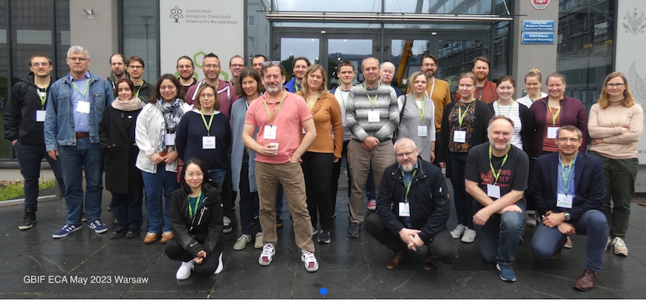
Exercise 2: Seek information on the Ethiopian Node
- When did Ethiopia joined the GBIF network?
- Who is the contact person for the Ethiopian Node?
- How much data publishers from Ethiopia?
Solution
- 2025 Associated participant
- No contact details
- Three data publishers
3: GBIF Governance
Exercise 3: Governing Board and Standing Committee
- Which country did host the two last Governing Bards?
- Who is the Chair of the Science Committee?
Solution
- Colombia in 2025 , Portugal in 2024
- Birgit Gemeinholzer is Science Committee Chair
Key Points
The GBIF portal is the place to find biodiversity data
Break
Overview
Teaching: min
Exercises: minQuestions
Objectives

Key Points
From data mobilization to data utilization in GBIF
Overview
Teaching: 30 min
Exercises: 0 minQuestions
Overview of data mobilization and utilization
Objectives
Understanding data mobilization and utilization
Key Points
Don’t underestimate the power of GBIF
Lunch Break
Overview
Teaching: min
Exercises: minQuestions
Objectives

Key Points
Overview
Teaching: min
Exercises: minQuestions
Objectives
Understanding occurrence data
By Lena Thöle
With over 2 billion records, GBIF is the world’s largest window into biological diversity. But how do you go from a massive cloud of data points to a robust, publication-ready analysis?
We move beyond simple downloads to explore the “fitness-for-use” of biodiversity data. You’ll learn to navigate the Darwin Core standard, utilize programmatic tools like rgbif, and apply rigorous data-cleaning protocols to handle taxonomic uncertainty and spatial bias. Whether you are modeling species distributions or tracking invasive species, this session will give you the toolkit to use global data with local precision.

Bioblitz
By Dimitri Brosens
From Field to Files: The Bishoftu Bioblitz on iNaturalist
Get ready to turn your curiosity into high-quality scientific data as we explore the rich biodiversity of Bishoftu’s crater lakes. During this Bioblitz, we will use iNaturalist to document every plant, bird, and insect we encounter, transforming our sightings into digital “occurrence records” in real-time. This session isn’t just about exploring the Rift Valley; it’s your hands-on introduction to the GBIF data pipeline. You’ll learn how a single snapshot on your phone becomes a verified data point used by researchers worldwide, setting the stage for the technical data-cleaning and analysis work we’ll tackle in the rest of this workshop.


Action : Bishoftu Bioblitz
The INaturalist website is the place where you will start your Bioblitz
- Go to inaturalist.org and register
- Go to the tab project and search for cesp ethiopia
- Click on Cesp Ethiopia Bioblitz and join
- Check this tutorial video
- How many observations from Ethiopia are already in INaturalist?
- And how many of them are on GBIF?
TASK
- Go out in nature
- Add observations to INaturalist
- Check the competition
SOLUTION
- Check INaturalist
- Check GBIF
Key Points
GBIF Hosted Portals
Overview
Teaching: 60 min
Exercises: 0 minQuestions
What are GBIF hosted portals
Objectives
Understand how GBIF hosted portals work.
Participant nodes play an essential role in promoting the use of biodiversity data mobilized by the GBIF network. To further support their engagement across national, institutional, regional and thematic levels, the GBIF Secretariat has developed a fully hosted service that provides simple, customizable biodiversity data portals to GBIF Participant nodes and their partners.
Each hosted portal is a simple website hosted and maintained on the GBIF infrastructure. The programme complements other tools available through the network by lowering the technical threshold for maintaining a branded web presence displaying a targeted subset of the data and information already available through GBIF.org.
Watch this introduction video:

What is a hosted portal?
A hosted portal is a simple, branded and fully customizable website that displays a targeted subset of GBIF-mediated data to support Participant nodes and their partners.
This service is designed to support biodiversity data use and engagement at national, institutional, regional and thematic scales.
Who is it for?
A hosted portal can benefit Participant nodes and publishers that need a simple yet fully functional data portal.
By lowering the technical demands for delivering biodiversity data, hosted portals can enable a focus on other critical activities like data management and community engagement.
How to apply
Participant nodes and their partner institutions can apply to participate in GBIF’s hosted portal programme at any time.
Learn more about the application process, then fill out and submit your application below to get started!
Fill out the application](https://www.gbif.org/composition/7zgSnALNuD1OvzanAUPG4z/hosted-portals-application-form) Check out the Hosted Portal service agreement
Some examples of hosted portals
DiSSCo-Flanders Hosted Portal DiSSCo-UK Hosted portal
Key Points
A GBIF hosted portal is a nice way to showcase your data
Hands on Exploring GBIF Biodiversity Data
Overview
Teaching: 45 min
Exercises: minQuestions
How exploring GBIF?
Exploring the world of Biodiversity data
Objectives
History of GBIF
How GBIF is organized.
Hands on Exploring GBIF Biodiversity Data
By Lena Thöle & Dimitri Brosens

Session Exercises: Exploring the Data
1. The “Data Gap” Detective
- Goal: Identify spatial bias in biodiversity recording.
- Task: Zoom into the Simien Mountains or Bale Mountains National Park on the GBIF map.
- Exercise: Compare the density of records inside the park boundaries versus the areas immediately outside.
- Discovery: Does the map reflect where the animals actually live, or simply where the roads, tourists, and researchers go?
2. The “Deep Time” Timeline
- Goal: Explore temporal data and historical records.
- Task: Search for the African Elephant (Loxodonta africana) in East Africa.
- Exercise: Use the Year filter to compare records from 1900–1950 against 2010–2025.
- Discovery: Look at the “Basis of Record.” Notice how historical data is dominated by “Preserved Specimens” (museums), while modern data is dominated by “Human Observations” (citizen science).
3. The “Taxonomic Backbone” Challenge
- Goal: Understand how GBIF handles synonyms and local names.
- Task: Search for the Teff plant using its local name vs. its scientific name (Eragrostis tef).
- Exercise: Explore the Taxonomy tab on the species page.
- Discovery: See how GBIF groups various scientific synonyms under one “Accepted Name.” This ensures you don’t miss data just because a researcher used an older or alternative name.
4. The “Media Explorer”
- Goal: Use GBIF for visual verification.
- Task: Filter for Orchids (Orchidaceae) in Ethiopia.
- Exercise: Apply the filter “Has Image” and browse the gallery.
- Task: Pick one image and trace it back to its Dataset (e.g., “iNaturalist research-grade observations” or “The Ethiopian Biodiversity Institute”).
Cheat Sheet: Interpreting GBIF Data
1. The “Big Three” Metrics
- Occurrences: The total number of individual records.
- Datasets: The number of different studies or collections contributing data.
- Publishing Institutions: The organizations (Museums, NGOs, Universities) sharing the data.
2. Common Data “Flags” to Watch For
- Coordinates Rounded: Indicates the location might not be precise.
- Individual Count Missing: We know the species was there, but not how many.
- Taxon Match Fuzzy: The name in the original data didn’t perfectly match the master list.
3. Understanding “Basis of Record”
- Living Specimen: Often from botanical gardens—great for ID, but not a “wild” location.
- Fossil Specimen: Important for historical range, but don’t include it in modern conservation models!
- Literature: Data extracted from old journals or books.
4. Navigating the Species Page
- Metrics Tab: Best for seeing charts of when the species is most active (Seasonality).
- Map Tab: Best for identifying “Outliers” (e.g., a mountain bird recorded in the middle of the ocean).
Cheat Sheet: The Ethiopia Country Dashboard
1. Key Metrics to Watch
- Occurrences about Ethiopia: All data points located within the country boundaries, regardless of who published them.
- Occurrences from Ethiopia: Data published by Ethiopian institutions (showing national research output).
- Species Count: The number of unique scientific names recorded in the country.
2. Identifying Data Gaps
- Spatial Gaps: Check the map for “empty” regions. Are they truly empty, or just under-sampled?
- Taxonomic Gaps: Look for groups like “Insects” or “Flowering Plants.” Often, these have far fewer records than Birds, representing a “knowledge gap.”
3. Usage Statistics
- Download Activity: See how many researchers globally are downloading data from Ethiopia. This shows the global importance of the Rift Valley’s biodiversity.
- Research Links: Every publication listed on this page is linked to the specific datasets it used via DOIs.


Excercise:
- How many data publishers are active in Ethiopia?
- How many datasets do contain records about Ethiopia?
- How many datasets are published by Ethiopia?
- Navigate to the INBO (Research Institute for Nature and Forest) IPT and check how many publishers are making use of this IPT instance
- Navigate to www.biodiversity.be and find GBIF info
SOLUTION
- 27
- 1274
- 536
- 8 (Check here)

Presentation : Engaging research communities for data mobilization and use: The GBIF node in Belgium

Key Points
The GBIF portal is the place to find biodiversity data
Data Quality, Data management and Download filters
Overview
Teaching: 60 min
Exercises: 0 minQuestions
Data Quality and Download Filters
Objectives
Data management basics, data quality basics and download filters
Data Quality, Data management and Download filters
By Lena Thöle

Data Managemant Tips and TRicks (optional)
By Dimitri Brosens

Key Points
Data managemnt Rules
Break
Overview
Teaching: min
Exercises: minQuestions
Objectives

Key Points
Break Optional reading GBIF Policy & science
Overview
Teaching: 30 min
Exercises: minQuestions
GBIF Science & Policy
Objectives
Understand how GBIF interacts with Science.
Understand how GBIF interacts with Policy.
Break
1: GBIF & Science
Exercise 1 : GBIF and Science
- How many citations for the Meditera3 dataset published by the University of Zagreb Faculty of Science?
- This dataset have been reused in one thesis. Which one?
- In the Science Review topics, which ones are of interest for you?
Solution
- 11 citations
- Decreases over time in shannon diversity of land snails by Hmming J.
- The covered topics of the Science Review are : AGRICULTURE, BIODIVERSITY SCIENCE , BIOGEOGRAPHY , CITIZEN SCIENCE , CLIMATE CHANGE , CONSERVATION, DATA MANAGEMENT, DNA , ECOLOGY, ECOSYSTEM SERVICES, EVOLUTION, FRESHWATER, HUMAN HEALTH, MARINE, PHYLOGENETICS, SPECIES DISTRIBUTION, TAXONOMY & INVASIVES.
2: GBIF & CBD
Exercise 2 : GBIF and CBD
- Does GBIF plays an official role in the CBD? Which role?
- Are GBIF data relevant to GBF targets?
- Which Ad-Hoc Technical Expert Group includes GBIF staff?
Solution
- Yes, GBIF is observer as Inter-Governmental Organization
- Yes, definitely
- AHTEG on Indicators
3: Delivering relevant data
Exercise 3 : Delivering relevant data
- Is GBIF data reuse by Science?
- Is GBIF data reuse by Policy?
Solution
- Yes! see Science Review
- Yes! eg CBD, IPBES and Impact Assessments
4: Science Policy Interface
Exercise 4 : Science Policy Interface
- Does GBIF supports national biodiversity commitments?
- Does GBIF supports Science Policy Interface?
- Is this done by the nodes and/or the Secretariat?
Solution
- Yes
- Yes
- Both
Key Points
GBIF data reuse by scientists
GBIF Science review
GBIF interaction with CBD
Delivering relevant data
Science Policy Interface
Hands-on: Downloading via GBIF.org, wrap-up and discussions
Overview
Teaching: 0 min
Exercises: 9à minQuestions
Objectives
Hands on with GBIF
Hands-on: Downloading via GBIF.org, wrap-up and discussions
By Lena and Dimitri
In this session, we transition from the field to the digital laboratory. Participants will learn how to navigate the GBIF.org portal to locate, filter, and download the data that underpins global conservation efforts.
To make the learning process engaging, we have designed a series of exercises centered on the unique ecosystems of Ethiopia and the wider African continent.
Session Exercises: Hands-on with GBIF
1. The “Endemic Hunter” Challenge
- Goal: Learn basic taxonomic and geographic filtering.
- Task: Search for the Ethiopian Wolf (Canis simensis) or the Gelada Monkey (Theropithecus gelada).
- Exercise: Filter the results to include only observations from Ethiopia that have coordinates and images.
- Bonus: Compare the “Observation” records (citizen science) vs. “Preserved Specimen” records (museums) for these species. Which dataset is larger?
2. Mapping the “Bishoftu Blueprint”
- Goal: Use the “Search by Polygon” tool for localized data.
- Task: Using the map interface on GBIF.org, draw a custom polygon around the Bishoftu Crater Lakes area.
- Exercise: Download a Species List (CSV) of all organisms recorded within that specific shape.
- Discussion: How many of these records originated from the iNaturalist Bioblitz we just conducted?
3. The “Invasive Alert” (Regional Focus)
- Goal: Understand temporal trends and data flags.
- Task: Search for the Parthenium weed (Parthenium hysterophorus), a major invasive species in East Africa.
- Exercise: Use the Year slider to see how the number of records in Africa has grown over the last 20 years.
- Quality Check: Identify how many records are “flagged” for geospatial issues (e.g., coordinates that fall in the ocean instead of on land).
4. The “Great Download”
- Goal: Master download formats and citations.
- Task: Perform a “Simple” download for all Avian (Bird) records in Ethiopia from the last 5 years.
- Exercise: Once the download is ready, locate the DOI (Digital Object Identifier).
- Importance: We will practice citing this DOI—this is the most critical step for ensuring data providers get credit for their work!
GBIF Search Filter Cheat Sheet
1. Basis of Record
- Human Observation: Citizen science and field sightings (e.g., iNaturalist).
- Preserved Specimen: Physical samples from museums or herbaria.
- Living Specimen: Botanical gardens or zoos.
- Machine Observation: Camera traps or sensors.
2. Location & Coordinates
- Has Coordinate: Always check this if you plan to map the data.
- Has Geospatial Issue: If checked, it shows records where coordinates might be wrong (e.g., in the ocean). Usually best to exclude these.
3. Data Quality
- Occurrence Status: Choose Present to see where things were found.
- Identification Qualifier: Look for “Confirmed” or “Research Grade” for higher reliability.
4. Licenses (Usage Rights)
- CC0 / CC-BY: Open data. Most scientific use requires CC-BY (you must cite the DOI).
5. Taxonomic Backbone
- Scientific Name: Use the Latin name for accuracy.
- Taxon Key: A unique ID GBIF uses to track species regardless of name changes.
GBIF Discussion (optional)

What challenges are next in relation to:
- Data Quality: Discuss the challenges and strategies for ensuring the quality of biodiversity data in GBIF. How can we address issues such as incomplete or inaccurate data?
Quality is important, and data should be verified (AI could help in some parts, but in the end you need well trained AI. Specialists are still very needed. Especially for difficult species. Imprtant shoul be the versioning of the verification of data . Spatial visualisation is important, and in the contract shoud be notad that data publication (quality data should be published)
- Data Access and Use: Explore the various ways researchers, policymakers, and the public can access and utilize the data available through GBIF. How can we maximize the impact of this data for conservation and research?
Maximizing the use of data. There is the need to improve the data coverage (geographically and also by environmental conditions.) Gap analysis…. Environmental variables. Support and collaborate with the for example Biodiversa+ and maximase the use of the data.
- Data Sharing and Collaboration: Discuss the importance of collaboration among institutions and countries in sharing biodiversity data through GBIF. How can we encourage more participation and data sharing?
Many advantages in sharing data to GBIF. Your work is visible for science and policy. New collaborations. It avoids (in some cases) repetition of collection. BEtter planning of data collection and avoid mistakes that were done in the past. Data what you share are already prepared and standardized…. Collaboration- A node is a good thing. More participation: more visibility to datasets and make them more usable. (small grants for institutions for data mobilization & digitizing)
- Technological Advances: Consider how technological advancements such as machine learning, remote sensing, and DNA sequencing are shaping the future of biodiversity data collection and analysis within GBIF.
We need to make more integration between BOLD and GBIF. Good thing they they are working on that!!
- Data Privacy and Security: Address concerns around data privacy and security within GBIF, particularly regarding sensitive species or locations. How can we balance open access with the need to protect sensitive information?**
Already addressed today and before. Privacy concers (is GDPR an issue , or maybe not :) ). Name and surname should be provided. Locations for sensitive species can be blurred, **species blurring is not a good thing!!!
-
Capacity Building: Explore opportunities for capacity building initiatives to empower researchers, particularly in developing countries, to contribute to and utilize biodiversity data through GBIF.
Recognize this recognition for GBIF in the citation. Use of bibliographicCitation in DwC should be promoted. In a call, an obligation for sharing data could be mantioned. If you publish in scientific papers before sharing with GBIF, you shoul make sure the connection is made More Workshops
-
Monitoring and Assessment: Discuss how biodiversity data from GBIF can be used for monitoring changes in biodiversity over time and assessing the effectiveness of conservation efforts.
-
Future Directions: Consider the future directions of GBIF and the role it can play in addressing global challenges such as climate change, habitat loss, and species extinction.
Discussion challenge
Choose a topic to discuss in your group. 30 minutes for group discussion. 30 minutes for reporting back to the room. 5-6 persons per group.
Solution
Report back to the room on your group discussion
Key Points
Download your data from GBIF
Intro to R & GBIF-Related R packages ((rgbif, finch,..)
Overview
Teaching: 45 min
Exercises: 0 minQuestions
What is R
Objectives
Getting familiar with R and packages
Intro to R & GBIF-Related R packages ((rgbif, finch,..)
By Lena Thöle

R Biodiversity Cheat Sheet
1. Installation & Setup
install.packages("rgbif")
install.packages("finch")
library(rgbif)
Introduction to R & GBIF-Related Packages
Why use R for biodiversity data? While the GBIF portal is powerful, R allows for reproducible, automated, and large-scale science. By using a programmatic interface, you can move from raw data to sophisticated visualizations and models in a single script.
In this session, we introduce the core tools developed by the rOpenSci community that allow R to “talk” directly to the GBIF servers.
Core R Packages for this Session
- rgbif: The primary interface for the GBIF API. It allows you to search for species, check taxonomic names against the GBIF backbone, and request bulk data downloads directly from your R console.
- finch: A specialized tool used to parse Darwin Core Archive (DwC-A) files. When you download large datasets,
finchhelps R read the complex structure of these zip files effortlessly. - CoordinateCleaner: A vital companion package used to “scrub” your data—automatically flagging records that fall in the ocean, at city centers, or inside museum coordinates.
Session Exercises: R Programming for Biodiversity
1. The “Hello GBIF” Script
- Goal: Successfully connect R to the GBIF API.
- Task: Install and load
rgbif. Use thename_backbone()function to find the uniqueusageKeyfor an Ethiopian endemic, such as the Mountain Nyala (Tragelaphus buxtoni). - Discovery: Why is the
usageKeymore reliable than just searching for the name string?
2. Rapid Mapping with occ_data
- Goal: Visualize sightings in under five lines of code.
- Task: Use the
occ_data()function to pull the last 500 records of Coffee (Coffea arabica) in Ethiopia. - Exercise: Pipe the results into a quick plot.
- Discovery: Identify any obvious spatial outliers in the resulting map.
3. Parsing the Archive with finch
- Goal: Handle bulk downloads that are too large for simple CSVs.
- Task: Take a local Darwin Core Archive (.zip) from our Bishoftu Bioblitz.
- Exercise: Use
finch::dwca_read()to explore the “metadata” and “core” data tables hidden inside the zip.
4. The “Cleaner” Challenge
- Goal: Automated data quality control.
- Task: Run a set of Ethiopian occurrence records through the
clean_coordinates()function. - Exercise: Identify how many records were flagged as “invalid” because they were exactly at 0,0 or located at the coordinates of a known herbarium.
Starter Kit
— PREPARATION: Install and Load Packages —
Run these once to set up your environment
install.packages(c(“rgbif”, “finch”, “CoordinateCleaner”, “ggplot2”, “dplyr”))
library(rgbif)
library(rgbif)
library(finch)
library(CoordinateCleaner)
library(ggplot2)
library(dplyr)
— EXERCISE 1: The “Hello GBIF” Script —
Finding the unique Taxon Key for the Mountain Nyala or Gedemsa
nyala_lookup <- name_backbone(name = "Tragelaphus buxtoni")
nyala_key <- nyala_lookup$usageKey
print(paste("The usageKey for Mountain Nyala is:", nyala_key))
Discovery: The usageKey is a unique ID that prevents issues with synonyms or common names.
— EXERCISE 2: Rapid Mapping with occ_data —
Pull the last 500 records of Coffee (Coffea arabica) in Ethiopia
coffee_data <- occ_data(
scientificName = "Coffea arabica",
country = "ET", # ISO code for Ethiopia
hasCoordinate = TRUE, # Only get records we can map
limit = 500
)
Extract the data frame
coffee_df <- coffee_data$data
Quick visualization
ggplot(coffee_df, aes(x = decimalLongitude, y = decimalLatitude)) +
geom_point(color = "darkgreen", alpha = 0.5) +
theme_minimal() +
labs(title = "Coffea arabica Occurrences in Ethiopia")
— EXERCISE 3: Parsing the Archive with finch —
Replace ‘path/to/your/bioblitz.zip’ with the actual file path
bioblitz_archive <- dwca_read("path/to/your/bioblitz.zip", read = TRUE)
Explore the contents
View(bioblitz_archive$data[[1]]) # View the main occurrence table
— EXERCISE 4: The “Cleaner” Challenge —
Clean the coffee data using automated tests
cleaned_coffee <- clean_coordinates(
x = coffee_df,
lon = "decimalLongitude",
lat = "decimalLatitude",
species = "species",
tests = c("capitals", "centroids", "equal", "zeros", "institutions")
)
summary of flags found
summary(cleaned_coffee)
Keep only the ‘clean’ records
coffee_final <- coffee_df[cleaned_coffee$.summary, ]

Presentation (optional Extra informatio)

Excercise : FAIR data & Open Science
- What is the difference between FAIR and OPEN data?
- Check the FAIR Self assessment tool here Think about a dataset you know and run over the assessment
- What could you do to make your data more FAIR?
- Is data published through GBIF FAIR?
- Is all data published by GBIF considered as open data?
SOLUTION
- FAIR data is not always open, FAIR data is findable and good documented. Open data per definition is not always FAIR. (Just an Excel somewhere on a website is considered as open data)
- Publish your data in GBIF or in another open repository like Zenodo
- YES
- No, CC-BY-NC is not considered as open data

Presentation

Excercise : Creative commons license chooser
- Check the Creative commons license chooser
- Learn how to find an appropriate license for your biodiversity data
- Is this license alowed for GBIF?
- Is CC-BY-NC an open data license?
SOLUTION
- Check the license chooser
- The only licenses allowed for GBIF are CC0 ; CC_BY ; and CC_BY_NC
- CC-BY-NC is not considered as an open data license

Key Points
Getting familiar with R and packages
Hands on: Working with rGBIF
Overview
Teaching: min
Exercises: 90 minQuestions
What is a Biodiversity dataset?
Objectives
Distinction between data quality and fitness for use
Make sure your data are tidy data
Learn some best practices
Hands-on: Advanced Workflows with rgbif
This session is designed for researchers who need to scale their data collection. We will explore how to automate repetitive tasks and how to interact with GBIF’s server-side download system, which is required for datasets larger than 100,000 records.
Session Exercises: Scaling Your Research
1. Installation & Setup
library(rgbif)
library(dplyr)
library(ggplot2)
library(sf)
library(rnaturalearth)
library(rnaturalearthdata)
library(httr)
set_config(config(http_version = 1.1))
1. The “Batch Search” (Multi-Species Loop)
Goal: Automate the retrieval of data for a list of species. Task: Create a vector of scientific names for three Ethiopian endemics. Use a loop or lapply to fetch coordinates for all of them at once. Change the species names to the one you have an interest in!
Define your target species
target_species <- c("Canis simensis", "Theropithecus gelada", "Tragelaphus buxtoni")
Map over the list to get data for each
multi_species_data <- lapply(target_species, function(sp) {
occ_data(scientificName = sp, limit = 100, hasCoordinate = TRUE)$data
})
Combine into one large data frame
all_obs <- bind_rows(multi_species_data)
Result: One table containing data for all three species
table(all_obs$species)
2. Spatial Filtering with WKT (Well-Known Text)
Goal: Filter records using a precise geographic shape rather than just a country code. Task: Define a polygon for a specific region (like the Ethiopian Highlands) and use it as a filter in occ_data.
Define a simple polygon around the northern highlands (WKT format) Note: WKT must close the loop by repeating the first coordinate at the end.
You can draw WKT polygons here: https://wktmap.com/
a. Define WKT and convert to spatial object
wkt_text <- "POLYGON((35.599152 8.667918, 36.346321 7.449624, 37.313245 7.623887, 37.92856 8.494105, 37.005587 9.535749, 35.599152 8.667918))"
wkt_sf <- st_as_sfc(wkt_text, crs = 4326)
b. Get data and convert to spatial points
pts_sf <- occ_data(geometry = wkt_text, limit = 50)$data %>%
st_as_sf(coords = c("decimalLongitude", "decimalLatitude"), crs = 4326)
c. Plot (The WKT acts as the background/container)
ggplot() +
geom_sf(data = wkt_sf, fill = "lightblue", alpha = 0.3) +
geom_sf(data = pts_sf, aes(color = species)) +
theme_minimal()
3. Asynchronous Downloads for “Big Data”
Goal: Learn the official way to request massive datasets for publication. Task: Use occ_download() to request data. Unlike occ_data, this sends a request to GBIF’s servers and gives you a status key to check later.
Note: This exercise requires your GBIF.org username and password.
Request a large download (requires GBIF credentials)
my_download <- occ_download(
pred("taxonKey", 2433257), # Key for Canis simensis
pred("country", "ET"),
format = "DWCA",
user = "YOUR_USERNAME",
pwd = "YOUR_PASSWORD",
email = "YOUR_EMAIL"
)
my_download <- occ_download(
pred("taxonKey", 2433257), # Key for Canis simensis
pred("country", "ET")
)
OR
my_download2 <- occ_download(
pred("scientificName", "Canis simensis"),
pred("hasCoordinate", TRUE)
)
Check the status (it takes time to process)
occ_download_wait(my_download)
Download and load the resulting file
my_dataset <- occ_download_get(my_download) %>% occ_download_import()
4. Metadata & Citation Extraction
Goal: Ensure your work is citable and transparent. Task: Extract the dataset metadata from your R object to see which original institutions provided the data.
Get citation information for your search results
citation_info <- gbif_citation(coffee_data)
Print the DOIs and provider names
print(citation_info)
R Markdown Template: Advanced rgbif
Copy this code into a new R Markdown file to follow along with the advanced exercises.
title: “Advanced GBIF Workflows” output: html_document —
Step 1: Batch Name Resolution
Before searching, we resolve names to keys to ensure 100% accuracy.
species_list <- c("Canis simensis", "Loxodonta africana")
keys <- sapply(species_list, function(x) name_backbone(name=x)$usageKey)
Step 2: Complex Filtering
We search using the keys, limited to Human Observations in Ethiopia.
advanced_search <- occ_data(
taxonKey = keys,
country = "ET",
basisOfRecord = "HUMAN_OBSERVATION",
limit = 200
)
Step 3: Global Data Citation
Every research project must cite the data correctly.
# Combine the data parts of the two species into one table
all_data <- bind_rows(
advanced_search[[1]]$data,
advanced_search[[2]]$data
)
dataset_summary <- all_data %>%
group_by(datasetKey) %>%
tally(sort = TRUE)
print(dataset_summary)
head(all_data)
Get a list of all unique datasets involved
dataset_counts <- all_data %>%
group_by(datasetKey) %>%
tally()
Create a vector of keys and their record counts
citation_keys <- setNames(dataset_counts$n, dataset_counts$datasetKey)
1. Get unique keys
unique_keys <- unique(all_data$datasetKey)
2. Map through keys using the updated function: dataset_get()
dataset_titles <- map_chr(unique_keys, function(x) {
Sys.sleep(0.1) # Small pause to prevent API flickering
res <- dataset_get(x)
return(res$title)
})
3. Create a clean reference table
citation_table <- data.frame(
datasetKey = unique_keys,
Title = dataset_titles
)
print(citation_table)
Finch Exploring a Local Archive
In this exercise, we will use a sample file included with the package to understand the structure of a finch object.
Task: Load an example zip file and identify how many data sources it contains without reading the full data into memory.
library(finch)
# 1. Locate the example zip file within the package
zip_path <- system.file("examples", "0000154-150116162929234.zip", package = "finch")
# 2. Read the archive (metadata only)
# Setting read = FALSE is much faster for large files
out <- dwca_read(zip_path, read = FALSE)
# 3. Inspect the object
print(out)
# YOUR TURN:
# Can you find the path to the 'occurrence.txt' file inside this object?
# Hint: Look at out$files$txt_files
Reading Data & Metadata Once you know an archive is what you want, you need to actually pull the data into a data frame.
Task: Read the full contents of the archive and extract the taxonomic information from the first dataset.
# 1. Read the archive including the actual data
out_full <- dwca_read(zip_path, read = TRUE)
# 2. Access the main data table (usually the first element in the data list)
occ_data <- out_full$data[[1]]
# 3. View the first few rows
head(occ_data)
# 4. Check the EML (Ecological Metadata Language) for the citation
cat(out_full$emlmeta$additionalMetadata$metadata$gbif$citation)
# YOUR TURN:
# Identify the column names of the occurrence data.
# How many records (rows) are in this specific dataset?
Validating an Archive Before merging external data into your all_data table, it’s good practice to ensure the archive is valid according to GBIF standards.
Task: Use finch to validate a remote archive.
# 1. Define a URL to a Darwin Core Archive (this is a sample from GBIF)
dwca_url <- "http://rs.gbif.org/datasets/german_sl.zip"
# 2. Validate the archive
# Note: This sends the URL to the GBIF validator tool
validation <- dwca_validate(dwca_url)
# 3. Check the results
print(validation)
# YOUR TURN:
# Set 'browse = TRUE' in the dwca_validate function.
# What happens in your web browser?

Presentation (optional)

Exercise
Challenge: Make this data tidy.
- Download this SAMPLE_DATE
- Open in spreadsheet programme (Excel, LibreOffice, Openoffice,….)
- Make this data Tidy (Each variable forms a column and contains values, Each observation forms a row, Each type of observational unit forms a table) Open this link for the complete excercise and tips
Solution
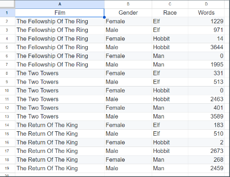
Key Points
rGBIF is the best
Best data management practices
Organize your Data and Metadata
Coffee Break
Overview
Teaching: min
Exercises: minQuestions
Objectives

Key Points
Introduction to GBIF data cubes (SQL option)
Overview
Teaching: 90 min
Exercises: 90 minQuestions
Objectives
Understand the purpose of Cubes
Introduction to GBIF data cubes (SQL option)
Traditional downloads give you every single column for every single record. Data Cubes are different: they are multi-dimensional summaries. They are perfect for answering questions like: “How has the number of recorded bird species in Ethiopia changed per year since 1970?”
In this session, we explore the SQL Download API, which allows you to write custom queries to “slice and dice” the GBIF database before you even hit the download button.
The next logical step in your workshop is the GBIF Data Cube. This is a relatively new and powerful feature that moves away from raw record lists toward “Analysis-Ready” summarized data.
Instead of downloading 1 million individual dots (records) and aggregating them yourself, a Data Cube allows you to ask GBIF’s servers to do the math for you—returning a neat table of counts based on time, space, and taxonomy.
Why use Data Cubes?
Performance: Smaller file sizes (KBs instead of GBs).
Speed: The aggregation happens on GBIF’s high-performance servers.
Flexibility: You choose exactly which “dimensions” (columns) you want.
FAIR Data: Each cube gets its own DOI, making your summarized analysis fully citable.
The “Golden Rules” of GBIF SQL
| Rule | Constraint |
|---|---|
| Only One Table | You can only query the occurrence table. You cannot use JOIN to combine it with other tables (like checklists or environmental layers). |
No SELECT * |
You must explicitly list the columns you want (e.g., SELECT scientificName, decimalLatitude). This keeps the download size manageable. |
| Single Query | Sub-queries (queries inside other queries) are generally not supported. |
| Read-Only | You can only use SELECT commands. You cannot INSERT, UPDATE, or DELETE anything. |

Extra Exercise 1: The “Simple Summary” Cube
Goal: Create a cube that counts species per year for a specific group. Task: Use the “Cube” tab on the GBIF download page. Select Taxonomic (Species) and Temporal (Year) as your dimensions. Exercise: Run this for Mammals in Ethiopia. Result: You will get a table with three columns: species, year, and occurrenceCount.
SOLUTION
Extra Exercise 2: Grid-Based Exploration (The Spatial Dimension)
Goal: Summarize data into standardized geographic grids. Task: Create a cube using a Spatial Dimension (e.g., the EEA 1km grid or the Military Grid Reference System). Exercise: Pick a specific region in Ethiopia (like the Simien Mountains) and see how many observations exist per grid cell.
SOLUTION
Extra Exercise 3: Customizing with SQL (The “Edit as SQL” Challenge)
Goal: Use SQL to add complex filters like “Life Stage” or “IUCN Category.” Task: Switch to the Edit as SQL view in the GBIF portal. Exercise: Modify the query to count only records where lifeStage = ‘ADULT’.
SOLUTION
Extra Session Exercises: Thinking in SQL
-
The “Simple Summary” Cube Goal: Create a cube that counts species per year for a specific group. Task: Use the “Cube” tab on the GBIF download page. Select Taxonomic (Species) and Temporal (Year) as your dimensions. Exercise: Run this for Mammals in Ethiopia. Result: You will get a table with three columns: species, year, and occurrenceCount.
-
Grid-Based Exploration (The Spatial Dimension) Goal: Summarize data into standardized geographic grids. Task: Create a cube using a Spatial Dimension (e.g., the EEA 1km grid or the Military Grid Reference System). Exercise: Pick a specific region in Ethiopia (like the Simien Mountains) and see how many observations exist per grid cell.
-
Customizing with SQL (The “Edit as SQL” Challenge) Goal: Use SQL to add complex filters like “Life Stage” or “IUCN Category.” Task: Switch to the Edit as SQL view in the GBIF portal. Exercise: Modify the query to count only records where lifeStage = ‘ADULT’.
SQL
SELECT
speciesKey,
year,
COUNT(*) AS occurrenceCount
FROM occurrence
WHERE
countryCode = 'ET' AND
lifeStage = 'ADULT' AND
year >= 2000
GROUP BY speciesKey, year
GBIF SQL
SELECT
specieskey,
"year",
COUNT(*) occurrencecount
FROM
occurrence
WHERE
occurrence.countrycode = 'ET'
AND occurrence.lifestage.concept = 'ADULT'
AND occurrence."year" >= 2000
GROUP BY
occurrence.specieskey,
occurrence."year"
Extra Exercise 4: The “Uncertainty” Filter
Goal: Create a high-quality data cube by filtering for precision. Task: Add a constraint to your SQL query to only include records with a coordinateUncertaintyInMeters less than 100m.
SOLUTION
- The “Uncertainty” Filter Goal: Create a high-quality data cube by filtering for precision. Task: Add a constraint to your SQL query to only include records with a coordinateUncertaintyInMeters less than 100m.
SELECT
speciesKey,
year,
COUNT(*) AS occurrenceCount
FROM occurrence
WHERE
countryCode = 'ET' AND
coordinateUncertaintyInMeters < 100
GROUP BY speciesKey, year
Transformed into SQLgbif
SELECT
specieskey,
"year",
COUNT(*) occurrencecount
FROM
occurrence
WHERE
occurrence.countrycode = 'ET'
AND occurrence.coordinateuncertaintyinmeters < 100
AND specieskey = 1
GROUP BY
occurrence.specieskey,
occurrence."year"
will become
SELECT
specieskey,
"year",
COUNT(*) occurrencecount
FROM
occurrence
WHERE
occurrence.countrycode = 'ET'
AND occurrence.coordinateuncertaintyinmeters < 100
AND CAST(occurrence.specieskey AS INTEGER) = 1
GROUP BY
occurrence.specieskey,
occurrence."year"
Which GBIF will transform correctly
GBIF SQL Cheat Sheet
1. Essential Columns
occurrence: The main table containing all data.speciesKey: The unique ID for the species.basisOfRecord: How the data was collected (HUMAN_OBSERVATION, etc).
2. Useful SQL Functions
COUNT(*): Counts the number of records in each group.COUNT(DISTINCT speciesKey): Counts how many unique species are in that group.GBIF_MGRSCode(gridSize, lat, lon): Groups points into military grid cells.
3. Basic Query Structure
SELECT
dimensions (e.g., year, speciesKey),
measure (e.g., COUNT(*))
FROM occurrence
WHERE filters (e.g., countryCode = 'ET')
GROUP BY dimensions
Let’s break down that exact template and highlight the major differences between standard relational SQL and GBIF’s specific flavor of SQL.
1. FROM occurrence (The Single Source of Truth)
Normal SQL: You usually have dozens of smaller, connected tables. You might have one table for locations, one for species_names, and one for observations.
GBIF SQL: The GBIF database is heavily denormalized into one massively wide, flat table called occurrence. For 99% of your GBIF queries, FROM occurrence is practically hardcoded.
2. No JOIN Clauses Allowed
Normal SQL: If you want to connect a species ID to its actual scientific name, you would write something like JOIN taxa ON taxa.id = occurrence.speciesKey.
GBIF SQL: GBIF SQL does not support JOINs. Because it is querying a dataset of billions of rows across a distributed “Big Data” cluster, joining tables is too computationally expensive. Instead, GBIF has already pre-packed all the information (kingdom, phylum, species name, etc.) directly into the occurrence table.
3. Complex Data Types (Structs & Arrays)
Normal SQL: Columns usually hold simple data types: a text string, an integer, a date, or a boolean (true/false).
GBIF SQL: As we saw with lifeStage.concept, GBIF uses advanced data types to handle complex biological standards. Many fields are “Structs” (records containing multiple sub-fields) or Arrays (lists of items). You have to use dot notation (like media.type or issue.concept) to filter them, which isn’t standard in basic SQL.
4. Strict Case Sensitivity and Reserved Words
Normal SQL: Many SQL engines are completely case-insensitive. SELECT specieskey and SELECT speciesKey would work identically.
GBIF SQL: The GBIF SQL parser is notoriously strict. Column names must match their official camelCase format exactly. Furthermore, standard terms like “year”, “month”, and “day” are strictly reserved and will instantly break the query if not wrapped in double quotes.
5. Read-Only and Aggregation-Heavy
Normal SQL: You use SQL to manage the database (INSERT new rows, UPDATE records, DELETE mistakes).
GBIF SQL: You are operating in a strict, read-only environment. The portal is specifically designed for data extraction, usually via aggregations (like COUNT(*)). While you can run a query without a GROUP BY to just download raw rows, using dimensions and measures is highly encouraged to summarize the data before you download a massive, multi-gigabyte file.
In short, GBIF SQL strips away the relational complexity of normal SQL (no joins, no managing tables) but adds Big Data quirks (complex structs, strict casing, flat architecture) to handle billions of biological records efficiently.

Presentation Open Refine (optional)

You can find the complete user manual here
Excercise : Openrefine
- Complete this exercise
SOLUTION
- follow the guidelines in the tutorial document

Key Points
Hip to be Cubed
Lunch Break
Overview
Teaching: min
Exercises: minQuestions
Objectives
Key Points
Openrefine part 2
Overview
Teaching: 0 min
Exercises: 90 minQuestions
What is Openrefine? an introduction
Data cleaning with open refine?
Name matching with Openrefine
Objectives
Understand the purpose of Openrefine
Openrefine
Presentation
Excercise : Openrefine
- Finish this exercise
SOLUTION
- follow the guidelines in the document
Excercise : Openrefine Extra exercice
The GLobal names veriefier gives you the opportunity to check your names with numerous sources. 209 Checklists are used for this service.
- On your column ‘scientificName’ Go to reconciliation services -> reconcile –> start reconciling
- Click on ‘add reconciliation service’ and fill in “https://verifier.globalnames.org/api/v1/reconcile”
- Click on Globalnames
- Click on start reconciling
- Click reconcile –> facets –> ‘choose your way of judgement’
SOLUTION
- After reconciliation your names are matched
- More information on this service here
Key Points
Openrefine saves time
Hands-on: GBIF Data Cubes
Overview
Teaching: 0 min
Exercises: 90 minQuestions
GBIF Data Cubes?
Data cleaning with SQLite
Objectives
Understand how GBIF data cubes can help you in creating complex downloads
Understand how SQLite can help cleaning data
Hands-on: SQL queries
Presentation GBIF Data Cubes Hands on

Extra Exercise 1: The Time-Series Cube (Year & Month)
Scenario: You want to track the seasonality of observations. However, you want the year and month combined into a single formatted > string (e.g., 2023-05) so it’s easier to plot later.
- Task: Create a cube that counts species occurrences by year-month for Ethiopia, ensuring you exclude records where the month is missing.
SOLUTION
SELECT speciesKey, PRINTF('%04d-%02d', "year", "month") AS yearMonth, COUNT(*) AS occurrenceCount FROM occurrence WHERE countryCode = 'ET' AND "year" >= 2000 AND "month" IS NOT NULL GROUP BY speciesKey, PRINTF('%04d-%02d', "year", "month")Why this rocks: We use the PRINTF function to format the output. Notice that we filter out NULL months in the WHERE clause so > > > we don’t end up with messy 2023-NULL strings!
Extra Exercise 2: The Missing Data Handler (COALESCE)
Scenario: You want to group your data by biological dimensions like sex and lifeStage. The problem? A massive amount of GBIF data > leaves these fields completely blank (NULL), which can cause issues when analyzing the final table.
- Task: Build a cube that categorizes data by species, sex, and life stage, but safely replaces any missing values with the text ‘NOT_SUPPLIED’
SOLUTION
SELECT specieskey, COALESCE(sex.concept, 'NOT_SUPPLIED') sex, COALESCE(lifestage.concept, 'NOT_SUPPLIED') lifestage, COUNT(*) occurrencecount FROM occurrence WHERE occurrence.countrycode = 'ET' GROUP BY occurrence.specieskey, COALESCE(occurrence.sex.concept, 'NOT_SUPPLIED'), COALESCE(occurrence.lifestage.concept, 'NOT_SUPPLIED')Why this rocks: COALESCE() is a lifesaver. It looks at the first argument, and if it’s empty, it falls back to the second argument. This keeps your data cube mathematically tidy.
Extra Exercise 3: The Spatial Grid Cube
Scenario: To build distribution models, scientists rarely use exact points; they prefer to count how many occurrences fall into standardized grid cells (like 1km or 10km squares). GBIF provides custom B-Cubed grid functions specifically for this! Task: Generate a 1-kilometer grid cell code for every observation using the GBIF_EEARGCode function, and count the species per cell.
SOLUTION
SELECT GBIF_EEARGCODE(1000, decimallatitude, decimallongitude, COALESCE(coordinateuncertaintyinmeters, 1000)) eeacellcode, specieskey, COUNT(*) occurrencecount FROM occurrence WHERE occurrence.countrycode = 'ET' AND occurrence.hascoordinate = TRUE GROUP BY GBIF_EEARGCODE(1000, occurrence.decimallatitude, occurrence.decimallongitude, COALESCE(occurrence.coordinateuncertaintyinmeters, > > 1000)), occurrence.specieskeyWhy this rocks: The custom function takes the grid size (1000m), the coordinates, and the uncertainty. If the coordinate uncertainty is missing, we use COALESCE to default it to 1000 meters so the function doesn’t fail
Extra Exercise 4: The Multi-Measure Cube
Scenario: A data cube doesn’t have to be limited to just counting rows (COUNT(*)). Sometimes you want to extract other summary statistics alongside your counts to assess the quality of the data in that specific bucket. Task: Group occurrences by species and year, count them, but also calculate the minimum coordinate uncertainty for that specific group.
SOLUTION
SELECT specieskey, "year", COUNT(*) occurrencecount, MIN(coordinateuncertaintyinmeters) minuncertainty FROM occurrence WHERE occurrence.countrycode = 'ET' AND occurrence."year" >= 2000 GROUP BY occurrence.specieskey, occurrence."year"Why this rocks: You are now pulling multiple “measures” (aggregations) for the exact same set of dimensions. This tells you not only how many records exist, but the “best case scenario” for spatial precision within that year.
Extra Exercise 5: The Sampling Bias Hunter (Window Functions)
Scenario: If you see a spike in a specific bird species count in 2020, did the population actually increase, or were there just more birdwatchers that year? To figure this out, ecologists compare species counts against the total counts of their broader Family. Task: Write an advanced query that counts occurrences per species, but uses an SQL “Window Function” to also calculate the total occurrences for the entire family in that same row.
SOLUTION
SELECT familykey, specieskey, "year", COUNT(*) speciescount, SUM(COUNT(*)) OVER ( PARTITION BY familykey) familytotalcount FROM occurrence WHERE occurrence.countrycode = 'ET' AND occurrence.familykey IS NOT NULL GROUP BY occurrence.familykey, occurrence.specieskey, occurrence."year"Why this rocks: Window functions (OVER (PARTITION BY …)) are absolute magic. They let you perform a massive secondary calculation (like the total sum of the entire family) and tack it onto your grouped rows without needing to write a second, separate SQL query!

Optional Presentation: SQLite
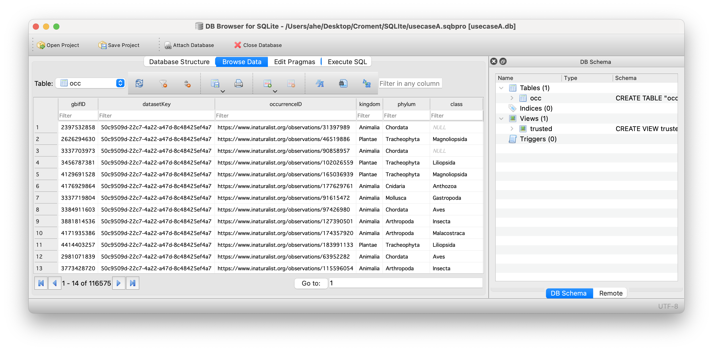
Exercise 1 : Download from GBIF.org
Instructions
- Select at least one of the use cases
- Follow the use case dataset links:
- Click on the occurrences button
- On the left panel, filter by CountryOrArea
- How many occurrences to you see for Croatia?
- ⬇️ Download in simple CSV format
- Open the downloaded file with a text editor
Exercise 2 : Import data
Instructions
- Open the DBrowser application
- Create a new empty database
- Import the GBIF downloaded data into an SQL table named ‘occ’
- How many records do you have?
- Save your database
Exercise 3 : Explore data
Instructions
- (Re)Open your database with DBBrowser
- Do you ALWAYS have scientificName, date and coordinates?
- How complete are the data? (describe)
- Put special attention to individualCount, taxonRank, coordinatesUncertainty, license, issues fields
- Are all records suitable for your study(fitness for use)? Explain why?
- Would you filter out some data? Explain why?
Exercice 4 : Discard data
Instructions
- Do you have absence data? (see occurrenceStatus field)
- Discard absence data
- Create a trusted view to eliminate absence data and data with taxonRank different from SPECIES
- How many records do you have in this trusted view?
Exercice 5 : Filter data
Instructions
- Do you have data without coordinatesUncertaintyInMeters?
- Do you have data with coordinates uncertainty > 10 km?
- Update your trusted view to filter out these records
- Select only these fields in your view:
- scientificName, Date, coordinates, uncertainty and occurrenceID
- How many records do you have now?
Exercice 6 : Annotate data
Instructions
- IndividualCound is not a mandatory field, set it to 1 when null
- Add a withMedia field, set it to True when mediaType is not null
- Add these two fields to your trusted view
- Export the trusted view results in a CSV file
- (Now you are ready to merge this online data with your own data)
Solutions
If needed, see the solutions page.
Key Points
GBIF Data Cubes are a poweerful tool
SQL can be very useful to clean your data
Views are great to filter the records and fields you want to keep without changing your original data
SQL statements are easy to understand, sustainable and reusable
Coffee Break
Overview
Teaching: min
Exercises: minQuestions
Objectives
Key Points
Hands-on: SQL queries
Overview
Teaching: 0 min
Exercises: 90 minQuestions
Data cleaning with SQLite
Hands on GBIF SQL
Objectives
Understand how SQLite can help cleaning data
Understand how GBIF SQL works
#Hands on: GBIF Data Cubes and SQL
In this session, we stop treating data as a list of individual sightings and start treating it as a statistical grid. By using SQL, we can summarize billions of records into a small, “analysis-ready” table before we even download it.
Getting Started
Go to GBIF.org.
Apply a filter (e.g., Country: Ethiopia).
Click Download and select the Data Cube format.
Click “Edit as SQL” at the bottom of the pop-up.
Session Exercises
1. The “Temporal Trend” Cube
Goal: Track the recording history of Mammals in Ethiopia. Task: Edit the SQL to count mammal sightings per year.
SELECT
year,
COUNT(*) AS occurrenceCount
FROM occurrence
WHERE
countryCode = 'ET'
AND classKey = 359 -- The taxonKey for Mammalia
AND year >= 1950
GROUP BY
year
ORDER BY
year DESC
Discovery: Look at the resulting table. Is there a specific decade where the number of mammal records in Ethiopia suddenly spikes? Why do you think that is?
SELECT
kingdom,
kingdomkey,
phylum,
phylumkey,
class,
classkey,
"order",
orderkey,
family,
familykey,
genus,
genuskey,
species,
specieskey,
"year",
-- Window functions to calculate counts at higher taxonomic levels
IF(ISNULL(kingdomkey), NULL, SUM(COUNT(*)) OVER (PARTITION BY kingdomkey, "year")) kingdomcount,
IF(ISNULL(familykey), NULL, SUM(COUNT(*)) OVER (PARTITION BY familykey, "year")) familycount,
COUNT(*) occurrences,
MIN(COALESCE(coordinateuncertaintyinmeters, 1000)) mincoordinateuncertaintyinmeters
FROM
occurrence
WHERE
occurrence.countrycode = 'ET'
AND occurrence.coordinateuncertaintyinmeters <= 58.0 -- Strict spatial filter
AND occurrence.occurrencestatus = 'PRESENT'
AND occurrence.hasgeospatialissues = FALSE -- Clean data only
AND NOT GBIF_STRINGARRAYCONTAINS(occurrence.issue, 'TAXON_MATCH_FUZZY', TRUE) -- High taxonomic certainty
AND (occurrence.distancefromcentroidinmeters >= 2000.0 OR occurrence.distancefromcentroidinmeters IS NULL) -- Avoid country centroids
AND NOT occurrence.basisofrecord IN ('FOSSIL_SPECIMEN', 'LIVING_SPECIMEN') -- Wild observations only
GROUP BY
occurrence.kingdom,
occurrence.kingdomkey,
occurrence.phylum,
occurrence.phylumkey,
occurrence.class,
occurrence.classkey,
occurrence."order",
occurrence.orderkey,
occurrence.family,
occurrence.familykey,
occurrence.genus,
occurrence.genuskey,
occurrence.species,
occurrence.specieskey,
occurrence."year"
-
Window Functions (OVER PARTITION BY) This is the “magic” of Data Cubes. While the query groups data by Species, the SUM(COUNT(*)) OVER (PARTITION BY familykey, “year”) allows you to see the total count for the entire Family on the same row. This is incredibly useful for calculating the proportion of a specific species relative to its family.
-
Centroid Exclusion The line occurrence.distancefromcentroidinmeters >= 2000.0 is a professional touch. Many old records are mapped to the exact center of a country or province when specific coordinates are missing. This filter removes those “artificial” clusters.
-
The “Fuzzy” Taxon Filter Using NOT GBIF_STRINGARRAYCONTAINS(…, ‘TAXON_MATCH_FUZZY’) ensures that you only include records where the name in the original data was a perfect match to the GBIF backbone. This removes identification uncertainties.
Participant Challenge
Task: Identify the spatial uncertainty limit in this query. (Answer: 58 meters).
Modify: Can you change the query to include only data from the year 2000 onwards?
Think: Why are FOSSIL_SPECIMEN and LIVING_SPECIMEN excluded for an Ethiopian biodiversity trend analysis?

Presentation: SQLite
Exercise 1 : Download from GBIF.org
Instructions
- Select at least one of the use cases
- Follow the use case dataset links:
- Click on the occurrences button
- On the left panel, filter by CountryOrArea
- How many occurrences to you see for Ethiopia?
- ⬇️ Download in simple CSV format
- Open the downloaded file with a text editor
Solution 1
- Your downloads should looks like this:
- A. GBIF Download (116,575 occurrences)
- B. GBIF Download (15,077 occurrences)
- C. GBIF Download (13,668 occurrences)
- D. GBIF Download (9,723 occurrences)
Exercise 2 : Import data
Instructions
- Open the DBrowser application
- Create a new empty database
- Import the GBIF downloaded data into an SQL table named ‘occ’
- How many records do you have?
- Save your database
Solution 2
select count(*) from occ;
Exercise 3 : Explore data
Instructions
- (Re)Open your database with DBBrowser
- Do you ALWAYS have scientificName, date and coordinates?
- How complete are the data? (describe)
- Put special attention to individualCount, taxonRank, coordinatesUncertainty, license, issues fields
- Are all records suitable for your study(fitness for use)? Explain why?
- Would you filter out some data? Explain why?
Solution 3
select * from occ where scientificName is null;
select * from occ where eventdate is null;
select * from occ where year is null or month is null or day is null;
select * from occ where decimalLatitude is null or decimalLongitude is null;
select count(*) from occ where individualCount is null;
select taxonRank, count(*) from occ group by taxonRank;
select phylum, count(*) from occ group by phylum;
select license, count(*) from occ group by license;
Exercice 4 : Discard data
Instructions
- Do you have absence data? (see occurrenceStatus field)
- Discard absence data
- Create a trusted view to eliminate absence data and data with taxonRank different from SPECIES
- How many records do you have in this trusted view?
Solution 4
select count(*) from occ where occurrenceStatus='ABSENT';
create view trusted as select * from occ where occurrenceStatus='PRESENT' and taxonRank='SPECIES';
select count(*) from trusted;
Exercice 5 : Filter data
Instructions
- Do you have data without coordinatesUncertaintyInMeters?
- Do you have data with coordinates uncertainty > 10 km?
- Update your trusted view to filter out these records
- Select only these fields in your view:
- scientificName, Date, coordinates, uncertainty and occurrenceID
- How many records do you have now?
Solution 5
select count(*) from occ where coordinateUncertaintyInMeters is null;
select coordinateUncertaintyInMeters, count(*) from occ group by coordinateUncertaintyInMeters;
select * from occ where CAST(coordinateUncertaintyInMeters as INTEGER) > 10000;
drop view if exists trusted ;
create view trusted as select scientificName, year,month,day,decimalLatitude, decimalLongitude, CAST(coordinateUncertaintyInMeters as INTEGER) as uncertainty, occurrenceID from occ where occurrenceStatus='PRESENT' and taxonRank='SPECIES' and uncertainty <= 10000;
select count(*) from trusted;
select eventdate, strftime('%d',eventdate) as day, strftime('%m',eventdate) as month, strftime('%Y', eventdate) as year from occ;
Exercice 6 : Annotate data
Instructions
- IndividualCount is not a mandatory field, set it to 1 when null
- Add a withMedia field, set it to True when mediaType is not null
- Add these two fields to your trusted view
- Export the trusted view results in a CSV file
- (Now you are ready to merge this online data with your own data)
Solution 6
update occ set individualCount=1 where individualCount is null;
drop view if exists trusted ;
create view trusted as select scientificName, year,month,day,decimalLatitude, decimalLongitude, CAST(coordinateUncertaintyInMeters as INTEGER) as uncertainty, occurrenceID, individualCount, mediaType is not null as withMedia from occ where occurrenceStatus='PRESENT' and taxonRank='SPECIES' and uncertainty <= 10000;
Key Points
SQL can be very useful to clean your data
Views are great to filter the records and fields you want to keep without changing your original data
Store your SQL statements under Git
SQL statements are easy to understand, sustainable and reusable
GBIF cubes and SQL are very powerful
Discussion on data publication
Overview
Teaching: 30 min
Exercises: 0 minQuestions
Do you ready to publish your biodiversity data in an open way
What are your concerns
What do you want to change
Objectives
Discussion on the principles of Open Science
Discussion on FAIR data.
Discussion on data publication
Become a data publisher for GBIF
The Endorsement procedure
The endorsement procedure aims to ensure that:
- Published data are relevant to GBIF’s scope and objectives
- Arrangements for data hosting are stable and persistent
- Data publishing and use are supported by strong national, regional and thematic engagement
- Data are as open as possible and available for sharing and reuse
[https://www.gbif.org/become-a-publisher]’https://www.gbif.org/become-a-publisher)
Discussion on data publication

- Data Publishing Challenges: What are your personal thresholds in relation to Biodiversity Data Publication? How would you make your data acceptable for publication.
Writing a data policy for an institution for 81+ scientists is a difficult assignement.
- Data Licensing and Usage Policies:: Are you willing to publish unde CC0 - CC-BY or CC-BY-NC?
Not in favour of CC0, discussion on CC-BY and CC-BY-NC , CC-BY might be an option. CC-BY-NC. CC-BY vr CC-NC discussion
- Your Institutes view: What is the position of your institute on open Biodiversity data publication?
Anyone in general is “pro’ open data publication, but questions arise… Are they willing to do this, the answer can be different for eacht person. PPNEA –> dealing with the donors of the data is also an issue. In many cases it is not only the institute or researchers who decide. Different type of data, some will be open availabe, some are sensitive (there are different cases)…. Also need to interact with 3rd parties.
- Impact and Outcomes: Reflect on the impact and outcomes of data publication through GBIF. How can the availability of biodiversity data through GBIF contribute to scientific research, conservation efforts, and policymaking? Data literacy is needed. In Croatia biodiversity data and nature protection area, open data are in the process and leading. Talk to persons or talk also to the institutions. Create obligations….?
Not a lot of discussion needed, it a facht (no opinion). Also think about the sensitive data. (open or aggregated?) Open data awareness raiing is required and also in education.
Discussion challenge
Choose a topic to discuss in your group. 30 minutes for group discussion. 30 minutes for reporting back to the room. 5-6 persons per group.
Solution
Report back to the room on your group discussion
Key Points
Open Science & FAIR data
Data cleaning and exploration using R
Overview
Teaching: 60 min
Exercises: 30 minQuestions
Exploring Data in R?
What is Darwin Core?
Objectives
Understand the purpose of Darwin Core.
How to explore your data in R
Data cleaning and exploration using R
By Dimitri Brosens
Data cleaning in R, getting downloaded data ready for analysis
Presentation: Why Clean Biodiversity Data?

Exercise 1: The “Data Integrity” Check
Before looking at the animals or plants, you need to see how “messy” the dataset is. This is the “Summary” view.
The Goal: Identify missing values and coordinate validity.
Task A: Use the skimr package or summary() to identify which columns have the most NA values.
Task B: GBIF data often has “0,0” coordinates (the “Null Island” effect). Filter your data to find rows where decimalLatitude or decimalLongitude are exactly 0.
Task C: Create a frequency table of the basisOfRecord column (e.g., Human Observation vs. Preserved Specimen).
Pro Tip: Use library(naniar) to visualize where your data is missing. It’s much more intuitive than a raw table.
— 1. LOAD LIBRARIES —
library(tidyverse) # For data manipulation and plotting
library(skimr) # For the "Exploratory" style summary
library(maps) # For map backgrounds
library(viridis) # For color-blind friendly palettes
library(finch) # Get your Darwin Core Archive in R
— 2. GENERATE MOCK GBIF DATA (Skip this if you have your own data) —
name your previously downloaded dataset gbif_data if you have your own dataset already downloaded and accessible in R
set.seed(123)
gbif_data <- tibble(
species = sample(c("Panthera leo", "Quercus robur", "Danaus plexippus"), 500, replace = TRUE),
phylum = sample(c("Chordata", "Tracheophyta", "Arthropoda"), 500, replace = TRUE),
decimalLatitude = runif(500, -40, 60),
decimalLongitude = runif(500, -120, 140),
eventDate = seq(as.Date('2010/01/01'), as.Date('2023/01/01'), length.out = 500),
basisOfRecord = sample(c("HUMAN_OBSERVATION", "PRESERVED_SPECIMEN"), 500, replace = TRUE),
countryCode = sample(c("US", "ZA", "DE", "BR"), 500, replace = TRUE)
)
OR
gbif_data <- yourDAtaSet
OR use FINCH
# Path to your .zip file
my_archive <- dwca_read("path/to/your/archive.zip")
# Or from a direct URL
# my_archive <- dwca_read("https://example.com/dwca-file.zip")
# Access the core data
occurrence_df <- my_archive$data[[1]]
# View the first few rows
head(occurrence_df)
Tips for DwC-A in R: Extensions: If your archive has extensions (e.g., multimedia.txt), they will be stored in subsequent elements of the list: my_archive$data[[2]], etc.
Metadata: To see the EML metadata (the “who, what, where” of the dataset), you can call my_archive$eml.
Large Files: If the archive is massive, finch uses read.table or fread under the hood, but it still loads the data into RAM. If you run into memory issues, you might need to unzip it manually and use dtplyr or arrow.
— 3. EXPLORATORY SUMMARY —
This mimics the “Summary” tab in the Exploratory tool
gbif_data %>% skim()
— 4. DATA CLEANING & INTEGRITY CHECK —
Checking for missing coordinates or the “Null Island” (0,0) effect
clean_data <- gbif_data %>%
filter(!is.na(decimalLatitude) & !is.na(decimalLongitude)) %>%
filter(decimalLatitude != 0 | decimalLongitude != 0) %>%
mutate(year = as.numeric(format(eventDate, "%Y")))
print(paste("Original rows:", nrow(gbif_data)))
print(paste("Cleaned rows:", nrow(clean_data)))
— 5. VISUALIZING TEMPORAL TRENDS —
Count observations per year and phylum
temporal_plot <- clean_data %>%
count(year, phylum) %>%
ggplot(aes(x = year, y = n, color = phylum)) +
geom_line(size = 1) +
geom_point() +
theme_minimal() +
labs(title = "GBIF Observations Over Time",
subtitle = "Grouped by Phylum",
x = "Year of Observation",
y = "Number of Records")
print(temporal_plot)
— 6. SPATIAL EXPLORATION (HEXBIN MAP) —
This prevents points from overlapping so you can see density
world_map <- map_data("world")
spatial_plot <- ggplot() +
# Background world map
geom_polygon(data = world_map, aes(x = long, y = lat, group = group),
fill = "grey95", color = "grey80") +
# Hexagonal bins for density
geom_hex(data = clean_data, aes(x = decimalLongitude, y = decimalLatitude), bins = 30) +
scale_fill_viridis_c(option = "plasma") +
theme_void() +
labs(title = "Geographic Density of Observations",
fill = "Record Count") +
coord_fixed(1.3) # Keeps the map from looking "stretched"
print(spatial_plot)
— 7. THE PIVOT TABLE (ANALYSIS) —
See which recording methods are used across different phyla
recording_pivot <- clean_data %>%
group_by(phylum, basisOfRecord) %>%
summarise(count = n(), .groups = "drop") %>%
pivot_wider(names_from = basisOfRecord, values_from = count, values_fill = 0)
print(recording_pivot)
Quick Tips for your Document: The Pipe (%>%): Remember that this “passes” the data from one function to the next. It’s exactly like the steps listed in the right-hand sidebar of the Exploratory UI.
geom_hex(): If you get an error saying hexbin package required, just run install.packages(“hexbin”) in your console.
coord_fixed(1.3): This is a small trick for world maps to ensure the Earth doesn’t look too “flat” or “tall” in your RStudio plot pane.
— 1. FILTER FOR AFRICA —
We define the bounding box for the African continent
africa_data <- clean_data %>%
filter(decimalLongitude >= -20 & decimalLongitude <= 55,
decimalLatitude >= -35 & decimalLatitude <= 40)
— 2. SUMMARY OF AFRICAN RECORDS —
See which countries in Africa have the most records in your dataset
africa_summary <- africa_data %>%
group_by(countryCode) %>%
summarise(total_records = n()) %>%
arrange(desc(total_records))
print(africa_summary)
— 3. SPATIAL PLOT: AFRICA ONLY —
We use the same ‘world_map’ data but zoom the plot
africa_map_plot <- ggplot() +
# Background map (filtered for Africa-related regions for performance)
geom_polygon(data = world_map, aes(x = long, y = lat, group = group),
fill = "grey95", color = "grey80") +
# Hexbins for observation density
geom_hex(data = africa_data, aes(x = decimalLongitude, y = decimalLatitude), bins = 25) +
scale_fill_viridis_c(option = "mako", direction = -1) +
# Zooming the view to Africa's coordinates
coord_fixed(xlim = c(-20, 55), ylim = c(-35, 40), ratio = 1.3) +
theme_minimal() +
labs(title = "Biodiversity Hotspots in Africa",
subtitle = "Based on GBIF Occurrence Density",
fill = "Record Count",
x = "Longitude", y = "Latitude")
print(africa_map_plot)
Install if you haven’t already: install.packages(“naniar”)
library(naniar)
1. Visualize the overall “missingness”
This shows you which columns are the ‘emptiest’
gg_miss_var(africa_data) +
labs(title = "Missing Values per Column (Africa GBIF)")
2. Look for intersections (The “Upset” Plot)
Do records that miss ‘eventDate’ also miss ‘scientificName’? (Note: Requires ‘UpSetR’ package usually)
gg_miss_upset(africa_data, nsets = 5)
3. Visualizing missingness in a scatterplot
This is brilliant: it plots points with missing values on the margins so you can see if missing data is clustered in specific areas.
ggplot(africa_data,
aes(x = decimalLongitude, y = decimalLatitude)) +
geom_miss_point() +
coord_fixed(1.3) +
theme_minimal() +
labs(title = "Map of Valid vs. Missing Coordinates")
| Function | What it does | “Exploratory” Equivalent |
|---|---|---|
gg_miss_var() |
Creates a bar chart of $NA$ counts per column. | The red/grey bar at the top of Exploratory columns. |
gg_miss_upset() |
Shows how missing values “overlap” between columns. | Advanced data profiling (UpSet plot). |
geom_miss_point() |
A ggplot “layer” that plots $NA$ values at 10% below the minimum value so you can still see them. | N/A (Unique to R). |
miss_scan_count() |
Searches for “hidden” missing values like “Unknown”, “N/A”, or “-999”. | Data Cleaning / “Replace values”. |
Exercise 2: Temporal Trends (Time Series)
Exploring data is great for quickly seeing if data is “old” or “new.” Let’s do that in R.
**The Goal:** Visualize when these observations were recorded.
**Task A:** Convert your eventDate or year column into a proper Date format.
**Task B:** Create a histogram of observations per year. Use ggplot2:
Bonus: Map the fill aesthetic to phylum or class to see if certain groups were recorded more in specific decades.
**Task C:** Filter for the last 20 years and calculate the growth rate of observations year-over-year.
— TASK A: CONVERT TO DATE FORMAT —
We use lubridate (part of tidyverse) to handle dates easily
library(tidyverse)
library(lubridate)
Ensure eventDate is a Date and extract the Year
temporal_data <- africa_data %>%
mutate(eventDate = as.Date(eventDate),
year = year(eventDate)) %>%
filter(!is.na(year)) # Remove records with no date info
— TASK B: HISTOGRAM OF OBSERVATIONS —
In Exploratory, this is a ‘Chart’ with ‘Year’ on the X-axis
ggplot(temporal_data, aes(x = year, fill = phylum)) +
geom_histogram(binwidth = 1, color = "white") +
scale_fill_brewer(palette = "Set3") +
theme_minimal() +
labs(title = "Temporal Distribution of African GBIF Records",
subtitle = "Observations by Year and Taxonomic Phylum",
x = "Year",
y = "Number of Records",
fill = "Phylum")
— TASK C: GROWTH RATE (LAST 20 YEARS) —
- Filter for the last 20 years
growth_analysis <- temporal_data %>% filter(year >= (year(Sys.Date()) - 20)) %>% count(year) %>% # 2. Calculate the year-over-year change mutate(diff_records = n - lag(n), growth_rate = (diff_records / lag(n)) * 100)View the growth table
print(growth_analysis)
Plotting the Growth Rate
ggplot(growth_analysis, aes(x = year, y = growth_rate)) +
geom_line(color = "steelblue", size = 1) +
geom_hline(yintercept = 0, linetype = "dashed", color = "red") +
theme_minimal() +
labs(title = "Year-over-Year Growth Rate (%)",
subtitle = "African Observations (Last 20 Years)",
y = "Percentage Change",
x = "Year")
Exercise 3: Geographic Distribution GBIF data is inherently spatial. This is where you find “outliers” (like a polar bear recorded in the Sahara).
The Goal: Plot the occurrences and find spatial anomalies.
Task A: Use ggplot2 and borders("world") to create a quick scatter plot of your coordinates.
Task B: Identify "Points on Land." If you have marine data, use a spatial join to see if any points accidentally fall on land (and vice versa for terrestrial data).
Task C: Create a "Hexbin" map (geom_hex()) instead of a scatter plot. This handles "overplotting" much better when you have thousands of GBIF points.
— TASK A: QUICK SCATTER PLOT —
library(tidyverse)
library(maps)
Basic scatter plot to see the ‘spread’
This helps identify extreme outliers immediately
ggplot() +
borders("world", colour = "gray85", fill = "gray90") +
geom_point(data = africa_data,
aes(x = decimalLongitude, y = decimalLatitude),
color = "red", alpha = 0.3, size = 0.5) +
theme_minimal() +
labs(title = "Initial Spatial Check (Scatter Plot)",
subtitle = "Looking for points outside expected ranges")
— TASK B: IDENTIFYING SPATIAL ANOMALIES —
To check if points fall on land/sea, we usually use the ‘sf’ package Here is a logic-based check for common GBIF coordinate swaps:
anomalies <- africa_data %>%
mutate(is_outlier = case_when(
decimalLatitude > 40 | decimalLatitude < -35 ~ "Outside Africa Lat",
decimalLongitude > 55 | decimalLongitude < -20 ~ "Outside Africa Long",
decimalLatitude == 0 & decimalLongitude == 0 ~ "Null Island",
TRUE ~ "Likely OK"
))
Summary of anomalies
anomalies %>% count(is_outlier)
— TASK C: HEXBIN MAP (FOR DENSITY) —
Exploratory uses Heatmaps; in R, geom_hex is the best for big data
ggplot() +
borders("world", fill = "gray95", colour = "white") +
geom_hex(data = africa_data,
aes(x = decimalLongitude, y = decimalLatitude),
bins = 40) +
scale_fill_viridis_c(option = "magma") +
# Zooming into Africa specifically
coord_quickmap(xlim = c(-20, 55), ylim = c(-35, 40)) +
theme_void() +
labs(title = "Observation Density (Hexbin Map)",
fill = "Record Count")
Here is the formatted Markdown table for Exercise 3. You can copy this directly into your report or documentation.
Markdown
| Function | What it does | “Exploratory” Equivalent |
| :— | :— | :— |
| borders("world") | Draws a basic world map outline. | The default Map background. |
| geom_hex() | Groups points into hexagons to show density. | Heatmap / Hexbin Map. |
| coord_quickmap() | Ensures the map ratio is correct (not stretched). | Map Projection settings. |
| case_when() | A multi-condition “If-Then” for labeling data. | “Create Calculation” (IF/ELSE). |
| alpha = 0.3 | Makes points transparent to reveal overlapping. | Layer Opacity. |
Pro-Tip: The Power of case_when() In GBIF data, case_when() is a lifesaver for data cleaning. Instead of writing five nested if_else() statements to categorize your data, you can do it in one block.
For example, if you want to create a “Quality” flag based on the coordinates:
africa_data <- africa_data %>%
mutate(quality_flag = case_when(
is.na(decimalLatitude) ~ "Missing Coord",
decimalLatitude == 0 & decimalLongitude == 0 ~ "Null Island",
decimalLatitude > 38 ~ "North of Africa",
TRUE ~ "Pass"
))
— FACETED MAP BY PHYLUM —
Faceting is one of the most powerful “Exploratory” features in R. Instead of looking at one crowded map, it creates a “small multiple” grid, allowing you to compare the distribution of different groups (like Birds vs. Mammals) instantly.
facet_map <- ggplot() +
# Background map
borders("world", fill = "grey95", colour = "white") +
# Use a simple point plot for small multiples
geom_point(data = africa_data,
aes(x = decimalLongitude, y = decimalLatitude),
color = "darkgreen", alpha = 0.4, size = 0.3) +
# THE MAGIC STEP: Create a separate map for each Phylum
# 'nrow = 2' organizes them into two rows
facet_wrap(~phylum, nrow = 2) +
# Zooming into Africa
coord_quickmap(xlim = c(-20, 55), ylim = c(-35, 40)) +
theme_minimal() +
labs(title = "Species Distribution by Phylum in Africa",
subtitle = "Comparing spatial coverage across taxonomic groups",
x = "Longitude", y = "Latitude")
print(facet_map)
| Function | Usage | When to use it |
|---|---|---|
facet_wrap(~category) |
facet_wrap(~phylum) |
When you have one variable to split by. |
facet_grid(row ~ col) |
facet_grid(basisOfRecord ~ phylum) |
When you want a matrix (e.g., Source vs. Type). |
- Save the last plot you displayed
ggsave("Africa_Phylum_Distribution.png",
width = 10,
height = 8,
dpi = 300) # 300 dpi is "Print Quality"
- Save a specific plot object (recommended)
ggsave("Africa_Density_Map.pdf", plot = spatial_plot, width = 12, height = 10)
Adding an interactive map is the way to go. In the Exploratory tool, maps are often interactive by default; in R, we use the leaflet library to achieve this.
This allows your readers to zoom into specific African national parks and click on points to see the species name.
library(leaflet)
We will take a sample of 500 points to keep the HTML file light and fast
map_sample <- africa_data %>%
filter(!is.na(decimalLatitude)) %>%
sample_n(500)
leaflet(data = map_sample) %>%
addTiles() %>% # Adds the standard OpenStreetMap background
addMarkers(
lng = ~decimalLongitude,
lat = ~decimalLatitude,
popup = ~paste("Species:", species, "<br>", "Year:", year),
clusterOptions = markerClusterOptions() # Automatically groups points when zooming out
)
Why use Leaflet for GBIF data? Clustering: markerClusterOptions() prevents the map from becoming a mess by grouping nearby points into a single circle with a number.
Context: Unlike a static plot, you can switch between satellite imagery and street maps.
Popups: You can show the catalogNumber, recordedBy, or even a link to the GBIF page for that specific record.
| Function | What it does | “Exploratory” Equivalent |
|---|---|---|
leaflet() |
Initializes an interactive map widget. | Map View (Interactive). |
addTiles() |
Adds the base map layer (roads, borders). | Map Provider / Base Layer. |
addMarkers() |
Places points on the map with popups. | Map Markers / Pins. |
markerClusterOptions() |
Groups dense points into clickable clusters. | “Cluster” toggle in Map settings. |
addProviderTiles() |
Allows switching to Satellite or Terrain views. | Background Map Styles. |
GBIF Cleanng and Dowloading
1. Setup and Authentication
Before diving into the data, you need the right tools. While many GBIF functions work without an account, downloading data requires your GBIF credentials.
Key Package: install.packages(“rgbif”)
Best Practice: Use .Renviron to store your GBIF_USER, GBIF_PWD, and GBIF_EMAIL so you don’t hardcode them into your script.
2. Data Exploration (The “Discovery” Phase)
Before downloading millions of rows, you want to “shop around.” GBIF uses a backbone taxonomy, so you need to match your species name to their specific usageKey.
Finding the Taxon Key
library(rgbif)
# Find the unique ID for Monarch Butterflies
species_info <- name_backbone(name = "Danaus plexippus")
taxon_key <- species_info$usageKey
Quick Metadata Check You can check how many records exist before committing to a download:
occ_count(taxonKey = taxon_key) #Gives you the total record count.
occ_search(taxonKey = taxon_key, limit = 10) #Returns a small preview of the data.
- Requesting a Download For scientific reproducibility, you should use occ_download(). This triggers a request to GBIF’s servers, which prepare a .zip file for you.
The Download Trigger
download_request <- occ_download(
pred("taxonKey", taxon_key),
pred("hasCoordinate", TRUE),
pred("occurrenceStatus", "PRESENT"),
pred_in("basisOfRecord", c("OBSERVATION", "HUMAN_OBSERVATION")),
format = "SIMPLE_CSV"
)
Note: The pred() functions act as filters (e.g., only records with coordinates).
- Monitoring and Importing Since large downloads take time, your script needs to wait for the server to finish “cooking” the data.
Check Status:
occ_download_wait(download_request)
Download to Disk:
occ_download_get(download_request)
Load into R:
my_data <- occ_download_import()
- Data Cleaning (The “Don’t Skip” Step) GBIF data is massive but often “noisy.” Common issues include:
Coordinates at (0,0): Often used as a placeholder for missing data.
Country Centroids: Coordinates that point to the exact center of a country rather than an observation.
Duplicate Records: Multiple entries for the same event.
Pro-tip: The CoordinateCleaner package. It’s the industry standard for automated cleaning of GBIF records.
| Function | Purpose |
|---|---|
name_backbone() |
Matches your species name to the GBIF ID. |
occ_count() |
Checks how many records are available. |
occ_download() |
Starts the server-side data preparation. |
occ_download_get() |
Downloads the prepared file to your computer. |
occ_download_import() |
Reads the .csv or .parquet into your R environment. |
In these examples, we will use the CoordinateCleaner and bdc packages to turn “raw” records into “research-ready” data.
Exercise 1: The “Visual Audit”
Goal: Detect obvious errors before running any automated tools. Task: Map the raw occurrences and look for “out-of-place” points.
Load libraries
library(rgbif)
library(ggplot2)
library(dplyr)
Download raw data for the Ethiopian Wolf
raw_data <- occ_search(scientificName = "Canis simensis", limit = 1000)$data
Simple Map
ggplot(raw_data, aes(x = decimalLongitude, y = decimalLatitude)) +
borders("world", regions = "Ethiopia") +
geom_point(color = "red") +
theme_minimal() +
labs(title = "Raw Observations: Canis simensis")
Challenge: Zoom out. Are there any wolves in the middle of the ocean or in Europe? Why might they be there?
###Exercise 2: Automated Scrubbing Goal: Use CoordinateCleaner to flag multiple issues at once. Task: Run the standard suite of tests.
library(CoordinateCleaner)
Clean the data
flags <- clean_coordinates(
x = raw_data,
lon = "decimalLongitude",
lat = "decimalLatitude",
countries = "countryCode",
tests = c("capitals", "centroids", "equal", "zeros", "institutions")
)
See the summary of what was caught
summary(flags)
Challenge: How many records were flagged as “Centroids”? These are often hidden errors that look fine on a map until you zoom in.
Exercise 3: The “Biological Filter”
Goal: Ensure the data is relevant to modern wild populations. Task: Remove fossils and introduced species.
Filter by basis of record and establishment means
clean_research_data <- raw_data %>%
filter(!basisOfRecord %in% c("FOSSIL_SPECIMEN", "LIVING_SPECIMEN")) %>%
filter(!establishmentMeans %in% c("INTRODUCED", "MANAGED", "INVASIVE")) %>%
filter(year >= 1970) # Keeping only 'recent' history
print(paste("Records remaining:", nrow(clean_research_data)))
Exercise 4: Taxonomic Harmonization
Goal: Group synonyms so you don’t miss half your data. Task: Compare the scientificName (what the observer wrote) with species (GBIF’s interpreted name).
Check for multiple names for the same species
unique_names <- raw_data %>%
group_by(scientificName, species) %>%
tally()
print(unique_names)
Challenge: Did GBIF correctly group misspelled names under the same speciesKey?
Summary Table: Your Cleaning Checklist
| Step | R Function / Filter | Purpose |
|---|---|---|
| Coordinate Check | clean_coordinates() |
Flags points at 0,0, capitals, or museums. |
| Modern Only | filter(year > 1970) |
Removes historical records that may no longer be valid. |
| Wild Only | filter(basisOfRecord == "HUMAN_OBSERVATION") |
Excludes fossils and zoo animals. |
| De-duplication | distinct(lon, lat, species, .keep_all = TRUE) |
Removes multiple records at the exact same spot. |
Presentation Darwin Core (Optional)

Darwin Core - A global community of data sharing and integration
Darwin Core is a data standard to mobilize and share biodiversity data. Over the years, the Darwin Core standard has expanded to enable exchange and sharing of diverse types of biological observations from citizen scientists, ecological monitoring, eDNA, animal telemetry, taxonomic treatments, and many others. Darwin Core is applicable to any observation of an organism (scientific name, OTU, or other methods of defining a species) at a particular place and time. In Darwin Core this is an occurrence. To learn more about the foundations of Darwin Core read Wieczorek et al. 2012.
Demonstrated Use of Darwin Core
The power of Darwin Core is most evident in the data aggregators that harvest data using that standard. The one we will refer to most frequently in this workshop is Global Biodiversity Information Facility (learn more about GBIF). Another prominent one is the Ocean Biodiversity Information System (learn more about OBIS) . It’s also used by the Atlas of Living Australia, iDigBio, among others.
Darwin Core Archives
Darwin Core Archives are what OBIS and GBIF harvest into their systems. Fortunately the software created and maintained by GBIF, the Integrated Publishing Toolkit, produces Darwin Core Archives for us. Darwin Core Archives are pretty simple. It’s a zipped folder containing the data (one or several files depending on how many extensions you use), an Ecological Metadata Language (EML) XML file, and a meta.xml file that describes what’s in the zipped folder.
Exercise
Challenge: Download this Darwin Core Archive and examine what’s in it. Did you find anything unusual or that you don’t understand what it is?
Solution
dwca-tpwd_harc_texasaransasbay_bagseine-v2.3 |-- eml.xml |-- event.txt |-- extendedmeasurementorfact.txt |-- meta.xml |-- occurrence.txt
Darwin Core Mapping
Now that we understand a bit more about why Darwin Core was created and how it is used today we can begin the work of mapping data to the standard. The key resource when mapping data to Darwin Core is the Darwin Core Quick Reference Guide. This document provides an easy-to-read reference of the currently recommended terms for the Darwin Core standard. There are a lot of terms there and you won’t use them all for every dataset (or even use them all on any dataset) but as you apply the standard to more datasets you’ll become more familiar with the terms.
Tip
If your raw column headers are Darwin Core terms verbatim then you can skip this step! Next time you plan data collection use the standard DwC term headers!
Exercise
Challenge: Find the matching Darwin Core term for these column headers.
- SAMPLE_DATE (example data: 09-MAR-21 05.45.00.000000000 PM)
- lat (example data: 32.6560)
- depth_m (example data: 6 meters)
- COMMON_NAME (example data: staghorn coral)
- percent_cover (example data: 15)
- COUNT (example data: 2 Females)
Solution
eventDatedecimalLatitudeminimumDepthInMetersandmaximumDepthInMetersvernacularNameorganismQuantityandorganismQuantityType- This one is tricky- it’s two terms combined and will need to be split.
indvidualCountandsex
Tip
To make the mapping step easier on yourself, we recommend starting a mapping document/spreadsheet (or document it as a comment in your script). List out all of your column headers in one column and document the appropriate Dawin Core term(s) in a second column. For example:
my term DwC term lat decimalLatitude date eventDate species scientificName
What are the required Darwin Core terms for publishing to GBIF?
When doing your mapping some required information may be missing. Below are the Darwin Core terms that are required to share your data to OBIS plus a few that are needed for GBIF.
| Darwin Core Term | Definition | Comment | Example |
|---|---|---|---|
occurrenceID |
An identifier for the Occurrence (as opposed to a particular digital record of the occurrence). In the absence of a persistent global unique identifier, construct one from a combination of identifiers in the record that will most closely make the occurrenceID globally unique. | To construct a globally unique identifier for each occurrence you can usually concatenate station + date + scientific name (or something similar) but you’ll need to check this is unique for each row in your data. It is preferred to use the fields that are least likely to change in the future for this. For ways to check the uniqueness of your occurrenceIDs see the QA / QC section of the workshop. | Station_95_Date_09JAN1997:14:35:00.000_Atractosteus_spatula |
basisOfRecord |
The specific nature of the data record. | Pick from these controlled vocabulary terms: HumanObservation, MachineObservation, MaterialSample, PreservedSpecimen, LivingSpecimen, FossilSpecimen | HumanObservation |
scientificName |
The full scientific name, with authorship and date information if known. When forming part of an Identification, this should be the name in lowest level taxonomic rank that can be determined. This term should not contain identification qualifications, which should instead be supplied in the identificationQualifier term. |
Note that cf., aff., etc. need to be parsed out to the identificationQualifier term. For a more thorough review of identificationQualifier see this paper. |
Atractosteus spatula |
eventDate |
The date-time or interval during which an Event occurred. For occurrences, this is the date-time when the event was recorded. Not suitable for a time in a geological context. | Must follow ISO 8601. See more information on dates in the Data Cleaning section of the workshop. | 2009-02-20T08:40Z |
decimalLatitude |
The geographic latitude (in decimal degrees, using the spatial reference system given in geodeticDatum) of the geographic center of a Location. Positive values are north of the Equator, negative values are south of it. Legal values lie between -90 and 90, inclusive. | For OBIS and GBIF the required geodeticDatum is WGS84. Uncertainty around the geographic center of a Location (e.g. when sampling event was a transect) can be recorded in coordinateUncertaintyInMeters. See more information on coordinates in the Data Cleaning section of the workshop. |
-41.0983423 |
decimalLongitude |
The geographic longitude (in decimal degrees, using the spatial reference system given in geodeticDatum) of the geographic center of a Location. Positive values are east of the Greenwich Meridian, negative values are west of it. Legal values lie between -180 and 180, inclusive | For OBIS and GBIF the required geodeticDatum is WGS84. See more information on coordinates in the Data Cleaning section of the workshop. |
-121.1761111 |
countryCode |
The standard code for the country in which the location occurs. | Use an ISO 3166-1-alpha-2 country code. Not required for OBIS but GBIF prefers to have this for their system. For international waters, leave blank. | US, MX, CA |
kingdom |
The full scientific name of the kingdom in which the taxon is classified. | Not required for OBIS but GBIF needs this to disambiguate scientific names that are the same but in different kingdoms. | Animalia |
geodeticDatum |
The ellipsoid, geodetic datum, or spatial reference system (SRS) upon which the geographic coordinates given in decimalLatitude and decimalLongitude as based. | Must be WGS84 for data shared to OBIS and GBIF but it’s best to state explicitly that it is. | WGS84 |
What other terms should be considered?
While these terms are not required for publishing data to GBIF, they are extremely helpful for downstream users because without them the data are less useful for future analyses. For instance, depth is a crucial piece of information for marine observations, but it is not always included. For the most part the ones listed below are not going to be sitting there in the data, so you’ll have to determine what the values should be and add them in. Really try your hardest to include them if you can.
| Darwin Core Term | Definition | Comment | Example |
|---|---|---|---|
coordinateUncertaintyInMeters |
The horizontal distance (in meters) from the given decimalLatitude and decimalLongitude describing the smallest circle containing the whole of the Location. Leave the value empty if the uncertainty is unknown, cannot be estimated, or is not applicable (because there are no coordinates). Zero is not a valid value for this term | There’s always uncertainty associated with locations. Recording the uncertainty is crucial for downstream analyses. | 15 |
occurrenceStatus |
A statement about the presence or absence of a Taxon at a Location. | For GBIF & OBIS, only valid values are present and absent. |
present |
samplingProtocol |
The names of, references to, or descriptions of the methods or protocols used during an Event. | Bag Seine | |
taxonRank |
The taxonomic rank of the most specific name in the scientificName. | Also helps with disambiguation of scientific names. | Species |
organismQuantity |
A number or enumeration value for the quantity of organisms. | OBIS and GBIF also likes to see this in the Extended Measurement or Fact extension. | 2.6 |
organismQuantityType |
The type of quantification system used for the quantity of organisms. | Relative Abundance | |
datasetName |
The name identifying the data set from which the record was derived. | TPWD HARC Texas Coastal Fisheries Aransas Bag Bay Seine | |
dataGeneralizations |
Actions taken to make the shared data less specific or complete than in its original form. Suggests that alternative data of higher quality may be available on request. | This veers somewhat into the realm of metadata and will not be applicable to all datasets but if the data were modified such as due to sensitive species then it’s important to note that for future users. | Coordinates generalized from original GPS coordinates to the nearest half degree grid cell |
informationWithheld |
Additional information that exists, but that has not been shared in the given record. | Also useful if the data have been modified this way for sensitive species or for other reasons. | location information not given for endangered species |
institutionCode |
The name (or acronym) in use by the institution having custody of the object(s) or information referred to in the record. | TPWD |
Other than these specific terms, work through the data that you have and try to crosswalk it to the Darwin Core terms that match best.
Exercise
Challenge: Create some crosswalk notes for your dataset.
Compare your data files to the table(s) above to devise a plan to crosswalk your data columns into the DwC terms.
Key Points
Exploring data in R is never boring
Coffee Break
Overview
Teaching: min
Exercises: minQuestions
Objectives
 Image credit: xkcd
Image credit: xkcd
Key Points
Hands on: Data Cleaning in R
Overview
Teaching: 0 min
Exercises: 120 minQuestions
How to convert dates to ISO?
How to match scientific names to GBIF?
How to convert latitudes and longitudes to decimal degrees?
Objectives
Aligning dates to the ISO 8601 standard.
Matching scientific names
Converting latitude and longitude variations to decimal degrees North and East.
Hands on Data CLeaning in R
Hands-on: Cleaning Ethiopia’s Data in R
Some more excercises
In these exercises, we will move from a “messy” raw download to a “publication-ready” dataset using the CoordinateCleaner and tidyverse packages.
Exercise 1: Visualizing the “Noise”
Before cleaning, we need to see what we are dealing with. Run this code to see the raw data for an Ethiopian species.
library(rgbif)
library(ggplot2)
Download 500 records of a common Ethiopian bird (e.g., Wattled Ibis)
raw_obs <- occ_search(scientificName = "Bostrychia carunculata", limit = 500)$data
Map the raw data
ggplot(raw_obs, aes(x = decimalLongitude, y = decimalLatitude)) +
borders("world", regions = "Ethiopia") +
geom_point(color = "red", alpha = 0.5) +
theme_minimal() +
labs(title = "Raw (Uncleaned) Observations")
Exercise 2: The Automated Scrub
Now, let’s use R to automatically flag points that fall on the capital city (Addis Ababa), museum headquarters, or at the 0,0 coordinate.
library(CoordinateCleaner)
Run the cleaning tests
results <- clean_coordinates(
x = raw_obs,
lon = "decimalLongitude",
lat = "decimalLatitude",
tests = c("capitals", "centroids", "equal", "zeros", "institutions")
)
See how many records failed each test
summary(results)
Exercise 3: The Final Filter
Finally, we remove the flagged records and filter for modern, wild observations.
library(dplyr)
Keep only the clean records and filter for the last 30 years
clean_obs <- raw_obs[results$.summary, ] %>%
filter(year >= 1995) %>%
filter(basisOfRecord == "HUMAN_OBSERVATION") %>%
distinct(decimalLongitude, decimalLatitude, .keep_all = TRUE)
Map the clean data to compare!
ggplot(clean_obs, aes(x = decimalLongitude, y = decimalLatitude)) +
borders("world", regions = "Ethiopia") +
geom_point(color = "blue", alpha = 0.5) +
theme_minimal() +
labs(title = "Cleaned Research-Ready Data")
rmarkdown
title: “Biodiversity Data Cleaning Report”
subtitle: “Target Species: Tragelaphus buxtoni (Mountain Nyala)”
author: “Workshop Participant”
date: “r Sys.Date()”
output:
html_document:
theme: flatly
toc: true
toc_float: true
code_folding: show
—
```{r setup, include=FALSE} knitr::opts_chunk$set(echo = TRUE, message = FALSE, warning = FALSE)
**1. Setup & Configuration**
First, we load the essential libraries for accessing GBIF, handling spatial data, and automated cleaning.
```{r setup, include=FALSE}
# Install packages if missing:
# install.packages(c("rgbif", "CoordinateCleaner", "dplyr", "ggplot2", "sf", "rnaturalearth", "rnaturalearthdata"))
library(rgbif) # To download data from GBIF
library(CoordinateCleaner) # To automatically flag spatial errors
library(dplyr) # For data manipulation
library(ggplot2) # For mapping
library(sf) # For handling spatial polygons
library(rnaturalearth) # For base maps
2. Data Access (Download) We will download occurrence records for the Mountain Nyala (Tragelaphus buxtoni), an endangered antelope endemic to the Ethiopian Highlands.
Define the species and country
```{r setup, include=FALSE} target_species <- “Tragelaphus buxtoni” target_country <- “ET” # ISO code for Ethiopia
# Download data using occ_data (fast synchronous download)
# We limit to 2000 records for this exercise
```{r setup, include=FALSE}
gbif_download <- occ_data(
scientificName = target_species,
country = target_country,
hasCoordinate = TRUE,
limit = 2000
)
Extract the data frame
```{r setup, include=FALSE} raw_data <- gbif_download$data
```{r setup, include=FALSE}
print(paste("Downloaded", nrow(raw_data), "records of", target_species))
3. Visual Inspection (The “Messy” Map) Before cleaning, we visualize the raw data. Note any points that seem “too perfect” (grid-like) or fall outside the expected range.
Get a base map of Ethiopia
```{r setup, include=FALSE} ethiopia_map <- ne_countries(country = “Ethiopia”, scale = “medium”, returnclass = “sf”)
# Plot raw data
```{r setup, include=FALSE}
ggplot() +
geom_sf(data = ethiopia_map, fill = "gray95", color = "gray50") +
geom_point(data = raw_data, aes(x = decimalLongitude, y = decimalLatitude),
color = "red", alpha = 0.5, size = 2) +
ggtitle(paste("Raw Data:", target_species)) +
theme_minimal()
4. Automated Cleaning (CoordinateCleaner) We use the clean_coordinates() function to automatically flag common errors:
Centroids: Points mapped to the exact center of the country or provinces.
Equal: Points where Lat = Lon (often a data entry error).
Institutions: Points mapped to the zoo or museum instead of the wild.
Zeros: Points at 0,0.
Run the automated tests
```{r setup, include=FALSE} flags <- clean_coordinates( x = raw_data, lon = “decimalLongitude”, lat = “decimalLatitude”, countries = “countryCode”, tests = c(“capitals”, “centroids”, “equal”, “zeros”, “institutions”), verbose = FALSE )
# Summary of flagged records
```{r setup, include=FALSE}
summary(flags)
Create an intermediate dataset excluding the flagged errors
```{r setup, include=FALSE} data_step1 <- raw_data[flags$.summary, ]
### 5. Biological & Research Filtering
Automated tools catch spatial errors, but we need biological logic to ensure fitness for use.
Filter Criteria:
Precision: Keep records with uncertainty < 10,000m (10km) or where uncertainty is unknown (NA).
Basis of Record: Remove fossils and captive organisms.
Time: Keep records from 1980 onwards (Modern Era).
```{r setup, include=FALSE}
clean_data <- data_step1 %>%
# 1. Filter by Uncertainty (Remove very vague points)
filter(coordinateUncertaintyInMeters < 10000 | is.na(coordinateUncertaintyInMeters)) %>%
# 2. Filter by Basis of Record (Wild observations only)
filter(!basisOfRecord %in% c("FOSSIL_SPECIMEN", "LIVING_SPECIMEN")) %>%
# 3. Filter by Year (Modern records only)
filter(year >= 1980) %>%
# 4. Remove Duplicates (Exact same location, species, and date)
distinct(decimalLongitude, decimalLatitude, eventDate, .keep_all = TRUE)
# Calculate how many records we removed
records_removed <- nrow(raw_data) - nrow(clean_data)
print(paste("Total records removed:", records_removed))
print(paste("Final clean records:", nrow(clean_data)))
6. Final Visualization (The “Clean” Map)
Now we plot the final “Research-Ready” dataset. Compare this to the red map above.
```{r setup, include=FALSE} ggplot() + geom_sf(data = ethiopia_map, fill = “antiquewhite”, color = “gray50”) + geom_point(data = clean_data, aes(x = decimalLongitude, y = decimalLatitude), color = “darkgreen”, alpha = 0.7, size = 2) + ggtitle(paste(“Cleaned Data:”, target_species, “(n =”, nrow(clean_data), “)”)) + labs(subtitle = “Filtered for: Centroids, Institutions, Fossils, & Historical data < 1980”) + theme_minimal()
### 7. Saving the Data
Finally, we save the cleaned dataset to a CSV file for use in Species Distribution Modeling (SDM) or other analysis.
```{r setup, include=FALSE}
write.csv(clean_data, "Tragelaphus_buxtoni_cleaned.csv", row.names = FALSE)
How to Use This Script in the Workshop
- Copy-Paste: Have participants copy the code block above into a new R Markdown file in RStudio.
- Knit: Ask them to click the “Knit” button.
- Review: The output will be a professional HTML report showing the map “before” and “after” cleaning.
8. Challenge: The “Bleeding Heart” Monkey
Now it is your turn!
The Gelada (Theropithecus gelada) is another iconic Ethiopian endemic, often found grazing in large herds in the Simien Mountains. Your task is to adapt the script above to create a cleaning report for this species.
Your Mission:
- Change the
target_speciesto"Theropithecus gelada". - Run the full cleaning workflow.
- Question: Compare the final map of the Gelada to the Mountain Nyala. The Nyala is mostly in the Bale Mountains (Southeast). Where are the Gelada populations concentrated?
- Bonus: Can you identify any records that
clean_coordinatesflagged as “Institutions”? (Hint: Look at theflagssummary).
Solution Code (Try it yourself first!)
```{r challenge_solution, eval=FALSE, class.source = ‘fold-hide’}
1. Define Species
target_species <- “Theropithecus gelada”
2. Download
gelada_data <- occ_data( scientificName = target_species, country = “ET”, hasCoordinate = TRUE, limit = 2000 )$data
3. Clean
gelada_flags <- clean_coordinates( x = gelada_data, lon = “decimalLongitude”, lat = “decimalLatitude”, countries = “countryCode”, tests = c(“capitals”, “centroids”, “equal”, “zeros”, “institutions”) )
4. Filter
gelada_clean <- gelada_data[gelada_flags$.summary, ] %>% filter(!basisOfRecord %in% c(“FOSSIL_SPECIMEN”, “LIVING_SPECIMEN”)) %>% filter(year >= 1980)
5. Map
ggplot() + geom_sf(data = ethiopia_map, fill = “antiquewhite”) + geom_point(data = gelada_clean, aes(x = decimalLongitude, y = decimalLatitude), color = “purple”, alpha = 0.6) + ggtitle(“Distribution of Theropithecus gelada (Cleaned)”) + theme_minimal() ```

Hands on on Data cleaning (OPtional)
Some usefull links:
Now that you know what the mapping is between your raw data and the Darwin Core standard, it’s time to start cleaning up the data to align with the conventions described in the standard. The following activities are the three most common conversions a dataset will undergo to align to the Darwin Core standard:
- Ensuring dates follow the ISO 8601 standard
- Matching scientific names to an authoritative resource
- Ensuring latitude and longitude values are in decimal degrees
Python is a high-level, general-purpose programming language. Its design philosophy emphasizes code readability with the use of significant indentation. Make sure that Python is installed on your machine. You can download Python here: https://www.anaconda.com/ R is a language and environment for statistical computing and graphics. The core R language is augmented by a large number of extension packages, containing reusable code, documentation, and sample data. You can download R & Rstudio (visual interface) here: https://posit.co/download/rstudio-desktop/
Below is a short summary of each of those conversions as well as some example conversion scripts. The exercises are intended to give you a sense of the variability we’ve seen in datasets and how we went about converting them. While the examples use the pandas package for Python and the tidyverse collection of packages for R (in particular the lubridate package), those are not the only options for dealing with these conversions but simply the ones we use more frequently in our experiences.
Getting your dates in order
Dates can be surprisingly tricky because people record them in many different ways. For our purposes we must follow
ISO 8601 which means using a four digit year, two digit month, and two digit
day with dashes as separators (i.e. YYYY-MM-DD). You can also record time in ISO 8601 but make sure to include the time
zone which can also get tricky if your data take place across time zones and throughout the year where daylight savings
time may or may not be in effect (and start and end times of daylight savings vary across years). There are packages in
R and Python that can help you with these vagaries. Finally, it is possible to record time intervals in ISO 8601 using a
slash (e.g. 2022-01-02/2022-01-12). Examine the dates in your data to determine what format they are following and what
amendments need to be made to ensure they are following ISO 8601. Below are some examples and solutions in Python and R
for them.
ISO 8601 dates can represent moments in time at different resolutions, as well as time intervals, which use “/” as a separator. Date and time are separated by “T”. Timestamps can have a time zone indicator at the end. If not, then they are assumed to be local time. When a time is UTC, the letter “Z” is added at the end (e.g. 2009-02-20T08:40Z, which is the equivalent of 2009-02-20T08:40+00:00).
Tip
Focus on getting your package of choice to read the dates appropriately. While you can use regular expressions to replace and substitute strings to align with the ISO convention, it will typically save you time if you work in your package of choice to translate the dates.
| Darwin Core Term | Description | Example |
|---|---|---|
| eventDate | The date-time or interval during which an Event occurred. For occurrences, this is the date-time when the event was recorded. Not suitable for a time in a geological context. | 1963-03-08T14:07-0600 (8 Mar 1963 at 2:07pm in the time zone six hours earlier than UTC).2009-02-20T08:40Z (20 February 2009 8:40am UTC).2018-08-29T15:19 (3:19pm local time on 29 August 2018).1809-02-12 (some time during 12 February 1809).1906-06 (some time in June 1906).1971 (some time in the year 1971).2007-03-01T13:00:00Z/2008-05-11T15:30:00Z (some time during the interval between 1 March 2007 1pm UTC and 11 May 2008 3:30pm UTC).1900/1909 (some time during the interval between the beginning of the year 1900 and the end of the year 1909).2007-11-13/15 (some time in the interval between 13 November 2007 and 15 November 2007). |
Examples in Openrefine
When dealing with dates using Openrefine, there are a few base tricks that are useful to wrangle your dates in the correct format.
The examples below show how to use the
Openrefineand format your data to the ISO-8601 standard. Here is an overview of the Openrefine data functions. In openrefine code has to be entered here: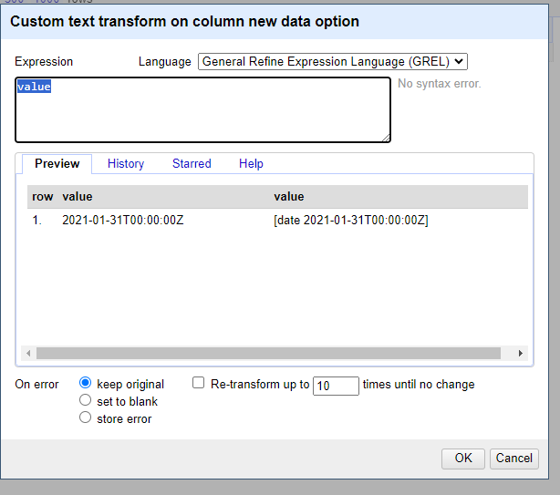
01/31/2021 17:00 GMT
Chooseedit cells, –>common transforms–>toDateChooseadd column based on this columnvalue.toDate('yyyy/mm/dd').toString('yyyy-MM-dd')If you have multiple date formats in one column.
value.toDate('MM/yy','MMM-yy').toString('yyyy-MM')“If parsing a date with text components in a language other than your system language you can specify a language code as the format1 argument. For example, a French language date such as “10 janvier 2023”.
value.toDate('fr','dd MMM yyyy')Another option is to split your date columns in 3 separate columns using the split function. After splitting join the columns in a data format code:
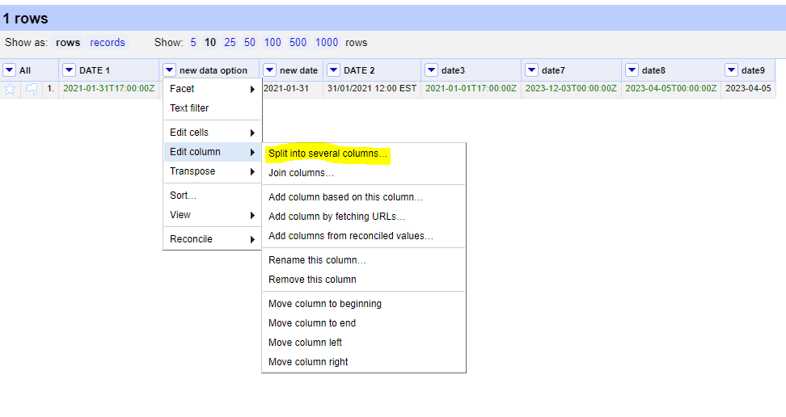
cells["year"].value + "-" +cells["month"].value + "-" + cells["day"].value
Examples in Python
When dealing with dates using pandas in Python it is best to create a Series as your time column with the appropriate datatype. Then, when writing your file(s) using .to_csv() you can specify the format which your date will be written in using the
date_formatparameter.The examples below show how to use the pandas.to_datetime() function to read various date formats. The process can be applied to entire columns (or Series) within a DataFrame.
01/31/2021 17:00 GMTThis date follows a typical date construct of
month/day/year24-hour:minutetime-zone. The pandas.to_datetime()function will correctly interpret these dates without theformatparameter.import pandas as pd df = pd.DataFrame({'date':['01/31/2021 17:00 GMT']}) df['eventDate'] = pd.to_datetime(df['date'], format="%m/%d/%Y %H:%M %Z") dfdate eventDate 01/31/2021 17:00 GMT 2021-01-31 17:00:00+00:00
31/01/2021 12:00 ESTThis date is similar to the first date but switches the
monthanddayand identifies a differenttime-zone. The construct looks likeday/month/year24-hour:minutetime-zoneimport pandas as pd df = pd.DataFrame({'date':['31/01/2021 12:00 EST']}) df['eventDate'] = pd.to_datetime(df['date'], format="%d/%m/%Y %H:%M %Z") dfdate eventDate 31/01/2021 12:00 EST 2021-01-31 12:00:00-05:00
January, 01 2021 5:00 PM GMTimport pandas as pd df = pd.DataFrame({'date':['January, 01 2021 5:00 PM GMT']}) df['eventDate'] = pd.to_datetime(df['date'],format='%B, %d %Y %I:%M %p %Z') dfdate eventDate January, 01 2021 5:00 PM GMT 2021-01-01 17:00:00+00:00
1612112400in seconds since 1970This uses the units of
seconds since 1970which is common when working with data in netCDF.import pandas as pd df = pd.DataFrame({'date':['1612112400']}) df['eventDate'] = pd.to_datetime(df['date'], unit='s', origin='unix') dfdate eventDate 1612112400 2021-01-31 17:00:00
44227.708333333333This is the numerical value for dates in Excel because Excel stores dates as sequential serial numbers so that they can be used in calculations. In some cases, when you export an Excel spreadsheet to CSV, the dates are preserved as a floating point number.
import pandas as pd df = pd.DataFrame({'date':['44227.708333333333']}) df['eventDate'] = pd.to_datetime(df['date'].astype(float), unit='D', origin='1899-12-30') dfdate eventDate 44227.708333333333 2021-01-31 17:00:00.000000256Observations with a start date of
2021-01-30and an end date of2021-01-31.Here we store the date as a duration following the ISO 8601 convention. In some cases, it is easier to use a regular expression or simply paste strings together:
import pandas as pd df = pd.DataFrame({'start_date':['2021-01-30'], 'end_date':['2021-01-31']}) df['eventDate'] = df['start_time']+'/'+df['end_time'] dfstart_time end_time eventDate 2021-01-30 2021-01-31 2021-01-30/2021-01-31
Examples in R
When dealing with dates using R, there are a few base functions that are useful to wrangle your dates in the correct format. An R package that is useful is lubridate, which is part of the
tidyverse. It is recommended to bookmark this lubridate cheatsheet.The examples below show how to use the
lubridatepackage and format your data to the ISO-8601 standard.
01/31/2021 17:00 GMTlibrary(lubridate) date_str <- '01/31/2021 17:00 GMT' lubridate::mdy_hm(date_str,tz="UTC") date <- lubridate::format_ISO8601(date) # Separates date and time with a T. date <- paste0(date, "Z") # Add a Z because time is in UTC.[1] "2021-01-31T17:00:00Z"
31/01/2021 12:00 ESTlibrary(lubridate) date_str <- '31/01/2021 12:00 EST' date <- lubridate::dmy_hm(date_str,tz="EST") lubridate::with_tz(date,tz="UTC") date <- lubridate::format_ISO8601(date) date <- paste0(date, "Z")[1] "2021-01-31T17:00:00Z"
January, 01 2021 5:00 PM GMTlibrary(lubridate) date_str <- 'January, 01 2021 5:00 PM GMT' date <- lubridate::mdy_hm(date_str, format = '%B, %d %Y %H:%M', tz="GMT") lubridate::with_tz(date,tz="UTC") lubridate::format_ISO8601(date) date <- paste0(date, "Z")[1] "2021-01-01T17:00:00Z"
1612112400in seconds since 1970This uses the units of
seconds since 1970which is common when working with data in netCDF.library(lubridate) date_str <- '1612112400' date_str <- as.numeric(date_str) date <- lubridate::as_datetime(date_str, origin = lubridate::origin, tz = "UTC") date <- lubridate::format_ISO8601(date) date <- paste0(date, "Z") print(date)[1] "2021-01-31T17:00:00Z"
44227.708333333333This is the numerical value for dates in Excel because Excel stores dates as sequential serial numbers so that they can be used in calculations. In some cases, when you export an Excel spreadsheet to CSV, the dates are preserved as a floating point number.
library(openxlsx) library(lubridate) date_str <- 44227.708333333333 date <- as.Date(date_str, origin = "1899-12-30") # If you're only interested in the YYYY-MM-DD fulldate <- openxlsx::convertToDateTime(date_str, tz = "UTC") fulldate <- lubridate::format_ISO8601(fulldate) fulldate <- paste0(fulldate, "Z") print(date) print(fulldate)[1] "2021-01-31" [1] "2021-01-31T17:00:00Z"Observations with a start date of
2021-01-30and an end date of2021-01-31. For added complexity, consider adding in a 4-digit deployment and retrieval time.Here we store the date as a duration following the ISO 8601 convention. In some cases, it is easier to use a regular expression or simply paste strings together:
library(lubridate) event_start <- '2021-01-30' event_finish <- '2021-01-31' deployment_time <- 1002 retrieval_time <- 1102 Time is recorded numerically (1037 instead of 10:37), so need to change these columns: deployment_time <- substr(as.POSIXct(sprintf("%04.0f", deployment_time), format = "%H%M"), 12, 16) retrieval_time <- substr(as.POSIXct(sprintf("%04.0f", retrieval_time, format = "%H%M"), 12, 16) # If you're interested in just pasting the event dates together: eventDate <- paste(event_start, event_finish, sep = "/") # If you're interested in including the deployment and retrieval times in the eventDate: eventDateTime_start <- lubridate::format_ISO8601(as.POSIXct(paste(event_start, deployment_time), tz = "UTC")) eventDateTime_start <- paste0(eventDateTime_start, "Z") eventDateTime_finish <- lubridate::format_ISO8601(as.POSIXct(paste(event_finish, retrieval_time), tz = "UTC")) eventDateTime_finish <- paste0(eventdateTime_finish, "Z") eventDateTime <- paste(eventDateTime_start, eventDateTime_finish, sep = "/") print(eventDate) print(eventDateTime)[1] "2021-01-30/2021-01-31" [1] "2021-01-30T10:02:00Z/2021-01-31T11:02:00Z"
Tip
When all else fails, treat the dates as strings and use substitutions/regular expressions to manipulate the strings into ISO 8601.
Matching your scientific names to a taxonomic backbone
Introduction
Working with different partners/institutes/researchers results in a diversity of taxonomic names to define species. This hardens comparison amongst datasets, as in many occasions, aggrgeation is aimed for or filtering on specific species. By translating all species names to a common taxonomic backbone (ensuring unique ID’s for each species name), this can be done.
| Darwin Core Term | Description | Example |
|---|---|---|
| scientificNameID | An identifier for the nomenclatural (not taxonomic) details of a scientific name. | urn:lsid:ipni.org:names:37829-1:1.3 |
| kingdom | The full scientific name of the kingdom in which the taxon is classified. | Animalia, Archaea, Bacteria, Chromista, Fungi, Plantae, Protozoa, Viruses |
| taxonRank | The taxonomic rank of the most specific name in the scientificName. | subspecies, varietas, forma, species, genus |
Using the commandline using Python
This small utility provides the functionality to add the species information from the GBIF backbone to any data table (CSV-style or a > Pandas dataframe) by requesting this information via the GBIF API. For each match, the corresponding accepted name is looked for. Nevertheless there will always be errors and control is still essential, the acceptedkeys provide the ability to compare species names from different data sources. The functionality can be loaded within Python itself by importing the function
extract_species_informationor by running the script from the command line. We will show you on how to use the command line
Create a folder which will be used for name matching.
Place your CSV (comma separated value) file with the scientific names of the species of interest in that folder. Here we are showing some of the contents of the file
species.csv.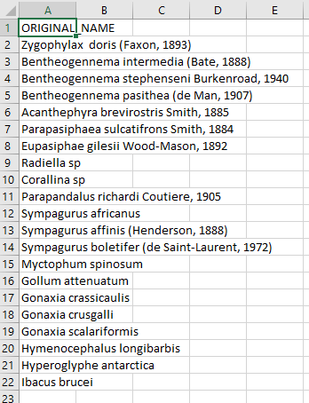
Place this Python file gbif_species_name_match.py in your name matching folder
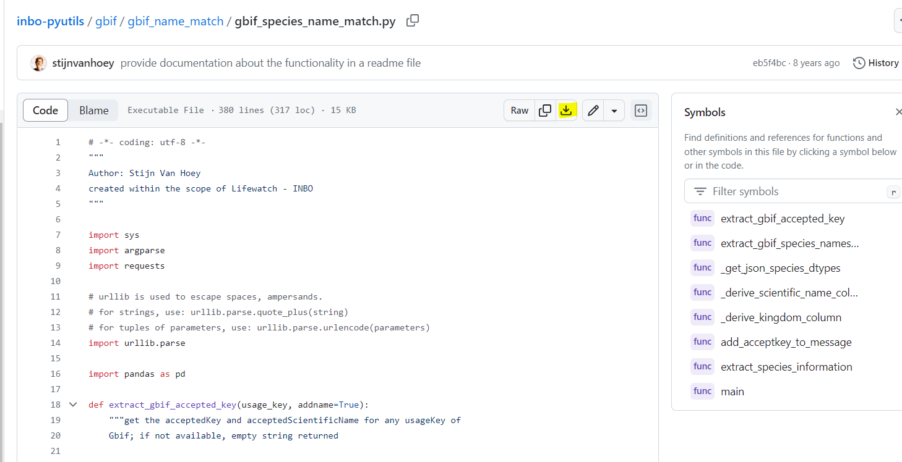
Navigate in the Python terminal to the correct folder.
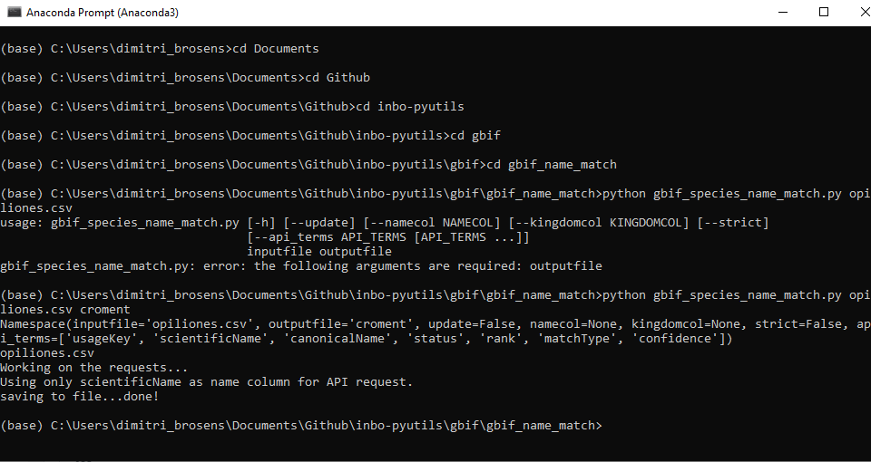
Run the command > python gbif_species_name_match.py yourfilename_input.csv yourfilename_output
Using the Global Names Verifier
Verify a list of scientific names against biodiversity data-sources. This service parses incoming names, executes exact or fuzzy matching as required, and returns the best-scored result. Optionally, it can also return matches from data-sources selected by a user.
Create a CSV (comma separated value) file with the scientific name of the species of interest. Here we are showing some of the contents of the file
species.csv.Copy your scientific names to the Global Names Verifier
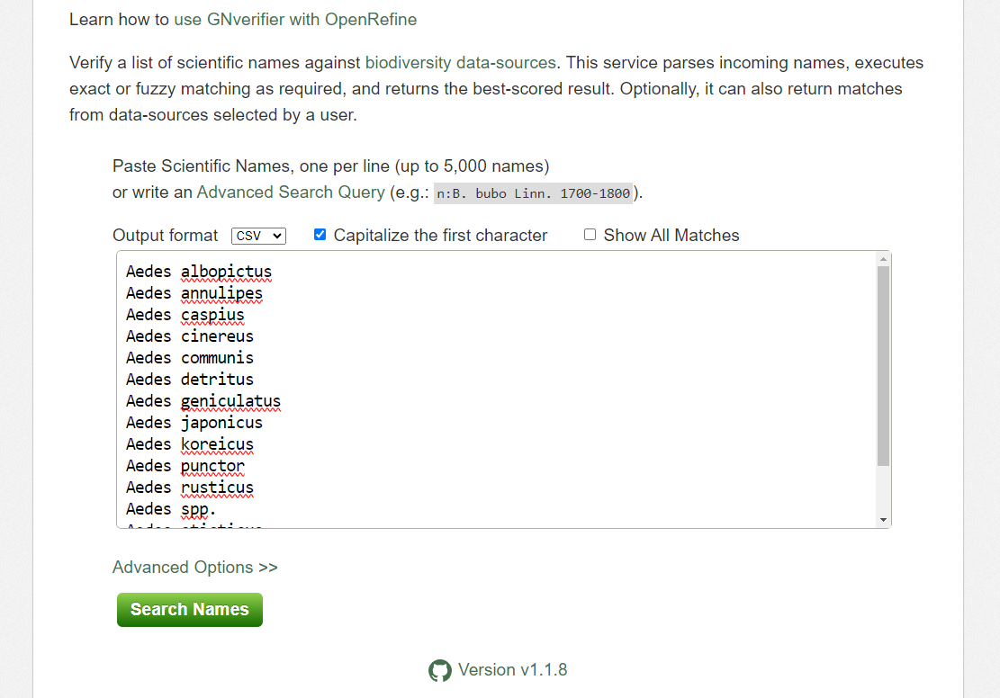
Click on Search Names. Don’t forget to choose your output format (here choose .csv)
Hopefully, your names will be matched
- In some cases you will have ambiguous matches.
- Capy you response and use it building your Darwin Core file
Getting lat/lon to decimal degrees
Latitude (decimalLatitude) and longitude (decimalLongitude) are the geographic coordinates (in decimal degrees north and east, respectively), using the spatial reference system given in geodeticDatum of the geographic center of a location.
decimalLatitude, positive values are north of the Equator, negative values are south of it. All values lie between -90 and 90, inclusive.decimalLongitude, positive values are east of the Greenwich Meridian, negative values are west of it. All values lie between -180 and 180, inclusive.
Note, that the requirement for decimalLatitude and decimallLongitude is they must be in decimal degrees in WGS84. Since this is the requirement for Darwin Core, OBIS and GBIF will assume data shared using those Darwin Core terms are in the geodetic datum WGS84. We highly recommend checking the coordinate reference system (CRS) of your observations to confirm they are using the same datum and documenting it in the geodeticDatum Darwin Core term. If your coordinates are not using WGS84, they will need to be converted in order to share the data to OBIS and GBIF since decimalLatitude and decimalLongitude are required terms.
Helpful packages for managing CRS and geodetic datum:
Tip
If at all possible, it’s best to extract out the components of the information you have in order to compile the appropriate field. For example, if you have the coordinates as one lone string
17° 51' 57.96" S 149° 39' 13.32" W, try to split it out into its component pieces:17,51,57.96,S,149,39,13.32, andWjust be sure to track which values are latitude and which are longitude.
| Darwin Core Term | Description | Example |
|---|---|---|
| decimalLatitude | The geographic latitude (in decimal degrees, using the spatial reference system given in geodeticDatum) of the geographic center of a Location. Positive values are north of the Equator, negative values are south of it. Legal values lie between -90 and 90, inclusive. | -41.0983423 |
| decimalLongitude | The geographic longitude (in decimal degrees, using the spatial reference system given in geodeticDatum) of the geographic center of a Location. Positive values are east of the Greenwich Meridian, negative values are west of it. Legal values lie between -180 and 180, inclusive. | -121.1761111 |
| geodeticDatum | The ellipsoid, geodetic datum, or spatial reference system (SRS) upon which the geographic coordinates given in decimalLatitude and decimalLongitude as based. | WGS84 |
 Image credit: xkcd
Image credit: xkcd
Examples in Python
17° 51' 57.96" S149° 39' 13.32" W
- This example assumes you have already split the two strings into discrete components (as shown in the table). An example converting the full strings
17° 51' 57.96" S149° 39' 13.32" Wto decimal degrees can be found here.
lat_degrees lat_minutes lat_seconds lat_hemisphere lon_degrees lon_minutes lon_seconds lon_hemisphere 17 51 57.96 S 149 39 13.32 W df = pd.DataFrame({'lat_degrees':[17], 'lat_minutes':[51], 'lat_seconds':[57.96], 'lat_hemisphere':['S'], 'lon_degrees': [149], 'lon_minutes': [39], 'lon_seconds':[13.32], 'lon_hemisphere': ['W'], }) df['decimalLatitude'] = df['lat_degrees'] + ( (df['lat_minutes'] + (df['lat_seconds']/60) )/60) df['decimalLongitude'] = df['lon_degrees'] + ( (df['lon_minutes'] + (df['lon_seconds']/60) )/60) # Convert hemisphere S and W to negative values as units should be `degrees North` and `degrees East` df.loc[df['lat_hemisphere']=='S','decimalLatitude'] = df.loc[df['lat_hemisphere']=='S','decimalLatitude']*-1 df.loc[df['lon_hemisphere']=='W','decimalLongitude'] = df.loc[df['lon_hemisphere']=='W','decimalLongitude']*-1 df[['decimalLatitude','decimalLongitude']]decimalLatitude decimalLongitude -17.8661 -149.653733° 22.967' N117° 35.321' W
- Similar to above, this example assumes you have already split the two strings into discrete components (as shown in the table).
lat_degrees lat_dec_minutes lat_hemisphere lon_degrees lon_dec_minutes lon_hemisphere 33 22.967 N 117 35.321 W df = pd.DataFrame({'lat_degrees':[33], 'lat_dec_minutes':[22.967], 'lat_hemisphere':['N'], 'lon_degrees': [117], 'lon_dec_minutes': [35.321], 'lon_hemisphere': ['W'], }) df['decimalLatitude'] = df['lat_degrees'] + (df['lat_dec_minutes']/60) df['decimalLongitude'] = df['lon_degrees'] + (df['lon_dec_minutes']/60) # Convert hemisphere S and W to negative values as units should be `degrees North` and `degrees East` df.loc[df['lat_hemisphere']=='S','decimalLatitude'] = df.loc[df['lat_hemisphere']=='S','decimalLatitude']*-1 df.loc[df['lon_hemisphere']=='W','decimalLongitude'] = df.loc[df['lon_hemisphere']=='W','decimalLongitude']*-1 df[['decimalLatitude','decimalLongitude']]decimalLatitude decimalLongitude 0 33.382783 -117.588683
Examples in R
17° 51' 57.96" S149° 39' 13.32" W
lat_degrees lat_minutes lat_seconds lat_hemisphere lon_degrees lon_minutes lon_seconds lon_hemisphere 17 51 57.96 S 149 39 13.32 W library(tibble) tbl <- tibble(lat_degrees = 17, lat_minutes = 51, lat_seconds = 57.96, lat_hemisphere = "S", lon_degrees = 149, lon_minutes = 39, lon_seconds = 13.32, lon_hemisphere = "W") tbl$decimalLatitude <- tbl$lat_degrees + ( (tbl$lat_minutes + (tbl$lat_seconds/60)) / 60 ) tbl$decimalLongitude <- tbl$lon_degrees + ( (tbl$lon_minutes + (tbl$lon_seconds/60)) / 60 ) tbl$decimalLatitude = as.numeric(as.character(tbl$decimalLatitude))*(-1) tbl$decimalLongitude = as.numeric(as.character(tbl$decimalLongitude))*(-1)> tbl$decimalLatitude [1] -17.8661 > tbl$decimalLongitude [1] -149.6537
33° 22.967' N117° 35.321' W
lat_degrees lat_dec_minutes lat_hemisphere lon_degrees lon_dec_minutes lon_hemisphere 33 22.967 N 117 35.321 W library(tibble) tbl <- tibble(lat_degrees = 33, lat_dec_minutes = 22.967, lat_hemisphere = "N", lon_degrees = 117, lon_dec_minutes = 35.321, lon_hemisphere = "W") tbl$decimalLatitude <- tbl$lat_degrees + ( tbl$lat_dec_minutes/60 ) tbl$decimalLongitude <- tbl$lon_degrees + ( tbl$lon_dec_minutes/60 ) tbl$decimalLongitude = as.numeric(as.character(tbl$decimalLongitude))*(-1)> tbl$decimalLatitude [1] 33.38278 > tbl$decimalLongitude [1] -117.5887
33° 22.967' N117° 35.321' W
- Using the measurements package the
conv_unit()can work with space separated strings for coordinates.
lat lat_hemisphere lon lon_hemisphere 33 22.967 N 117 35.321 W tbl <- tibble(lat = "33 22.967", lat_hemisphere = "N", lon = "117 35.321", lon_hemisphere = "W") tbl$decimalLongitude = measurements::conv_unit(tbl$lon, from = 'deg_dec_min', to = 'dec_deg') tbl$decimalLongitude = as.numeric(as.character(tbl$decimalLongitude))*(-1) tbl$decimalLatitude = measurements::conv_unit(tbl$lat, from = 'deg_dec_min', to = 'dec_deg')> tbl$decimalLatitude [1] 33.38278 > tbl$decimalLongitude [1] -117.5887
You can find some more tutorials on data transformation and publication on the INBO tutorial page: https://inbo.github.io/tutorials/
Key Points
When doing conversions it’s best to break out your data into it’s component pieces.
Dates are messy to deal with. Some packages have easy solutions, otherwise use regular expressions to align date strings to ISO 8601.
Latitude and longitudes are like dates, they can be messy to deal with. Take a similar approach.
Wrangling & visualizing data, spatial analyses
Overview
Teaching: 30 min
Exercises: 0 minQuestions
What is the GBIF community forum
What is the GBIF helpdesk
What is the Technical support hour for GBIF nodes
Objectives
Learn more on how the GBIF community is ready to help
Wrangling & visualizing data, spatial analyses
By Lena Thöle

Presentation: The GBIF community forum

Excercise : Browse the Community forum
- Create an account on the community forum
- Check this post and check this out on gbif(www.gbif.org) extra_info
- Browse the forum a bit
SOLUTION
- That was easy
Presentation: The GBIF Helpdesk

GBIF portal ‘Feedback system’

Instructions
- Create an account on Github
- Instead of sending bugs or ideas to helpdesk@gbif.org you can also use Github issues
- On the right upper corner of the GBIF portal clik here:
You can choose different options
content
Bug
Idea
HelpdeskSOLUTION
- That was easy

Key Points
You are not alone in this world
Lunch Break
Overview
Teaching: min
Exercises: minQuestions
Objectives
Key Points
Darwin Core+Extensions archive
Overview
Teaching: 20 min
Exercises: 60 minQuestions
What is a core and what are the extensions in Darwin Core?
How to organize my data and metadata?
How to create Darwin Core Archive
Objectives
Creating IDs and using them
Creating core and extensions files.
Darwin Core Extensions
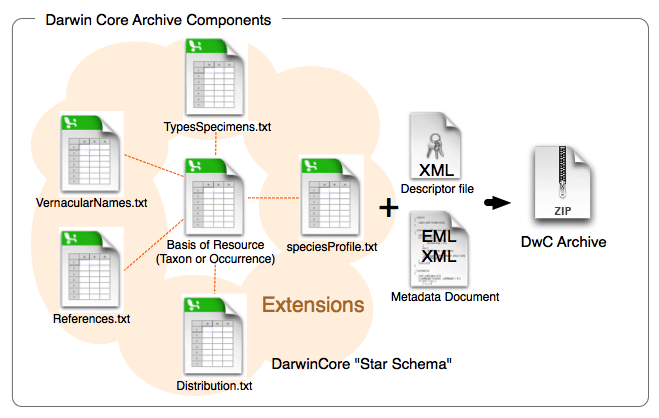
Now that we have a firm basis for understanding the different terms in Darwin Core the next part to understand is how data tables are organized and the difference between cores and extensions. You will always have a core table (Occurrence core or Event core) with either no extensions or several. What you choose depends on the data you have and how to represent it best. The original Darwin Core core is the Occurrence core. Once people started using that core they began to see that they needed extensions to that core to best represent the data they were trying to share and therefore several extensions have been developed (and are continuing to be developed). As more monitoring data has been shared over time, another core type called Event core was added. Without getting too far into the weeds on the cores and extensions, what’s most important to understand is that you need to pick your core type and once you do that then you pick the extensions to go with it. For example, if your data took place as part of an event (cruise, transects, etc) you will pick Event core. If there was no sampling event, then you will pick Occurrence core.
Different options for sharing the data
Occurrence Core only
The bare minimum for sharing data to OBIS is to use the Occurrence Core with no extensions. This core type covers datasets that only include observations and/or specimen records where no information on sampling is available. Occurrence core is also used for eDNA or DNA derived data.
The Occurrence core allows you to provide all the required Darwin Core terms detailed in the intro section. You can produce a fully compliant Darwin Core version of your data using only the Occurrence core (see this example by Tylar Murray). On the one hand, if the data were collected using some kind of sampling methodology, you will lose much of that information if you use this most simple form of the data. One the other, it is faster and easier to produce.
Thought Experiment
Look at the minimum required fields example. What is possible to do in future reuse? What would not be possible? For instance, note that there is no information about depth or the uncertainty of the coordinates. For more examples check out the Datasets folder in the IOOS Bio Data Guide.
Occurrence Core + extensions
Using the Occurrence core plus relevant extensions means that you can capture more of the data that’s been recorded. As an example, let’s consider an environmental DNA dataset. eDNA datasets have information that is unique to that method and will not be represented well using Occurrence core only. To document eDNA using Darwin Core you should follow this guide; you will need the Occurrence core plus the DNA derived data extension. Adding the DNA derived data extension allows you to capture information such as the PCR primer used, DNA sequences, standard operating procedure used in the assembly and other information specific to this type of data.
Let’s consider another example: a museum dataset that has biological measurements for each individual specimen (e.g. length). All information about each organism’s occurrence (taxonomic information, locality, identification, etc.) will go into the Occurrence core. You can then capture the biotic measurement information (type of measurement, units, accuracy, etc.) by using either the Measurement or Facts extension, or the Extended Measurement or Fact extension (we elaborate on this extension below). Note again here we do not have information on how the organisms were sampled.
Checklist Core + extensions
Suitable for publication of Taxonomic data, still in use but ColDP standard is about to replace that.
Event Core + extensions
As we have indicated earlier, the Event core is for datasets that include known sampling events - details are known about how, when, and where samples were taken.
An innovation that OBIS made in this space was introducing the Extended Measurement or Fact extension (also sometimes referred to as OBIS-ENV-DATA, or eMoF). This uses the Event core with an Occurrence extension + the extended Measurement or Fact extension. The eMoF extension makes it possible to include measurements for both the events (salinity, temperature, dissolved oxygen, gear type, etc.) as well as measurements about the occurrences (weight, length, etc.). Prior to this you were only able to include measurements of the occurrence (in the Measurement or Facts extension).
When these types of measurement data were collected, they may have each had their own column in your dataset. However, the Extended Measurement of Fact extension does not format data in this way. Rather than documenting each of your measurements in separate columns, measurements will be condensed into one column: measurementValue (e.g. 15). Then, to tell us what that value is, there is the column measurementType which describes what the measurement actually is (e.g. length). Finally the column measurementUnit is used to indicate the unit of the measurement (e.g. cm).
Now, you may wonder - what do you write in the “measurementType” field? For some measurements, it may be simple. For others, maybe not as simple. The good news is this field is unconstrained - you can populate it with free text as you like. But what if you were interested in getting all records that have “length” measurements from OBIS? Due to the inevitable heterogeneity in how different people would document “length”, you would have to try to account for all these different ways!
The key thing about the extended Measurement or Fact extension that gets around this challenge, is that it provides a way to include Unique Resource Identifiers (URIs). These URIs are used to populate the measurementTypeID field (as well as measurementUnitID and measurementValueID). URIs mean that if you call the measurementType “abundance” but I call it “Abundance per square meter” and we both use the measurementTypeID “http://vocab.nerc.ac.uk/collection/P01/current/SDBIOL02/” then we know this is the same measurement type even if we didn’t use the same free text words to describe it. Choosing the right URI can be difficult but you can read about finding codes here. All you need to know for now is that you should try to find a measurementTypeID URI that belongs to the P01 collection. OBIS is developing guidelines to help you with the process of choosing URIs, so stay tuned to their manual for updates.
Tip
Consider to check the Datasets classes pages and the Data Quality requirements for each of them.
What’s in an ID?
| Darwin Core Term | Description | Example |
|---|---|---|
| eventID | An identifier for the set of information associated with an Event (something that occurs at a place and time). May be a global unique identifier or an identifier specific to the data set. | INBO:VIS:Ev:00009375Station_95_Date_09JAN1997:14:35:00.000 FFS-216:2007-09-21:A:replicateID1024 |
| occurrenceID | An identifier for the Occurrence (as opposed to a particular digital record of the occurrence). In the absence of a persistent global unique identifier, construct one from a combination of identifiers in the record that will most closely make the occurrenceID globally unique. | urn:catalog:UWBM:Bird:89776 Station_95_Date_09JAN1997:14:35:00.000_Atractosteus_spatula FFS-216:2007-09-21:A:replicateID1024:objectID1345330 |
| measurementID | An identifier for the MeasurementOrFact (information pertaining to measurements, facts, characteristics, or assertions). May be a global unique identifier or an identifier specific to the data set. | 9c752d22-b09a-11e8-96f8-529269fb1459 |
IDs are the keys in your data that are used to link tables together. For example, an occurenceID in the Extended Measurement or Fact table records information about an organism with the same occurrenceID within the Occurrence core table. IDs are also the keys that keep track of each of the records, so that if you notice a mistake or missing information you can keep the record in place in the global aggregators and fix the mistake or add the missing information. For instance, let’s say you have a record with an occurrenceID Station_95_Date_09JAN1997:14:35:00.000_Atractosteus_spatula and after it’s published to OBIS you notice that the latitude was recorded incorrectly. When you fix that record in the data you would keep the occurrenceID Station_95_Date_09JAN1997:14:35:00.000_Atractosteus_spatula, fix the latitude, and republish the data so that the record is still present in OBIS but you have fixed the mistake.
With that in mind what is the best way to create an eventID, occurrenceID, or measurementID? Until we have a system that mints Persistent Identififers for individual records then the best way we have seen is to build the ID from information in the data itself. That way if you need to update or fix a record you simply use the same information again to build the same ID for the same record. Take our example above Station_95_Date_09JAN1997:14:35:00.000_Atractosteus_spatula. This is a concatenation of information from the original source data of the Station number + Verbatim Date + Scientific name. Because this is unique for each row in the occurrence file and we have kept the original data in its original format we can always rebuild this ID by concatenating this same information together again.
It is very important that these IDs do not change over time. So if an ID for a museum specimen is built from e.g. the institution the specimen is being held at, but then the specimen changes institutions - its ID should not change to reflect the move. If the ID changes then the record will be duplicated in the global database and record information could be lost over time.
Exercise Time!
Now, let’s try a practical use case where a birds watchers group send you their data. see explanations
1. Initial checks
- yes
- yes
- not everything cristal clear
- Metadata is not complete
- Event Core
- Occurrence and MeasurementOrFact
- Yes
- Maybe geodeticDatum, coordinatesUncertainty…
- Yes into event, occurrence and measurement
- Occurrence identifiers are missing
2. Data cleaning
- ScientificNames shall appear on each row
- Colors, if meaningful, shall be added as column
- Missing data should be null
- OccurrenceIDs are missing, we suggest to use spreadsheet rowID
- Incorrect eventIDs shall be removed or corrected
3. DarwinCore mapping
- Original data shall be organized in event, occurrence and measurements
- Metadata should be more elaborated : Taxonomic, geographic, time scope…
- License/waiver should be selected
- Fields name should correspond to DarwinCore terms
Key Points
Darwin Core star schema with core and extensions to model the multitude of biological observation data.
Identifiers fields are important keys in your data and we recommend building them from the information in your data.
Minimum Data fields Requirements for each class.
Linking Core entities with the extensions.
Break
Overview
Teaching: min
Exercises: minQuestions
Objectives
 Image credit: xkcd
Image credit: xkcd
Key Points
Hands-on: Data visualization & Analysis
Overview
Teaching: 0 min
Exercises: 90 minQuestions
How to visualize data
Objectives
Showing data visualisations

Integrated Publishing Toolkit
The Integrated Publishing Toolkit (IPT) is an open-source web application developed and maintained by the Global Biodiversity Information Facility (GBIF) for publishing biodiversity data. The IPT makes it easy to share four types of biodiversity-related information:
- primary taxon occurrence data
- sampling event data
- general metadata about data sources
- taxon checklists
GBIF maintains a very detailed IPT manual The Croatian IPT is available here.
The requirements for publishing data through your node IPT are that:
- you have contacted the node to ensure the data are a good fit
- the data follows Darwin Core (DwC) and Ecological Metadata Language (EML)
- includes the required Darwin Core and EML metadata elements
Presentation

Ecological Metadata Language (EML)
Both OBIS and GBIF use Ecological Metadata Language (EML) as the metadata standard associated with the data. For the purposes of this workshop we will not dive into the world of EML. However, we should note that when publishing your data through the IPT, the IPT helps you create an EML file as part of the Darwin Core Archive (DwC-A). As such, if you publish your own data through the IPT, there is no need for innate knowledge on the EML format. But there are a minimum required number of fields that would need to be filled out in the IPT: title, abstract, citation, and several contacts.
More information on EML can be found at the EML standard page, and in the bio data guide. There are also a number of R packages for working with EML, reviewed here.
Tip
Try to collect as much of this information as possible before and during the Darwin Core alignment process. It will significantly reduce the amount of time it takes to load the data into the IPT.
Required EML metadata fields for sharing to GBIF
Best practices for these fields are explained in detail in the GBIF IPT user manual_Resource metadata Simply use the IPT’s built-in metadata editor to populate the metadata.
| IPT/EML Fields | Definition | Comment |
|---|---|---|
title |
A good descriptive title is indispensable and can provide the user with valuable information, making the discovery of data easier. | The IPT also requires you to provide a Shortname. Shortnames serve as an identifier for the resource within the IPT installation and should be unique, descriptive and short (max. 100 characters). Spell out acronyms in Title but they are ok to use in the shortname. |
description |
The abstract or description of a dataset provides basic information on the content of the dataset. The information in the abstract should improve understanding and interpretation of the data. | |
license |
The licence that you apply to the resource. The license provides a standardized way to define appropriate uses of your work. | Must use CC-0, CC-BY, or CC-BY-NC. Description of the licenses can be found here. |
resource Contact(s) |
The list of people and organizations that should be contacted to get more information about the resource, that curate the resource or to whom putative problems with the resource or its data should be addressed. | Last name, Postition, and Organization are required, helpful to include an ORCID and a contact method like email or phone number. |
resource Creator(s) |
The people and organizations who created the resource, in priority order. The list will be used to auto-generate the resource citation (if auto-generation is turned on). | |
metadata Provider(s) |
The people and organizations responsible for producing the resource metadata. | |
publishing organisation |
The organization who publishes the data i.e. the data publisher |
Other EML fields to consider
| IPT/EML Fields | Definition | Comment |
|---|---|---|
Bounding Box |
Farthest North, South, East, and West coordinate. | |
Geographic Description |
A textual description of the geographic coverage. | |
Temporal Coverage |
This can either be a Single Date, Date Range, Formation Period, or Living Time Period. | |
Study Extent |
This field represents both a specific sampling area and the sampling frequency (temporal boundaries, frequency of occurrence) of the project. | |
Sampling Description |
This field allows for a text-based/human readable description of the sampling procedures used in the research project. | The content of this element would be similar to a description of sampling procedures found in the methods section of a journal article. |
Step Description |
This field allows for repeated sets of elements that document a series of methods and procedures used in the study, and the processing steps leading to the production of the data files. These include e.g. text descriptions of the procedures, relevant literature, software, instrumentation and any quality control measurements taken. | Each method should be described in enough detail to allow other researchers to interpret and repeat the study, if required. |
citation |
To ensure your dataset gets cited the way you want |
Exercises 1: Create an ‘imaginary’ dataset in the Croatian IPT
- Go to the Croatian ‘test’ IPT instance on ipt.bioportal.hr
- Login to the ‘IPT’ instance, you can login with your emailaddress and
WelcomCroMent- Click on
manage resources- Click on
Create Newand choose your the type of your dataset (here chooseoccurrence)- Give a shortname for your resource,
the shortname serves as an identifier for the resource and will be used as a parameter in the url- Click on
CreateSolution
- You have created your first resource on the IPT


Exercises 2: Create ‘imaginary’ metadata for your dataset
- Go to the Croatian ‘test’ IPT instance
- Login
- Click on
Manage resources- Click on your ‘imaginary’ dataset
- Click on
editin theMetadatasection- Complete the Metadata wizzard, starting with providing a tittle for your dataset
Solution
- Congratulations, you did add metadata in your dataset


Exercises 3: Link and map your ‘imaginary’ dataset in the Croatian IPT
- Go to the Croatian ‘test’ IPT instance
- Login
- Click on
Manage resources- Click on your ‘imaginary’ dataset
- Click on
addin theSource datasection- Choose your source data:
- A File (Choose
occurrencememo.csvif you don’t have an ‘imaginary’ dataset- An url
- An SQL statement
- Click on
addin theDarwin Core Mappingssection- CLick again on
add, make sure Darwin Core Occurrence is selected- Select the source ‘occurrencememo
and clicksave`- Your data is automapped to Darwin Core, you can click on
saveSolution
- Congratulations, you or you nodemanager can publish this dataset after validation


Datapapers

Tip
- In some cases you’ll want to ensure the values are representative of the entity you are reporting.
- For example,
individualCountshould be an integer. So, checking that column for integer values would be good.
Key Points
Data Visualisation is beautifull
Data Validation & GBIF Validator
Overview
Teaching: 0 min
Exercises: 30 minQuestions
How to quality check my data before publication?
Objectives
Showing GBIF data validator
Data enhancement and quality control
Data validation with GBIF data validation tool
Recommended initial checks on your data
- Check that all the required Darwin Core terms are present and contain the correct information.
- Make a map from your data to ensure the coordinates are valid and within your expected range.
- Look at unique values of columns containing string entries to identify potential issues (eg. spelling).
- Check for uniqueness of
occurrenceIDfield. dwc:occurrenceID- Check for uniqueness of
eventIDfor each event, if applicable. dwc:eventID- Check that dates are following ISO-8601. dwc:eventDate
GBIF data validator
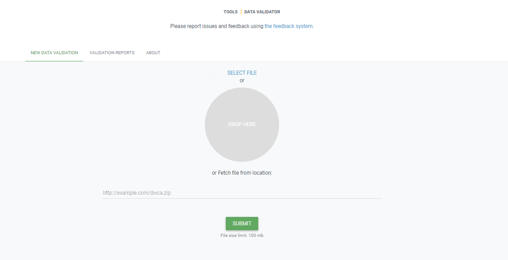
One method for data validation is fairly simple. The GBIF data validator
What is the GBIF data validator?
The GBIF data validator is a service that allows anyone with a GBIF-relevant dataset to receive a report on the syntactical correctness and the validity of the content contained within the dataset. By submitting a dataset to the validator, you can go through the validation and interpretation procedures usually associated with publishing in GBIF and quickly determine potential issues in data - without having to publish it.
How does it work?
You start by uploading the dataset file to the validator, either by 1) clicking SELECT FILE and selecting it on your local computer or 2) dragging the file from a local folder and dropping it on the Drop here icon. You can also enter the URL of a dataset file accessible from the internet. This is particularly useful for larger datasets. Once you hit the Submit button, the validator starts processing your dataset file. You will be taken straight to a page showing the status of the validation.
Depending on the size of your dataset, processing might take a while. You don’t have to keep the browser window open, as a unique job ID is issued every time a new validation process is started. If your dataset is taking too long to process, just save the ID (bookmark the URL) and use it to return at a later time to view the report. We’ll keep the report for a month, during which you can come back whenever you like.
Which file types are accepted?
ZIP-compressed Darwin Core Archives (DwC-A) (containing cores Occurrence, Taxon, or Event). Integrated Publishing Toolkit (IPT) Excel templates containing Checklist, Occurrence, or Sampling-event data Simple CSV files containing Darwin Core terms in the first row
What information will I get from the validation report?
Once processing is done, you will be able to see the validation report containing the following information:
- a summary of the dataset type and a simple indicator of whether it can be indexed by GBIF or not
- a summary of issues found during the GBIF interpretation of the dataset
- detailed break-down of issues found in metadata, dataset core, and extensions (if any), respectively
- number of records successfully interpreted
- frequency of terms used in dataset
You will also be able to view the metadata as a draft version of the dataset page as it would appear when the dataset is published and registered with GBIF.
I’ve got the validation report - now what? If the validator finds that your dataset cannot be indexed by GBIF, you should address the issues raised by the validation report before you consider publishing it to GBIF. On the other hand, if you get the green light and your dataset is indexable by GBIF, you should still carefully review any issues that may be the result of e.g. conversion errors, etc. which could affect the quality of the data. If you find and correct any error - from a single typo to large systematic problems - feel free to resubmit your dataset as many times you like.
Technical details As with all GBIF tools and software, the data validator is an open source project. For more information, source code and documentation is available in a GitHub repository.
Exercises 1: Check a Dwc-a (Darwin Core Archive) in the GBIF validator
The GBIF validator is simple and easy to use.
- Go to the GBIF validator website
- Drop your DwC-a file (you can find an example file here dwc-a sample file or maybe use the dwc-a you published before in the IPT.
- Check the GBIF report on your dataset.
- Is your data ready to be published by GBIF?
Solution
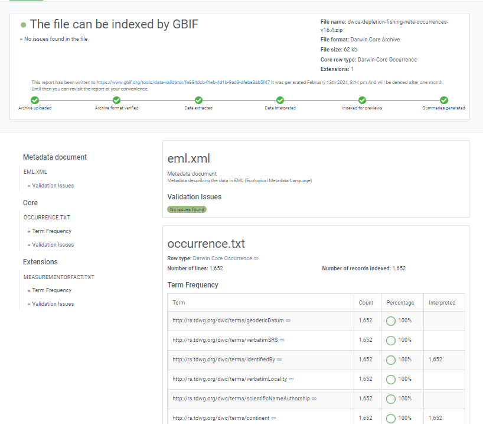
- Check the validation status of your file
Hmisc Describe (optional)
Another method for reviewing your data is to use the r package Hmisc and the function describe. Expand the example below using output from this notebook to see how it works.
Hmisc::describe
# pull in the occurrence file from https://www.sciencebase.gov/catalog/item/53a887f4e4b075096c60cfdd url <- "https://www.sciencebase.gov/catalog/file/get/53a887f4e4b075096c60cfdd?f=__disk__32%2F24%2F80%2F322480c9bcbad19030e29c9ec5e2caeb54cb4a08&allowOpen=true" occurrence <- read.csv(url) head(occurrence,n=1) vernacularName eventID occurrenceStatus 1 Alligator gar Station_95_Date_09JAN1997:14:35:00.000 Absent basisOfRecord scientificName 1 HumanObservation Atractosteus spatula scientificNameID kingdom phylum class 1 urn:lsid:marinespecies.org:taxname:279822 Animalia Chordata Actinopteri order family genus scientificNameAuthorship 1 Lepisosteiformes Lepisosteidae Atractosteus (LacepA"de, 1803) taxonRank organismQuantity organismQuantityType 1 Species 0 Relative Abundance occurrenceID 1 Station_95_Date_09JAN1997:14:35:00.000_Atractosteus_spatula collectionCode 1 Aransas Bay Bag Seine Hmisc::describe(occurrence)occurrence 18 Variables 334341 Observations -------------------------------------------------------------------------------- vernacularName n missing distinct 334341 0 61 lowest : Alligator gar Arrow shrimp Atlantic brief squid Atlantic bumper Atlantic croaker highest: Striped mullet Thinstripe hermit Threadfin shad White mullet White shrimp -------------------------------------------------------------------------------- eventID n missing distinct 334341 0 5481 lowest : Station_10_Date_04DEC1991:13:59:00.000 Station_10_Date_04SEP2002:13:17:00.000 Station_10_Date_05JUN1991:15:20:00.000 Station_10_Date_07APR1995:12:54:00.000 Station_10_Date_07APR2000:11:16:00.000 highest: Station_99_Date_21APR1998:18:24:00.000 Station_99_Date_22OCT2001:13:12:00.000 Station_99_Date_25JUN1990:13:48:00.000 Station_99_Date_25NOV2003:11:11:00.000 Station_99_Date_27JUN1988:12:45:00.000 -------------------------------------------------------------------------------- occurrenceStatus n missing distinct 334341 0 2 Value Absent Present Frequency 294469 39872 Proportion 0.881 0.119 -------------------------------------------------------------------------------- basisOfRecord n missing distinct value 334341 0 1 HumanObservation Value HumanObservation Frequency 334341 Proportion 1 -------------------------------------------------------------------------------- scientificName n missing distinct 334341 0 61 lowest : Adinia xenica Anchoa mitchilli Archosargus probatocephalus Ariopsis felis Atractosteus spatula highest: Stomatopoda Stomolophus meleagris Syngnathus scovelli Tozeuma carolinense Trichiurus lepturus -------------------------------------------------------------------------------- scientificNameID n missing distinct 334341 0 61 lowest : urn:lsid:marinespecies.org:taxname:105792 urn:lsid:marinespecies.org:taxname:107034 urn:lsid:marinespecies.org:taxname:107379 urn:lsid:marinespecies.org:taxname:126983 urn:lsid:marinespecies.org:taxname:127089 highest: urn:lsid:marinespecies.org:taxname:367528 urn:lsid:marinespecies.org:taxname:396707 urn:lsid:marinespecies.org:taxname:421784 urn:lsid:marinespecies.org:taxname:422069 urn:lsid:marinespecies.org:taxname:443955 -------------------------------------------------------------------------------- kingdom n missing distinct value 334341 0 1 Animalia Value Animalia Frequency 334341 Proportion 1 -------------------------------------------------------------------------------- phylum n missing distinct 328860 5481 4 Value Arthropoda Chordata Cnidaria Mollusca Frequency 71253 246645 5481 5481 Proportion 0.217 0.750 0.017 0.017 -------------------------------------------------------------------------------- class n missing distinct 328860 5481 5 lowest : Actinopteri Cephalopoda Elasmobranchii Malacostraca Scyphozoa highest: Actinopteri Cephalopoda Elasmobranchii Malacostraca Scyphozoa Value Actinopteri Cephalopoda Elasmobranchii Malacostraca Frequency 235683 5481 10962 71253 Proportion 0.717 0.017 0.033 0.217 Value Scyphozoa Frequency 5481 Proportion 0.017 -------------------------------------------------------------------------------- order n missing distinct 328860 5481 22 lowest : Atheriniformes Batrachoidiformes Carangaria incertae sedis Carangiformes Carcharhiniformes highest: Rhizostomeae Scombriformes Siluriformes Syngnathiformes Tetraodontiformes -------------------------------------------------------------------------------- family n missing distinct 328860 5481 36 lowest : Ariidae Atherinopsidae Batrachoididae Carangidae Carcharhinidae highest: Stromateidae Syngnathidae Tetraodontidae Trichiuridae Triglidae -------------------------------------------------------------------------------- genus n missing distinct 328860 5481 52 lowest : Adinia Anchoa Archosargus Ariopsis Atractosteus highest: Sphoeroides Stomolophus Syngnathus Tozeuma Trichiurus -------------------------------------------------------------------------------- scientificNameAuthorship n missing distinct 328860 5481 52 lowest : (Baird & Girard, 1853) (Baird & Girard, 1855) (Blainville, 1823) (Bosc, 1801) (Burkenroad, 1939) highest: Rathbun, 1896 Say, 1817 [in Say, 1817-1818] Shipp & Yerger, 1969 Valenciennes, 1836 Winchell, 1864 -------------------------------------------------------------------------------- taxonRank n missing distinct 334341 0 3 Value Genus Order Species Frequency 5481 5481 323379 Proportion 0.016 0.016 0.967 -------------------------------------------------------------------------------- organismQuantity n missing distinct Info Mean Gmd .05 .10 334341 0 8696 0.317 0.01639 0.03141 0.00000 0.00000 .25 .50 .75 .90 .95 0.00000 0.00000 0.00000 0.01005 0.07407 lowest : 0.0000000000 0.0000917684 0.0001835370 0.0002136300 0.0002241650 highest: 0.9969931270 0.9974226800 0.9981570220 0.9982300880 1.0000000000 -------------------------------------------------------------------------------- organismQuantityType n missing distinct value 334341 0 1 Relative Abundance Value Relative Abundance Frequency 334341 n missing distinct 334341 0 1 value Aransas Bay Bag Seine Value Aransas Bay Bag Seine Frequency 334341 Proportion 1 --------------------------------------------------------------------------------
Exercise
Challenge: Perform the following minimal quality assurance and control checks:
- Run a diagnostics report for the data quality.
- Ensure that the eventIDs are unique.
- Make sure that the eventDates follow ISO-8601 standards.
- Determine whether reported depths are accurate.
The event core data used in the checks below can be found in this Excel file.
Solution in R
Install obistools R packages. Use readxl package to read the Excel file.
- Run a diagnostics report for the data quality
library(readxl) library(obistools) trawl_fish <- readxl::read_excel('data/trawl_fish.xlsx') report <- obistools::report(trawl_fish) report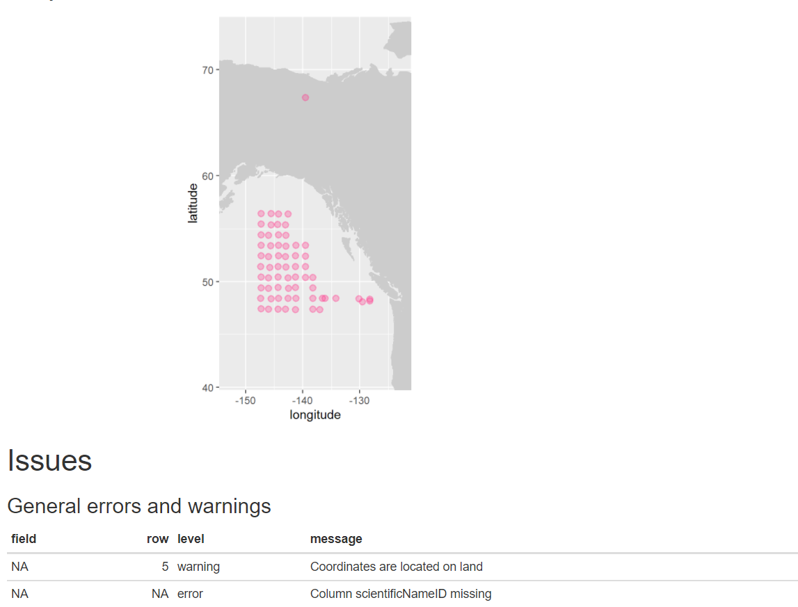
- Check to make sure
eventIDare uniqueeventid <- obistools::check_eventids(trawl_fish) head(eventid)# A tibble: 6 x 4 field level row message <chr> <chr> <int> <chr> 1 eventID error 7 eventID IYS:GoA2019:Stn6:trawl is duplicated 2 eventID error 8 eventID IYS:GoA2019:Stn6:trawl is duplicated 3 parentEventID error 1 parentEventID IYS:GoA2019:Stn1 has no corresponding eventID 4 parentEventID error 2 parentEventID IYS:GoA2019:Stn2 has no corresponding eventID 5 parentEventID error 3 parentEventID IYS:GoA2019:Stn3 has no corresponding eventID 6 parentEventID error 4 parentEventID IYS:GoA2019:Stn4 has no corresponding eventID- Check for proper
eventDateto ensure they follow ISO 8601 standards:eventDate <- obistools::check_eventdate(trawl_fish) print(eventDate)# A tibble: 3 x 4 level row field message <chr> <int> <chr> <chr> 1 error 10 eventDate eventDate 2019-02-24T07u40 does not seem to be a valid date 2 error 13 eventDate eventDate 2019-02-25 11h25min does not seem to be a valid date 3 error 15 eventDate eventDate 2019-26-2 does not seem to be a valid date- From the report generated under exercise 1, you can already see that there’s measurements made on land. This information can also be gathered by plotting the map separately or using the
check_onland()orcheck_depth()functions in the obistools package.depth <- obistools::check_depth(trawl_fish) onland <- obistools::check_onland(trawl_fish) # Gives the same output. print(depth)# A tibble: 1 x 16 eventID parentEventID eventDate year month day decimalLatitude decimalLongitude footprintWKT coordinateUncer~ minimumDepthInM~ <chr> <chr> <chr> <dbl> <dbl> <dbl> <dbl> <dbl> <chr> <dbl> <dbl> 1 IYS:Go~ IYS:GoA2019:~ 2019-02-~ 2019 2 22 67.4 -140. LINESTRING ~ 2313. 0 # ... with 5 more variables: maximumDepthInMeters <dbl>, samplingProtocol <chr>, locality <chr>, locationID <chr>, type <chr>Solution in Python
Install the pandas, cartopy, and geopandas Python packages. Use pandas to read the Excel file.
import pandas as pd url = 'https://ioos.github.io/bio_mobilization_workshop/data/trawl_fish.xlsx' df = pd.read_excel(url) # might need to install openpyxl df['row'] = df.index.to_numpy()+1 # python starts at zero
- Run a diagnostics report for the data quality.
import cartopy.io.shapereader as shpreader import geopandas as gpd import shapely.geometry as sgeom from shapely.ops import unary_union from shapely.prepared import prep import matplotlib.pyplot as plt gdf = gpd.GeoDataFrame(df, geometry=gpd.points_from_xy(df.decimalLongitude, df.decimalLatitude)) land_shp_fname = shpreader.natural_earth(resolution='50m', category='physical', name='land') land_geom = unary_union(list(shpreader.Reader(land_shp_fname).geometries())) land = prep(land_geom) for index, row in gdf.iterrows(): gdf.loc[index, 'on_land'] = land.contains(row.geometry) fig, axs = plt.subplots(ncols=1,nrows=2) # Make a map: xlim = ([gdf.total_bounds[0]-2, gdf.total_bounds[2]+2]) ylim = ([gdf.total_bounds[1]-2, gdf.total_bounds[3]+2]) axs[0].set_xlim(xlim) axs[0].set_ylim(ylim) gpd.read_file(land_shp_fname).plot(ax=axs[0]) gdf.loc[gdf['on_land']==False].plot(ax=axs[0], color='green', markersize=1) gdf.loc[gdf['on_land']==True].plot(ax=axs[0], color='red', markersize=1) # Collect some informational material about potential issues w/ data: invalid_coord = [] if len(gdf.loc[gdf['on_land']==True]) > 0: invalid_coord.append('Row {} coordinates on land.'.format(gdf.loc[gdf['on_land'] == True,'row'].tolist()[0])) req_cols = ['eventDate', 'decimalLongitude', 'decimalLatitude', 'scientificName', 'scientificNameID', 'occurrenceStatus', 'basisOfRecord'] missing_cols = [] for col in req_cols: if col not in gdf.columns: missing_cols.append('Column {} is missing.'.format(col)) # Add the information to the figure axs[1].text(0.25,0.25,'\n'.join(['\n'.join(missing_cols),'\n'.join(invalid_coord)])) axs[1].axis('off') plt.show()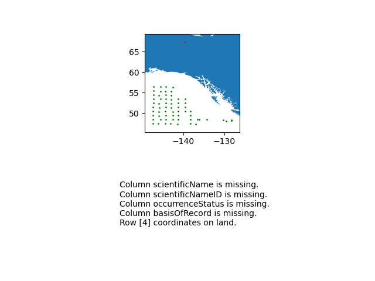
- Check to make sure
eventIDare uniquedup_events = df.loc[df['eventID'].duplicated()] print('Duplicated eventID:\n',dup_events[['eventID','row']]) parent_not_event = df.loc[~df['eventID'].isin(df['parentEventID'].unique())] print('\nparentEventID missing corresponding eventID:\n', parent_not_event[['parentEventID','row']])Duplicated eventID: eventID row 6 IYS:GoA2019:Stn6:trawl 7 7 IYS:GoA2019:Stn6:trawl 8 parentEventID missing corresponding eventID: parentEventID row 0 IYS:GoA2019:Stn1 1 1 IYS:GoA2019:Stn2 2 2 IYS:GoA2019:Stn3 3 3 IYS:GoA2019:Stn4 4 4 IYS:GoA2019:Stn5 5 .. ... ... 59 IYS:GoA2019:Stn60 60 60 IYS:GoA2019:Stn61 61 61 IYS:GoA2019:Stn62 62 62 IYS:GoA2019:Stn63 63 63 IYS:GoA2019:Stn64 64 [64 rows x 2 columns]- Check for proper
eventDateto ensure they follow ISO 8601 standards:for date in df['eventDate']: try: pd.to_datetime(date) except: print("Date",date,"might not follow ISO 8601")- From the report generated under exercise 1, you can already see that there’s measurements made on land. Now let’s check the depths are within reason for the points. Let’s use the GEBCO bathymetry dataset served in the coastwatch ERDDAP.
import time import numpy as np df['bathy'] = np.nan # initialize column for index, row in df.iterrows(): base_url = 'https://coastwatch.pfeg.noaa.gov/erddap/griddap/GEBCO_2020.csvp?' query_url = 'elevation%5B({})%5D%5B({})%5D'.format(row['decimalLatitude'],row['decimalLongitude']) url = base_url+query_url bathy = pd.read_csv(url) df.at[index,'bathy'] = bathy['elevation (m)'] # insert bathymetry value time.sleep(0.5) # to not ping erddap too much # make new column for depth in meters as negative because GEBCO is Elevation relative to sea level df['neg_maximumDepthInMeters'] = -1*df['maximumDepthInMeters'] print('maximumDepthInMeters deeper than GEBCO bathymetry:') if len( df.loc[df['neg_maximumDepthInMeters'] < df['bathy']] ) > 0: print(df.loc[df['neg_maximumDepthInMeters'] < df['bathy']].T) else: print('None')maximumDepthInMeters deeper than GEBCO bathymetry: 4 eventID IYS:GoA2019:Stn5:trawl parentEventID IYS:GoA2019:Stn5 eventDate 2019-02-22T09:49:00Z/2019-02-22T10:49:00Z year 2019 month 2 day 22 decimalLatitude 67.399004 decimalLongitude -139.552501 footprintWKT LINESTRING ( -139.583 67.397 , -139.522 67.401 ) coordinateUncertaintyInMeters 2313.094678 minimumDepthInMeters 0 maximumDepthInMeters 33.2 samplingProtocol midwater trawl locality NaN locationID NaN type midwater trawl row 5 bathy 306.0 neg_maximumDepthInMeters -33.2
Data Publishing Pipeline
After going through QAQC and being standardized to Darwin Core, the dataset are uploaded to an IPT. Metadata is added in the form of EML and the dataset published as a Darwin Core Archive (DwC-A). The data are then pushed to central OBIS. Each dataset also has the option of being pushed to GBIF through the OBIS IPT.
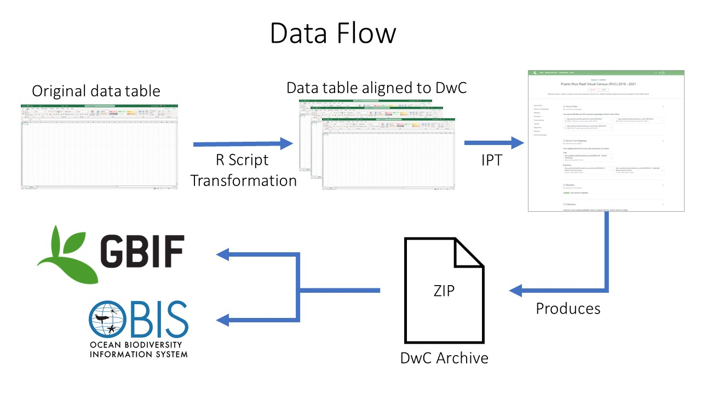
Data publishing pipeline. Image credit: Enrique MontesKey Points
Use at least the GBIF data validator before you publish data on the network
Continuing the Conversation
Overview
Teaching: 0 min
Exercises: 120 minQuestions
How do I continue my work after the workshop?
Where do I go to look for help with DwC alignment?
How do I provide feedback about this workshop?
Objectives
Complete the (optional) post-workshop survey.
Thank you for attending the workshop!
Our hope that you were able to register to GBIF and submit some of your data. If not, this is just the beginning and work needs to continue beyond the workshop. The national Node and the entire GBIF community will help you to succeed.
“Creativity comes from applying things you learn in other fields to the field you work in.” Aaron Swartz
Post-Workshop Survey
If you wish to provide feedback please use this post-workshop survey.
GBIF’s Technical Support Hour
The theme for March session of the Technical Support Hour for nodes is GBIF’s data quality workflow. We will go through how published data is processed in terms of quality checks, show how you can get an overview of the flags and issues of datasets, how users provide publically accessible feedback and how you can navigate the feedback yourself.
Registration
The event will take place on the 6th of March 2024 at 4pm CET (UTC+1)
Further readings
This section cover some useful links grouped by topics.
GBIF documentation
Key documents
- Memorandum of Understanding
- Data Publisher agreement
- Quick guide to publishing data through GBIF.org
- Data User agreement
- Citations guidelines
- IPT: The Integrated Publishing Toolkit
Other useful resources
On Data Standards
Well established ones
- Darwin Core Quick reference guide
- Darwin Core Hour - Webinar Series by iDigBio
- Access to Biological Collection Data (ABCD)
Emerging ones
On Georeferencing
On Persistent identifiers
Key Points
Overview
Teaching: min
Exercises: minQuestions
Objectives

Mini project
Templates for mini projects
The Mini Project: Biodiversity Data Use in Ethiopia
Workshop Session: Defining Your Project Scope
A Mini Project is a focused, hands-on application of the GBIF tools and data you have explored. The goal isn’t to write a full thesis, but to produce a “Data Insight”—a specific, evidence-based look at Ethiopia’s biodiversity.
1. What makes a good Mini Project? To keep your project manageable within the workshop timeframe, follow the “Rule of One”:
One Taxon: Pick one species (e.g., Ethiopian Wolf) or one genus (e.g., Aloe).
One Region: Focus on a specific area (e.g., Simien Mountains or The Great Rift Valley).
One Question: Ask one clear thing (e.g., “Are there enough recent records for this species to assess its conservation status?”).
2. Mini Project PathwaysChoose a track that matches your interest:
Track,Description,Key Task Data Cleaning,Improve the quality of existing data.,”Find records with ““Zero coordinates”” or ““Country mismatch”” and fix them using OpenRefine.” Spatial Analysis,Visualize where life exists.,Map the distribution of endemic species against Protected Area boundaries. Inventory/Gap Analysis,Identify what we don’t know.,”Identify ““data holes”“—areas in Ethiopia with high biodiversity but zero GBIF records.”
3. Your Project Canvas Every student/group should fill this out before starting:
Project Title: (e.g., Mapping the Diversity of Medicinal Plants in the Bale Mountains)
The Problem: What is the gap in our current knowledge?
The Data Source: How many records are currently available on GBIF for your search?
Tools Used: (e.g., GBIF portal, Excel, QGIS, or R).
Impact: How does this data help the Ethiopian Biodiversity Institute (EBI) or local conservationists?
4. Ethiopia-Specific Inspiration The Coffee Frontier: Map the occurrence of wild Coffea arabica and check the “coordinate uncertainty” to see how reliable the data is for climate modeling.
Invasive Species Tracking: Use GBIF data to visualize the spread of Prosopis juliflora in the Afar region over the last 10 years.
The Digital Herbarium: Compare historical records (pre-1950) with modern observations (post-2010) to see if species ranges appear to be shrinking.
5. Success Criteria A successful Mini Project ends with:
A cleaned dataset (free of major errors).
One compelling map or chart.
A citation of the data using the GBIF DOI.
Note to Students: In biodiversity informatics, a “small” project that fixes data errors is often more valuable than a “large” project that uses incorrect data!
Presentation: Data Publication workflow ‘generic’

GBIF supports publication, discovery and use of four classes of data:
- Resource metadata
- Checklist Data
- Occurrence Data
- Sampling Event Data
At the simplest, GBIF enables sharing information describing a biodiversity data resource – even when no further digital information is currently available from the resource. Other data classes support an increasingly richer and wider range of information on species, their distributions and abundance.
Data publishers are strongly encouraged to share their data using the richest appropriate data class. This maximizes the usefulness of the data for users.
To give yourself an introduction to how the IPT can be used to publish biodiversity data through GBIF.org, it’s highly recommended watching this concise 25 minute live demo below:

Prerequisites
You require an account on a GBIF Integrated Publishing Toolkit (IPT) to publish your data.
Hint: it is highly recommended that you save yourself time and money by requesting an account on an IPT located at a data hosting centre in your country or community.
Hint: you could install and maintain your own IPT instance if you have technical skills and capacity to maintain it online near 100% of the time.
Hint: if no data hosting centre exists in your country, and you or your organization don’t have the technical skills and capacity to host an IPT, you can contact the GBIF Helpdesk helpdesk@gbif.org for assistance.
Assuming that you would like to register your dataset with GBIF and make it globally discoverable via GBIF.org, your dataset must be affiliated with an organization that is registered with GBIF.
Hint: to register your organization with GBIF, start by completing this online questionnaire. The registration process can take days, so in parallel you can proceed to publish your data.
Hint: if you aren’t affiliated with any organization, you can contact the GBIF Helpdesk helpdesk@gbif.org for assistance. In the meantime, you can proceed to publish your data.
Instructions
To publish your data, follow the 7 steps below.
1. Select the class of biodiversity data you have from this list:
- Resource metadata
- Checklist Data
- Occurrence Data
- Sampling Event Data
2. Transform your data into a table structure, using Darwin Core (DwC) terms as column names
Hint: try using an Excel template to structure your data, and understand what DwC terms are required and recommended (Excel templates for each dataset class are available in the above links - see the previous point)
Hint: it is possible to use data stored in a supported database
3. Upload your data to the IPT
Hint: refer to other sections of this manual for additional guidance, such as the Manage Resources Menu section.
4. Map the data (e.g. Checklist Data gets mapped to the Taxon Core, Occurrence Data gets mapped to the Occurrence Core, Sampling Event Data gets mapped to the Event Core).
5. Fill in resource metadata using the IPT’s metadata editor
6. Publish the dataset (make it freely and openly available worldwide)
7. Register the dataset with GBIF.
Your organization must be registered with GBIF (see prerequisite 2 above) and added to your IPT by the IPT administrator. Otherwise, the organization will not be available to choose from in the IPT.
Exercises 1: Publish this occurrence dataset (dwc-a) on the Croatian IPT ipt.bioportal.hr
Most of the work on the publication of the data lies in the data cleaning, mapping and the description of the dataset. Once a Darwin Core archive was generated, it is fairly simple to publish it again, on another IPT for example.
Publish this dataset, “already published by the Croatian Faculty of science (which is already a GBIF data publisher) on the GBIF ECA Cloud IPT” again on the Croatian IPT. Make sure you are logged in on the IPT instance.
You should have recieved a pswdr and a login to the Croatian IPT instance.Solution
- donwload the dwc-a file here
- Go to the tab
manage resources- create a new dataset
Create new dataset- provide a new shortname
- Choose
Import from an archived resource- Choose the Dwc-a file
- Click
save- If everything went correct, your metadata and data is correctly mapped in the IPT and ready to publih.
- Click
publishto finish this exercise

Exercises 2: Publish this occurrence dataset on the Croatian IPT ipt.bioportal.hr
Unfortunately, in most cases you will not have a DwC-a file availble, meaning, that you should, together with the data researcher or person who would like to publish his or her data to GBIF, create a dwc-a.
The IPT is a good tool to create dwc-archives. (There are also other tools available here for example but we do not recommend this.
For this exercise we prepared all the files needed to generate a dwc-a. Make sure you are logged in on the IPT instance.
You should have recieved a pswdr and a login to the Croatian IPT instance.
You can find an occurrence file here
You can find the metadata here Copy paste only the minimal set of information on the right place in the IPTSolution
- donwload the dwc-a file
- go to the tab
manage resources- create a new dataset
Create new dataset- provide a new shortname
- select type
occurrenceand pushcreate- deal with
source data,darwin core mappingsandmetadata(tip see session metadata & data validation)- publish your dataset
- change visibility to
public- register your dataset (not needed in this exercise)
- Click
publishto finish this exercise
Exercises 3: Publish this sample based dataset dataset on the Croatian IPT ipt.bioportal.hr
Unfortunately, in most cases you will not have a DwC-a file availble, meaning, that you should, together with the data researcher or person who would like to publish his or her data to GBIF, create a dwc-a.
The IPT is a good tool to create dwc-archives. For this exercise we prepared all the files needed to generate a dwc-a. Make sure you are logged in on the IPT instance.
You should have recieved a pswdr and a login to the Croatian IPT instance.
You can find an occurrence file here occurrence
You can find the event file here event
You can find the metadata here Copy paste only the minimal set of information on the right place in the IPTSolution
- go to the tab
manage resources- create a new dataset
Create new dataset- provide a new shortname
- select type
sampling eventand pushcreate- deal with
source dataadd both files to the IPT- deal with
darwin core mappingsfor the occurrence file- deal with
darwin core mappingsfor the event file- deal with
metadataalso here, only copy paste the minimum needed- publish your dataset
- change visibility to
public- register your dataset (not needed in this exercise)
- Click
publishto finish this exercise
Exercises 4: Publish this checklist dataset dataset on the Croatian IPT ipt.bioportal.hr
Now, we will publish a checklist data on on the IPT. A checklist is a 3rd type of dataset you can publish on Global Biodiversity Information Facility. A cheklist has no occurrences as the core file, but the species (the taxon) is at the centre of the star scheme. For this exercise we prepared all the files needed to generate a dwc-a. Make sure you are logged in on the IPT instance.
You should have recieved a pswdr and a login to the Croatian IPT instance.
You can find all the needed data here: TrIAS The TrIAS cheklist is a live ‘cheklist’ which is regurlaly updated throughGithub actionsand an automatic update function in the IPT.
You can donwload the needed files from Github. If you want to make sure your published datsets is always up to date, you can use the raw online files as a source file raw Github content For this checklist, we have a taxon, description, distribution, speciesprofile and references file. Only use (download) the taxon, description and spieciesprofile file for this exercise. You can find the metadata here Copy paste only the minimal set of information on the right place in the IPTSolution
- go to the tab
manage resources- create a new dataset
Create new dataset- provide a new shortname
- select type
checklistand pushcreate- deal with the
source dataimport all files in the IPT. In the IPT, for taxon choosesource data is urlinstead of file and use this url raw Github content- deal with
darwin core mappingsfor thedistributionfile- deal with
darwin core mappingsfor thedistributionfile- deal with
darwin core mappingsfor theprofilefile- deal with
metadataalso here, only copy paste the minimum needed- publish your dataset
- change visibility to
public- register your dataset (not needed in this exercise)
- Click
publishto finish this exercise

Key Points
Mini project Continued
Overview
Teaching: 30 min
Exercises: 30 minQuestions
Mini project
Objectives
Continue your Mini Project
Mini Project Continued
Becoming a data publishers
1. Secure institutional agreements
Before to share data through the GBIF network, you should alert administrators of your plans to publish on behalf of your institution. Sharing open data will increase the visibility of your institution, building on traditional methods like academic publications and specimen loans to bring new collaboration opportunities and international recognition through DOI-based citations.
2. Request Endorsement
To become a data publisher, your organization must request endorsement from the GBIF community. Once you have reviewed the data publisher agreement and agree in principle to share data, we encourage you to request endorsement for your organization as soon as possible to avoid delays in publishing data.
Data Publisher Agreement
Terms and conditions:
- I have read and understood GBIF’s Data Publisher Agreement and agree to its terms.
- I understand that I am seeking registration on behalf of my organization, and confirm that the responsible authorities of my organization are aware of this registration.
- I understand that my organizational information, including the contact details provided, will be made publicly available through GBIF.org.
see on GBIF.org
Data user agreement
It is also important for data publishers to carefully read the agreement between GBIF and data users see on GBIF.org
3. Select your publishing tools and partners
Your data may arrive to GBIF via different ways, or tools. Today, much of the data arrive from the Integrated Publishing Toolkit(IPT) installed at the institution, at the natioan node, at GBIF Secretariat(hosted IPT) or elesewhere. The Living Atlases platform, originally developed by the Atlas of Living Australia, also offers data publication.
Other alternatives exist: fully automated based on GBIF API or simply by putting on the web (HTTP installation).

4. Data Management Plan
As Data publishers, you will decide:
- the data you want to publish to GBIF
- the dataflow between you and GBIF
- the tools you will use for publishing
- the richness and precision of your data
- the license/waiver you want to apply yo your date
- the description of your data(metadata)
- the contacts for your institution and datasets
We would suggest you to document all this in your institution/unit Data Management Plan.
Exercise
Please take some time to answer these questions:
- Is your institution ready to become a data publisher?
- What are your reasons or incentive?
- What are your fears or reticence?
- Do you need to convince your management?
- Do you have enough arguments for that?
Incentives for publishing open-access biodiversity data
An important part of GBIF’s mission is to promote a culture in which people recognize the benefits of publishing open-access biodiversity data, for themselves as well as for the broader society.
By making your data discoverable and accessible through GBIF and similar information infrastructures, you will contribute to global knowledge about biodiversity, and thus to the solutions that will promote its conservation and sustainable use. Data publishing enables datasets held all over the world to be integrated, revealing new opportunities for collaboration among data owners and researchers. Publishing data enables individuals and institutions to be properly credited for their work to create and curate biodiversity data, by giving visibility to publishing institutions through good metadata authoring. This recognition can be further developed if you author a peer-reviewed data paper, giving scholarly recognition to the publication of biodiversity datasets. Collection managers can trace usage and citations of digitized data published from their institutions and accessed through GBIF and similar infrastructures. Some funding agencies now require researchers receiving public funds to make data freely accessible at the end of a project.
see How to become a data publisher chapter
Glossary
- GBIF Participant
- Signatory of the GBIF Memorandum of Understanding (MoU)
- GBIF Secretariat
- Legal entity empowered by the GBIF Participants to enter into contracts, execute the Work Programme, and maintain the central services for the GBIF network including software components and updates, interfaces, indexing and registry services, helpdesk and relevant training.
- GBIF network
- The infrastructure consisting of the central services of the GBIF Secretariat, Participant Nodes and Data Publishers. Making data available through the GBIF network means registering and advertising the pertinent services via the GBIF central services.
- Participant Node
- An organisational unit designated by the GBIF Participant to coordinate activities in its domain. It may also provide data.
- Biodiversity data
- Primary data on specimens, observations, names, taxonomic concepts, and sites, and other data on biological diversity.
- Metadata
- Data describing the attributes and combinations of biodiversity data.
- Data
- Biodiversity data and metadata.
- Data publishing
- The process of and agreements for making data freely and universally available on the Internet.
- Data Publisher
- A custodian of data making it technically available. This may or may not be the data owner. If not they will have declared to GBIF that they have permission to make the data available.
- Data User
- Anyone who uses the Internet to access data through the GBIF network.
- Owner of data
- The legal entity possessing the right resulting from the act of creating a digital record. The record may be a product derived from another, possibly non-digital product, which may affect the right.
- Sensitive data
- Any data that the Data Publisher does not want to make available, e.g. precise localities of endangered species.
Key Points
Use the DOI
Coffee break
Overview
Teaching: min
Exercises: minQuestions
Objectives
Key Points
Mini project presentation
Overview
Teaching: 30 min
Exercises: 30 minQuestions
How is IPT organized and managed
Objectives
Understand how IPT can be managed
Mini project presentation
Linkt to the Mini project produced scripts
presentation IPT admin

Exercises 1: Get familiar with the Croatian IPT
You should be already a little bit familiar with the Croatian IPT. Now Login as an admin and use the force
- Add a logo to your IPT installation
- Change the IPT colors to the colors you want
- Add a user account ~role Manager with registration rights (You can delete this user af needed)
- Any organisations we would like to add?
- Make sure all the Core types and extensions are available
Solution
- You are familiarized with your IPT instance
Key Points
The GBIF portal is the place to find biodiversity data
Lunch Break
Overview
Teaching: min
Exercises: minQuestions
Objectives
Key Points
The GBIF registry
Overview
Teaching: 30 min
Exercises: 30 minQuestions
Objectives
Get used to the GBIF Registry
Understand what it can deliver?
Explore GBIF API, Pygbif, Rgbif
Presentation
This presentation will introduce you to GBIF Registry( a core component of GBIF architecture ).
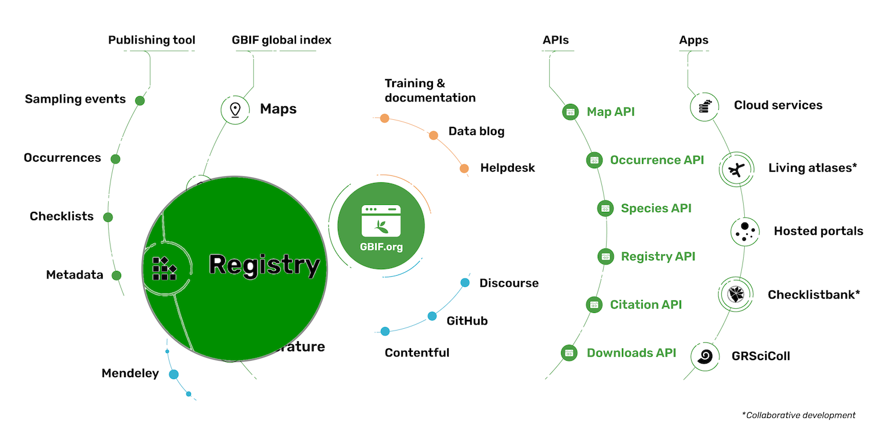
Exercise 1 : Find your organisation in the Registry
Within your browser:
- List the publishing organizations from Croatia
- Get all details of your organization, (or another one if you are not in the list)
- Gets a list of datasets published by this organization
Solution 1
Exercise 2 : use Python or R programming
With Pygbif or Rgbif packages:
- List the publishing organizations from Croatia
- Get all details of your organization, (or another one if you are not in the list)
- Gets a list of datasets published by this organization
Solution 2
Key Points
GBIF Registry
Pygbif & Rgbif
Webservices API
Feedback, summary and certificates
Overview
Teaching: 60 min
Exercises: 0 minQuestions
Why is GRSCiColl important?
How can I help?
Objectives
Discover GRSCiColl
Help curation of Scientific Collections
Feedback, summary and certificates
GRSciColl
The Global Registry of Scientific Collections is a comprehensive, community-curated repository of information about scientific collections that extends work initially started by the Consortium of the Barcode of Life (CBOL).
Global Registry of Scientific Collections (GRSciColl) from GBIF on Vimeo.
In this issue of the support hour 12, the Data Products team will give you an overview of the Global Registry of Scientific Collections (GRSciColl) 3. How to edit it in the interface or with he Collections registry API 3 and how the occurrences published on GBIF are linked to GRSciColl entries.
Exercise
- Find the Natural History Museum Rijeka in GRSciColl.
- To your knowledge, is this information accurate and up-to-date?
- If not, suggest amendments via the edit button
Key Points
GRSciColl a central registry maintained by GBIF
GRSciColl a community effort
Coffee break
Overview
Teaching: min
Exercises: minQuestions
Objectives
Key Points
GBIF Discussion
Overview
Teaching: 0 min
Exercises: 60 minQuestions
Objectives
Group discussion
Discussion
-
Data Standardization: Discuss the role of data standardization in ensuring interoperability and usability of biodiversity data across different platforms, including GBIF hosted portals, GRSciColl, and IPT. How can we encourage data publishers to adhere to established standards?
-
Metadata Management: Explore strategies for managing metadata associated with biodiversity datasets. How can metadata standards be applied consistently across different platforms to improve data discoverability and usability?
-
Quality Control and Assurance: Address the importance of quality control and assurance processes in maintaining the reliability and accuracy of biodiversity data hosted on GBIF portals. How can data publishers and GBIF collaborate to ensure data quality?
-
Capacity Building: Explore opportunities for capacity building initiatives to empower researchers and institutions to utilize GRSciColl, and IPT effectively. How can training programs and resources be tailored to the needs of different user groups?
-
Sustainability: Consider the long-term sustainability of GRSciColl and IPT. What are some challenges and opportunities for ensuring the continued operation and development of these platforms?
-
**A histed portal for your institute or network?” Discuss the possibility to start a hosted portal for your institute or network. What would be your way to go!?
Discussion challenge
Choose a topic to discuss in your group. 30 minutes for group discussion. 30 minutes for reporting back to the room. 5-6 persons per group.
Solution
Report back to the room on your group discussion
Key Points
How GBIF works
GBIF opportunities (CESP, BID, Ambassador programme, data use club...)
Overview
Teaching: 60 min
Exercises: 0 minQuestions
What is CESP
What is BID
…
Objectives
Learn about CESP
Learn about BID
Learn about the GBIF Ambassador programme
Living atlasses community

As GBIF nodes, one of our goals is to highlight our publishers and their data. To achieve this, the Atlas of Living Australia (ALA) developed a huge open source platform with several modules re-usable by other organizations. Since 2013, the community around this tool has organized technical workshops to present ALA modules to other institutions that wanted to implement it, to improve already existing national data portals and to learn from each other’s achievements.

CESP: Capacity Enhancement Support Programme

This programme aims to address specific capacity needs identified by GBIF Participants by facilitating collaboration at regional and global levels.
The annual calls for proposals under this programme provide co-funding to GBIF Participants for capacity enhancement projects based on combinations of the following types of action:
Mentoring activities: Interactions among two or more Participants where the core objective is the transfer of information, technology, experience and best practices in small groups.
Support for regional events and training workshops: Courses and workshops with a regional (multi-national) component to enhance the capacity of individuals or networks to contribute to and benefit from GBIF.
Documentation: Production of key learning and promotional resources or their adaptation to the national or regional context (e.g. by translation or including local/regional perspectives). The GBIF Secretariat advocates digital-first documentation to provide technical guidance and support training and skills development across GBIF’s communities of practice. The key features of this system include standardized documentation, routine updates, versioning, translations, community input, peer review, and searchable format.
These types of action are part of the suite of capacity enhancement activities provided by GBIF, to enable effective mobilization and use of biodiversity information.


BID: Biodiversity Information for Development

Biodiversity Information for Development (BID) is a multi-year programme funded by the European Union and led by GBIF with the aim of enhancing capacity for effective mobilization and use of biodiversity data in research and policy in the ‘ACP’ nations of sub-Saharan Africa, the Caribbean and the Pacific.
Funding from the programme’s first phase has supported capacity enhancement activities and projects to mobilize biodiversity data and strengthened national and regional biodiversity information facilities in these regions. Its impacts to date have focused on data that support the regions’ policy needs, particularly in connection with protected areas, threatened species and invasive alien species.

Data use club

The Data Use Club is a space that promotes the interaction between data users and provides them with tools for developing skills in data use, no matter where they are in the world. In the club, we provide support in the following form:
Training seminars: This quarterly webinar series highlights approaches to global problems using GBIF-mediated data. Each seminar provides opportunities for knowledge exchange and inspiration for GBIF users who wih to develop their own solutions to similar challenges.
Practical sessions: This quarterly webinar series focuses on developing the informatic and data management skills necessary to fully exploit the potential of GBIF-mediated data. The material for these sessions expands on the biodiversity data use curriculum developed by GBIF.
DataCamp online training: GBIF users can receive free access to the full suite of online training offered by DataCamp through DataCamp Donates.
For questions regarding the Data Use Club, please contact datause@gbif.org

Ambassador programme

The success of GBIF depends in part on establishing a good understanding within research and policy communities of the benefits and opportunities provided by free and open access to biodiversity data, as well as the importance of responsible use of such data through proper citation and attribution.
The GBIF Secretariat and GBIF participant nodes work to promote this understanding through their communication platforms, at meetings and across networks around of the world. However, this relatively small group can never hope to reach all relevant communities without assistance.
Biodiversity Open Data Ambassadors can fill that gap. If you are a biodiversity professional who promotes the principles and best practices of open data sharing and use, we can equip you with information resources, networking opportunities and recognition to make you an even more effective advocate in your own professional communities.
How to become a GBIF data ambassador
Are you a potential Biodiversity Open Data Ambassador? We ask for some minimum qualifications and a basic level of commitment, namely that:
- You can provide at least one example in which you have shared biodiversity data through GBIF, used GBIF-mediated data, and/or advocated open data in your professional capacity
- You agree with the ICSU-World Data System Data Sharing Principles: in short, that data should be shared openly in a timely manner, with the fewest restrictions possible and used with proper citation.
- You consent to have your contact details openly available on GBIF.org, and possibly on websites run by GBIF nodes and partners
- You consent to be contacted by GBIF Secretariat and GBIF nodes with requests to promote open biodiversity data at particular events
-
You undertake to provide details of at least one example each year of an event, publication or process in which you have advocated for open biodiversity data
If you fit the description above, it’s simple—just fill out this form.
GBIF translators

Can I join the GBIF translator community?
The work of translation is never done: we are always creating new content, and we introduce small but incremental additions and adjustments to the user interface on an almost weekly basis. We often have other publications and documentation in need of translations (or updated translations), so we welcome the involvement of newcomers who can help us maintain progress in making free and open data even more widely accessible around the world.
If you are interested in joining our volunteer community, please feel free to email us at communication@gbif.org. We’ll discuss current priorities and arrange a time to orient you to the key tools and the most pressing tasks.
If you already have experience with CrowdIn (which our community first started using in 2014 to translate the interface for the GBIF IPT), you can simply request to join the CrowdIn project for your preferred language.
Ebbe Nielsen Challenge

The GBIF Ebbe Nielsen Challenge is an annual incentive prize that seeks to inspire innovative applications of open-access biodiversity data by scientists, informaticians, data modelers, cartographers and other experts.
The call for entries for the 2024 Ebbe Nielsen Challenge is now open! DEADLINE: 24 August 2024
Like the Ebbe Nielsen Prize it replaced, the Challenge honours the memory of Dr Ebbe Schmidt Nielsen, an inspirational leader in the fields of biosystematics and biodiversity informatics and one of the principal founders of GBIF, who died unexpectedly just before it came into being.
While the focus of the competition has evolved from year to year, Challenge entries manifest a variety of forms and approaches—new analytical research, richer policy-relevant visualizations, web and mobile applications, or improvements to processes around data digitization, quality and access. Allocations from the annual prize pool of €20,000 will award the first-place team with €8,000, €6,000 for second place, and €3,000 each for the third-place winners.

The Graduate Researchers Award

The Graduate Researchers Award (previously the Young Researchers Award) is an annual programme aimed at fostering innovative research and discovery in biodiversity informatics. The GRA provides prizes to two graduate students—generally one Master’s candidate and one Ph.D candidate—nominated by GBIF Participant countries.
Since its inception in 2010, the Award has encouraged innovation in the use and mobilization of biodiversity data shared through the GBIF network.
Calls for nominations go out each spring, and interested students must submit applications to either a national Head of Delegation or node manager from a GBIF Participant country. These national delegations may nominate a maximum of two students each year to the GBIF Secretariat.
Graduate students wishing to be considered for the nominations should consult the websites of their national GBIF Participants or contact the Head of Delegation or node manager directly. The GBIF Secretariat and national Participants whose nominees are selected to receive the award announce the award winners each autumn just before the annual Governing Board meeting.
GBIF data use

Data from the GBIF network is used in scientific studies published in peer-reviewed journals at a rate of more than four papers every day. Review highlights from the most recent publications drawn from the Secretariat’s ongoing literature tracking programme or check out the comprehensive literature database, which comprises more than 9,000 entries from scientific literature that cite the use of GBIF-mediated data.
Based on their scientific impact, relevance and uniqueness as well as diversity in taxonomy and geography, we select and feature a handful of papers every month. These are later compiled into a printed publication—the Science Review, our annual compilation of scientific articles—partial but instructive—enhanced and supported by free and open data that the GBIF network of members and publishers make available.
The applicability of free and open biodiversity data spans beyond academia, as GBIF-mediated data is also used to inform decision-making and policy—ranging from documents produced by local and national agencies—to extinction risk assessments for thousands of species on the IUCN Red List of Threatened Species— and comprehensive reports by large-scale intergovernmental and convention-based bodies—such as the Intergovernmental Panel on Climate Change (IPCC) and the the Intergovernmental Science-Policy Platform on Biodiversity and Ecosystem Services (IPBES).
GBIF mentors and trainers

Mentors and trainers are a pillar of the GBIF community of practice. By sharing their expertise within the community, GBIF mentors contribute to capacity enhancement by providing support to project teams, participating in training events and by interacting with other mentors.
Becoming a volunteer mentor is an opportunity to collaborate with the growing community of scientists, institutions, and networks involved in the mobilization and use of biodiversity data, and to make new connections all around the world. GBIF maintains an open call for volunteers to join this group of mentors and trainers.
Areas of expertise Mentors typcially have experience in several of the following areas:
- Biodiversity data mobilization
- Biodiversity data management
- Biodiversity data publishing
- Biodiversity data analysis and use
- Node development
Become a GBIF mentor
- Volunteer
- Complete the mentor certification after your application has been reviewed.
- Join the GBIF Community Forum and participate in the )[discussions](https://discourse.gbif.org/c/mentors with other mentors on the community forum.
- Answer occasional calls to mentors to participate in capacity support activities as project mentors and/or workshop mentors and trainers.
Key Points
keypoints
Biodiversity Informatics Network (TDWG)
Overview
Teaching: 30 min
Exercises: 0 minQuestions
Biodiversity Informatics Network (TDWG)
Objectives
Understand what TDWG is doing and how it proceed?
TDWG
Biodiversity Information Standards (TDWG) is a non-profit organization and a community dedicated to developing biodiversity information standards. To achieve its goals, TDWG:
- Develops, ratifies and promotes standards and guidelines for the recording and exchange of data about organisms
- Acts as a forum for discussing all aspects of biodiversity information management through meetings, online discussions, and publications
see TDWG website for more.
Community
TDWG is an open, bottom-up organization. Anyone can become a member, individuals as well as institutions (including government agencies, non-governmental organizations, programs, and projects). Everything TDWG produces comes from the expertise, collaboration, and support of its members - people and organizations who create, manage, integrate, and analyze biodiversity information.
As an example, let’s see the How we developed a Data Exchange Format: Lessons Learned from Camera Trap Data Package (Camtrap DP). Presented by Peter Desmet as part of the TDWG 2023 Hybrid Annual Conference in Hobart, Tasmania.
Standards
Darwin Core is a standard maintained by the Darwin Core Maintenance Interest Group.
What is Darwin Core, and why does it matter?
The Darwin Core Standard (DwC) offers a stable, straightforward and flexible framework for compiling biodiversity data from varied and variable sources.
Conferences
TDWG annual conferences provide a showcase for state of the art biodiversity informatics, much of which relies on the standards created by TDWG and other organizations. Our conferences also provide a forum for developing, refining, and extending our standards in response to new challenges and opportunities.
Key Points
TDWG community
TDWG standards
TDWG conferences
Coffee break
Overview
Teaching: min
Exercises: minQuestions
Objectives
Key Points
GBIF mentoring programme CESP
Overview
Teaching: 30 min
Exercises: 30 minQuestions
What is IPT?
How is IPT organized
The GBIF portal
Objectives
Understand how IPT works.
Understand how GBIF is organized.
Basic understanding of the GBIF portal
Key Points
The GBIF portal is the place to find biodiversity data
Lunch Break
Overview
Teaching: min
Exercises: minQuestions
Objectives
Key Points
GBIF BID programme
Overview
Teaching: 30 min
Exercises: 30 minQuestions
What is IPT?
How is IPT organized
The GBIF portal
Objectives
Understand how IPT works.
Understand how GBIF is organized.
Basic understanding of the GBIF portal
Key Points
The GBIF portal is the place to find biodiversity data
Develop GBIF data mobilization Strategy
Overview
Teaching: 30 min
Exercises: 60 minQuestions
What is a data mobilization strategy
Objectives
Develop a data mobilization strategy.

Guidance document on Belgian Data Mobilization strategy

Key Points
The GBIF portal is the place to find biodiversity data
A data mobilization strategy helps you in organizing your data mobilization
Coffee break
Overview
Teaching: min
Exercises: minQuestions
Objectives
Key Points
Develop GBIF data mobilization Strategy 2
Overview
Teaching: 10 min
Exercises: 30 minQuestions
Who are your stakeholders?
Who are your key stakeholders?
Objectives
Identify all your stakeholders
Map your stakeholders (influence vs interest)
Key stakeholders and primary audience
Presentation
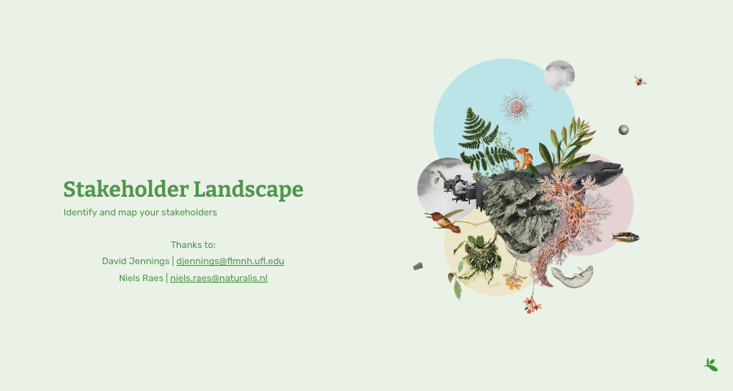
Exercise
- List all your stakeholders
- Map them with this matrix
- Determine your key stakeholders = Influent AND Interested
- Determine your audience = Influent OR Interested
Key Points
Node success depends on interaction with your stakeholders.
Some stakeholders (with high influence & interest) are key.
Continuing the Conversation
Overview
Teaching: 0 min
Exercises: 120 minQuestions
How do I continue my work after the workshop?
Where do I go to look for help with DwC alignment?
How do I provide feedback about this workshop?
Objectives
Complete the (optional) post-workshop survey.
Thank you for attending the workshop!
Our hope that you were able to register to GBIF and submit some of your data. If not, this is just the beginning and work needs to continue beyond the workshop. The national Node and the entire GBIF community will help you to succeed.
“Creativity comes from applying things you learn in other fields to the field you work in.” Aaron Swartz
Post-Workshop Survey
If you wish to provide feedback please use this post-workshop survey.
GBIF’s Technical Support Hour
The theme for March session of the Technical Support Hour for nodes is GBIF’s data quality workflow. We will go through how published data is processed in terms of quality checks, show how you can get an overview of the flags and issues of datasets, how users provide publically accessible feedback and how you can navigate the feedback yourself.
Registration
The event will take place on the 6th of March 2024 at 4pm CET (UTC+1)
Further readings
This section cover some useful links grouped by topics.
GBIF documentation
Key documents
- Memorandum of Understanding
- Data Publisher agreement
- Quick guide to publishing data through GBIF.org
- Data User agreement
- Citations guidelines
- IPT: The Integrated Publishing Toolkit
Other useful resources
On Data Standards
Well established ones
- Darwin Core Quick reference guide
- Darwin Core Hour - Webinar Series by iDigBio
- Access to Biological Collection Data (ABCD)
Emerging ones
On Georeferencing
On Persistent identifiers
Key Points
Course Evaluation
Overview
Teaching: min
Exercises: minQuestions
Objectives


Key Points
GBIF discussion
Overview
Teaching: 60 min
Exercises: 0 minQuestions
GBIF nodes and ECA network
strategic Framework
GBIF implementation plans
work programmes
Objectives
Understand how GBIF works.
Understand how GBIF is organized.
Key Points
How GBIF works